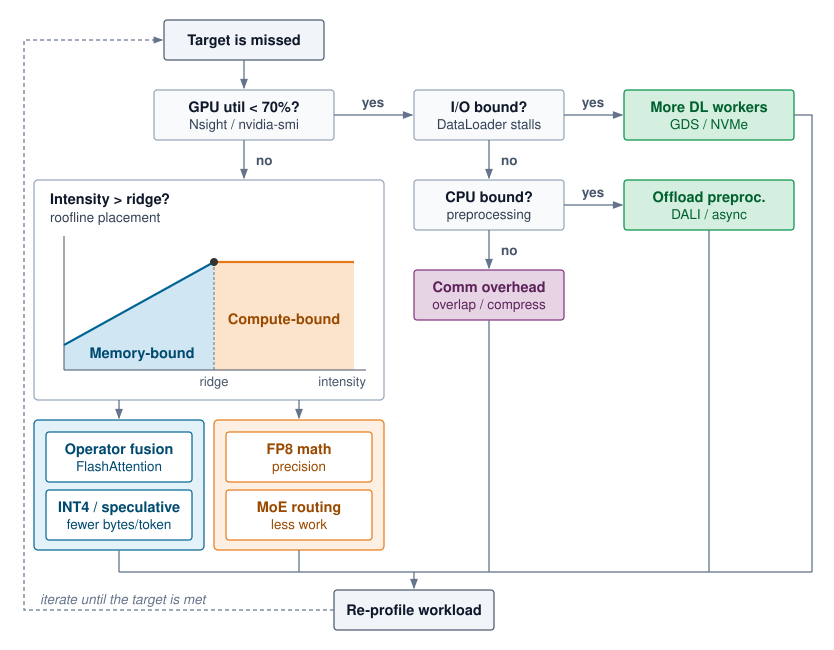
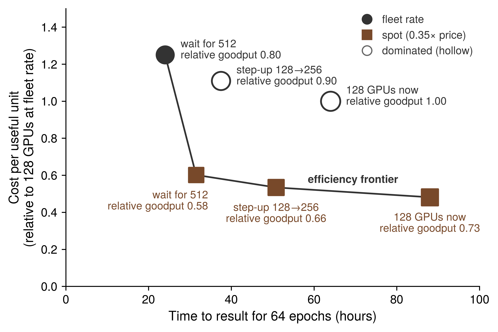

9 Fleet Efficiency

Purpose

Fleet stack focus for this chapter.
Why can a fleet that is fully allocated and visibly busy still turn only a fraction of its compute into training progress and served requests?
Expensive accelerators can spend much of a training step or a request waiting for data, software dispatch, or communication while their arithmetic units remain underused. Adding more machines may raise cost without removing the delay, and a faster isolated kernel may leave the step’s or request’s critical path unchanged. The engineering stakes are useful fleet capacity, the training progress and completed service an existing fleet produces while preserving model quality. A dashboard that counts every held accelerator as busy cannot see that waste, so a fleet can look fully used while turning only a fraction of its capacity into useful work. These interactions make optimization a question of measured constraints rather than a search for the fastest component. On one machine, a local improvement can be tested against a relatively contained execution path. Across a fleet, its value also depends on scheduling, recovery, communication, synchronization, and the distribution of work across devices. The cost of a mistaken diagnosis grows when the same inefficient execution repeats across many replicas and many weeks of training, and when the remedy is applied by a team that does not own the loss. A saving that looks large in isolation is worth only the part that survives along the complete step or request path. In C³ terms, fleet efficiency holds every compute gain accountable to the communication and coordination costs that decide how much of a fleet’s capacity becomes useful work.
Learning Objectives
- Explain how a job’s or fleet’s useful output decomposes into scheduling, runtime, and program goodput, with each loss charged to exactly one factor
- Measure goodput under a reproducible contract and localize the lost factor from scheduler records, job timelines, and step traces
- Attribute scheduling and runtime losses using the owners’ results, without re-deriving them
- Measure program goodput with MFU and MBU and find the Fleet Law term a fix must shorten
- Select fleet-level program levers (compiler partitioning, overlap under contention, compilation) and recognize kernel-level levers by the term they shorten
- Evaluate a change that trades one factor against another by its effect on the product, and place the result on the efficiency frontier
Explore the concepts in this chapter
The volume’s concept map, opened on this chapter. Select a concept to read how it connects to ideas in other chapters. Open the full map ↗
9.1 Where Fleet Capacity Goes
A fleet can be fully allocated and visibly busy while most of its capacity never becomes training progress or completed service. When thousands of accelerators run a single workload, losses accumulate before a job starts, between the steps it executes, and inside the steps it keeps. The size of that gap is clearest in a run whose engineering is not in doubt.
Lighthouse 9.1: Archetype A (GPT-4/Llama-3): Held capacity versus progress
Even that one-third figure overstates what a shared cluster delivers, because the Llama 3 numbers begin only after the job holds its accelerators. On a multi-tenant fleet, the setting of Fleet Orchestration, capacity is also lost before a job starts. Accelerators sit unallocated when no queued job fits the free pool, or a job holds part of its gang while waiting for the remaining members and cannot execute a single step. The orchestrator’s accounting separates allocated capacity from productive work, yet it cannot see where inside a running job the missing work went. Allocated capacity is where fleet-efficiency accounting begins, not evidence that the fleet used those accelerators well.
↩︎ The allocated, active, and productive tiers of fleet resource accounting are established in Allocated, active, and productive utilization.
Earlier chapters examined the mechanisms of a fleet one layer at a time: data delivery (Data Storage), collective communication (Collective Communication), parallel work partitioning (Distributed Training), fault recovery (Fault Tolerance), and cluster scheduling (Fleet Orchestration). Each subsystem reports performance in its own local unit—input stall ratio, link bandwidth, scaling efficiency, availability, or cluster occupancy—and none of those isolated metrics tells an organization what fraction of its fleet investment becomes useful progress. Worse, when subsystem reports are read separately, their denominators overlap in some places and leave gaps in others. An hour lost to a restart can be penalized in two reports at once, while accelerators held idle by an incomplete gang vanish between the scheduler’s log and the job’s step timer. As we enter the Serving band of The Fleet Stack, performance engineering requires a single end-to-end accounting framework that follows every accelerator-hour from offered hardware to useful output and ranks every optimization lever across the stack on one common scale.
↩︎ The Fleet Law, where these multiplicative efficiency factors are first previewed, is established in The Fleet Law.
To make that accounting concrete, one recurring training job carries the numbers through this chapter: pretraining Llama 2 70B, a smaller Archetype A model than the archetype’s 175B reference, on 128 GPUs (16 nodes of eight GPUs each) in a shared cluster. The job uses 8-way tensor parallelism within each node and data parallelism across nodes. Because it competes with other teams for complete gang allocations, absorbs cluster failures and preemptions, and executes steps whose exposed communication grows with node count, every stage of fleet loss appears in a single workload on a single pool.
↩︎ Archetype A and its 175B-parameter reference model are established in Archetype A (GPT-4/Llama-3).
A serving replica of the same model provides the running example’s inference twin. The replica spans one node of eight H100 GPUs, so a single tensor-parallel node forms one complete serving unit. Because a dense Archetype A transformer cannot fit on one accelerator, the eight GPUs exchange activations in every layer. The cluster scheduler must place the replica as an indivisible gang, the replica must load weights and warm up before taking traffic, and its decode steps can leave most of the node’s arithmetic idle while weights stream from high-bandwidth memory (HBM). Its capacity losses therefore arise at the same stages as those of the training job.
The serving twin also marks where fleet-efficiency accounting stops and request-level serving design begins. In production serving, requests share execution across dynamically formed batches, occupy key-value cache memory, and must satisfy tail-latency targets; Serving at Scale develops how a serving engine manages uneven arrivals under those constraints. Here, the boundary test is whether a loss would persist even under a steady, uncontended stream of work. A replica held off-line while loading weights, or a decode step that reads weights more slowly than the node’s memory bandwidth allows, fails to use held hardware even without arrival bursts and is counted here over windows of hours to weeks. By contrast, a request delayed behind an oversized batch is a queueing phenomenon caused by uneven arrivals and belongs to serving analysis. Headroom that a replica holds in reserve to absorb traffic spikes appears in goodput accounting as ready capacity running below its ideal rate, whereas choosing how much headroom a latency target requires is a serving decision.
This chapter builds the measurement and optimization discipline that turns those scattered losses into one engineering budget. We begin by defining ML goodput (section 9.2), which factors useful fleet output into scheduling, runtime, and program goodput on non-overlapping boundaries. We then establish the reproducible measurement contract and hierarchical fleet profiling needed to localize which factor moved without drowning the cluster in trace data (section 9.3). From there, we trace the three factors in chronological order. We attribute scheduling losses (section 9.4) and runtime losses (section 9.5) to the orchestration and fault-tolerance mechanisms developed in earlier chapters, and then diagnose (section 9.6) and recover (section 9.7) the program-goodput losses that this chapter owns directly. Finally, we compose all three factors into a whole-fleet waterfall and cost per useful accelerator-hour (section 9.8) and evaluate optimizations that trade one goodput factor against another along the fleet’s efficiency frontier (section 9.9).
Self-Check: Question
Meta’s Llama 3 405B run kept more than 90% of its elapsed time as effective training time and ran its kept steps at about 41% MFU. What does multiplying the two figures show about where its held capacity went?
- Roughly 90% became progress, because MFU describes kernel quality and does not reduce useful output
- Roughly 41% became progress, because effective training time already includes the MFU loss
- Roughly 37% became progress, and most of the loss came from the hundreds of unexpected interruptions the job survived
- Roughly 37% of the peak-rate capacity it held became training progress, and most of the loss came from kept steps running below the hardware’s rate rather than from interruptions
Name the three places a fleet job can lose capacity, in the order the job meets them, and explain why a dashboard that counts allocated accelerators as used cannot see most of them.
The chapter counts a serving replica’s loss in its accounting only if the loss would remain with the request stream switched off. Which loss belongs to the serving analysis instead?
- Time the replica spends loading weights and warming up before it serves
- A decode step that streams weights more slowly than the node’s memory bandwidth allows
- A request that waits behind a long batch because requests arrive unevenly
- Capacity the replica holds in reserve for bursts, running below its ideal rate
True or False: A shared fleet whose accelerators are fully allocated is, by that fact, using its capacity well, so fleet efficiency accounting can start from the busy count.
Order the following events in the life of the running example’s training job, from first to last: (1) its kept steps run below the hardware’s rate because collectives are exposed, (2) its group of 16 nodes becomes a complete allocation, (3) it waits in the queue while other teams’ jobs hold the capacity, (4) it starts up, compiles, and loads its initial state before the first step.
9.2 ML Goodput
Across a fleet, capacity disappears at three successive stages in the life of a job. First, a job must acquire a complete set of devices: an accelerator produces no progress while it sits unallocated, while cluster fragmentation strands it in a shape no queued gang can use, or while a partially allocated gang holds it idle waiting for the rest of its peers. Second, once a job holds a complete allocation, its execution must produce durable progress: initialization, input stalls, synchronous checkpoint pauses, failure recovery, and steps re-executed after a rollback all consume held device-hours without advancing the last saved checkpoint. Third, the steps that do survive in a checkpoint must execute near the rate the hardware can sustain. A step that exposes collective communication, waits on a straggling rank or a pipeline bubble, stalls on memory traffic, or dispatches long chains of tiny kernels occupies healthy accelerators while extracting only a fraction of their capability.
9.2.1 The three goodput factors
Run-level goodput, introduced with the Coordination dimension in Orchestration coordination layer, tracks a single job across its execution and discounts time lost to failures and replayed steps. Because that measure starts only after the job holds its accelerators and stops at the boundary of a completed step, it misses both the capacity the job never received and the execution efficiency of the steps the job kept. Google’s fleet-efficiency framework extends the measurement window backward to the capacity offered by the fleet and forward to the ideal execution time of each retained step, factoring useful fleet output into three multiplicative terms (Wongpanich et al. 2025).1
1 ML productivity goodput origin: Google introduced the three-factor decomposition to measure its Tensor Processing Unit (TPU) fleet, calling it an iron law of performance for ML fleets by analogy with the processor iron law that splits execution time into instructions, cycles per instruction, and time per cycle (Emer and Clark 1984; Wongpanich et al. 2025). The paper reports the factors across the whole fleet and segmented by job size and by workload phase, with real-time serving and bulk inference alongside training. The boundaries themselves name no accelerator, so this chapter applies them to any accelerator fleet, for serving replicas as well as training jobs.
Definition 9.1: ML productivity goodput (MPG)
ML productivity goodput (MPG) is the fraction of a fleet’s capacity-time that becomes useful work at the hardware’s ideal rate, expressed as the product of scheduling, runtime, and program goodput, each measured on a fixed accounting boundary so that every lost interval is charged to exactly one factor (Wongpanich et al. 2025).
- Significance: It converts the losses that scheduling, recovery, and execution each report in their own units into one fraction of fleet capacity, so a loss at one boundary can be compared directly with an equal loss at another, and an accelerator-hour’s price divided by it is the cost of one ideal-rate hour of useful work.
- Distinction: Unlike utilization, which counts an accelerator as used whenever it is allocated or busy, it counts only retained work at its ideal rate. Unlike run-level goodput, it also charges the capacity a job never received and the rate at which its kept steps ran.
- Common pitfall: A frequent mistake is to multiply factors measured over different windows or against overlapping denominators, such as a run-averaged MFU that already includes restart time and a runtime factor that charges the same restarts again. The product is meaningful only when each factor divides by exactly what the previous one passed.
The three factors follow a job chronologically, and each factor takes as its denominator the capacity-time that survived the stage before it. Scheduling goodput (\(\SchedulingGoodput\)) is the fraction of fleet capacity-time held by complete allocations—intervals in which a job holds every resource its synchronous execution requires, which the fleet-efficiency literature calls all-allocated time (Wongpanich et al. 2025). Runtime goodput (\(\RuntimeGoodput\)) is the fraction of that all-allocated time spent on steps that a checkpoint retains, excluding initialization, input stalls, synchronous checkpoint pauses, failure recovery, and work discarded after the last checkpoint; its numerator is productive time. Program goodput (\(\ProgramGoodput\)) is the ratio of the predicted ideal execution time of those retained steps to their actual productive time, capturing the efficiency of code, compiler, and communication against a named hardware ideal. In the Llama 3 405B run, effective training time serves as runtime goodput and MFU serves as program goodput; on a shared multi-tenant cluster, a scheduling factor below one multiplies both. Equation 1 combines the three factors into MPG:
\[\MlProductivityGoodput = \SchedulingGoodput \times \RuntimeGoodput \times \ProgramGoodput \tag{1}\]
The three factors multiply cleanly because each factor’s denominator is the preceding factor’s numerator. Scheduling goodput divides held all-allocated time by offered capacity-time, runtime goodput divides retained productive step time by all-allocated time, and program goodput divides predicted ideal time by productive step time. Adjacent numerators and denominators cancel, leaving the ideal-rate time of useful work divided by the total capacity-time the fleet offered (figure 1). MPG is therefore a dimensionless fraction of fleet capacity rather than a raw throughput rate: useful fleet output equals peak capacity multiplied by MPG, and the effective cost per unit of useful work equals the cost of raw capacity divided by MPG. That telescoping cancellation also defines when the product is valid. If two factors include the same lost interval in their denominators, that loss is counted twice; if a gap falls between one factor’s numerator and the next factor’s denominator, the loss goes uncounted in both.

Each factor captures the losses from one stage of a job’s lifecycle (section 9.1), and the three goodput boundaries cut across the C\(^3\) taxonomy rather than mapping one-to-one onto its axes. Hiding collective communication behind computation raises program goodput, whereas checkpointing and failure recovery—which the Fleet Law places under Coordination—reduce runtime goodput. Goodput factors identify when in a job’s execution capacity was lost, while the C\(^3\) dimensions identify which physical mechanism caused the loss; diagnosing a fleet bottleneck therefore names the goodput factor first and the C\(^3\) mechanism inside it second.
Because the three factors multiply, the share of total fleet capacity lost at any boundary equals that boundary’s fractional loss weighted by the capacity share that reached it. Equation 2 partitions the total efficiency gap \(1 - \SchedulingGoodput\RuntimeGoodput\ProgramGoodput\) into three additive shares—the scheduling loss on offered capacity, the runtime loss on held capacity, and the program loss on retained step time:
The three right-hand terms sum to the total gap, reflecting the rule that every lost device-hour is charged at exactly one boundary. Although the product \(\SchedulingGoodput\RuntimeGoodput\ProgramGoodput\) is commutative, the additive share attributed to each stage depends on the order in which capacity passes through the boundaries. The decomposition therefore follows the chronological order in which a workload encounters the three losses. Applied to the published Llama 3 405B telemetry, equation 2 shows immediately which boundary consumed most of the cluster’s held capacity.
Napkin Math 9.1: Where Llama 3's held capacity went
Variables:
- Scheduling goodput \(\SchedulingGoodput\) is one, because the cluster was dedicated to the run, so the first term of equation 2 vanishes.
- Runtime goodput \(\RuntimeGoodput\) is about 0.90, from effective training time (a stated lower bound).
- Program goodput \(\ProgramGoodput\) is about 0.41, from MFU at full scale.
Math:
- Runtime boundary, \(1-\RuntimeGoodput\): 1 \(-\) 0.90 = 0.10.
- Program boundary, \(\RuntimeGoodput(1-\ProgramGoodput)\): 0.90 \(\times\) 0.59 \(\approx\) 0.53.
- Useful work, \(\RuntimeGoodput\ProgramGoodput\): 0.90 \(\times\) 0.41 \(\approx\) 0.37.
Result: About 10 percent of the held capacity was lost at the runtime boundary, about 53 percent at the program boundary, and about 37 percent became progress at the ideal rate.
Systems insight: Removing every interruption would have recovered at most a tenth of the capacity the run held, while the steps it kept left more than half unused, so for one of the most carefully engineered runs on record the program boundary, not reliability, held most of the gap.
2 Effective training time: Meta’s report defines it as the time spent on useful training over the elapsed time and states only that it exceeded 90 percent over a 54-day snapshot (Dubey et al. 2024). It is a per-job figure, so it says nothing about capacity the job never held, and the report does not say whether input waits count as useful. Its MFU comes from the scaling-configuration table rather than from that snapshot, which is why the measurement contract (section 9.3.1) requires every factor to name its window.
This calculation treats Meta’s reported effective training time as runtime goodput.2 That identification holds when the job retained its full allocation throughout the elapsed window and when input stalls were already excluded from effective time. The calculation’s second identification, using MFU as program goodput, rests on how retained steps are compared against a named hardware ideal.
9.2.2 Program goodput and its measure
Hardware activity counters cannot measure how efficiently a retained step ran, because an accelerator registers as busy whether it is waiting on a collective, recomputing dropped activations, or executing arithmetic far below its peak rate. Measuring program goodput instead requires comparing actual step time against a named hardware ideal for the resource that limits the workload. For training steps and for the prefill pass over a prompt, arithmetic dominates, so the ideal time of a step is the time the accelerators would need to execute the model’s required mathematical operations at their peak rate. MFU measures against that ideal by counting only the operations the model architecture requires.3 In Google’s fleet-efficiency methodology, the ideal operation count is fixed before compilation from the program as written—before the compiler fuses kernels or rematerializes activations—so that a compiler optimization that shortens the step raises program goodput instead of shifting its own baseline (Wongpanich et al. 2025). For the same reason, program goodput is not measured against a per-operation roofline. A per-operation roofline rewards kernels that run near their local ceiling and would therefore penalize a rewrite that executes fewer operations at lower utilization while finishing the step sooner. The roofline remains a diagnostic for individual kernels (section 9.6.3) rather than the efficiency measure of a whole program.
3 MFU and HFU: The PaLM report proposed MFU in place of hardware FLOPs utilization (HFU), which counts every executed operation, because the executed count depends on implementation and compiler choices, most visibly rematerialization, which recomputes activations to save memory (Chowdhery et al. 2022). MFU’s reference rate depends only on the model architecture and the published peak rate, so runs of one model on different software stacks compare directly. For goodput accounting, the choice means that recomputation which lets a layout fit in memory is charged to program goodput as lost time rather than credited as work.
Definition 9.2: Model FLOPs utilization (MFU)
Model FLOPs utilization (MFU) is the fraction of the hardware’s theoretical peak throughput (\(\PeakRate\)) consumed by FLOPs that directly advance model training or inference, excluding overhead from recomputation, padding, and synchronization.
- Significance: Measured over a job’s retained steps against the arithmetic ideal, MFU is that job’s program goodput. A one-percentage-point MFU increase across 10,000 identical GPUs adds useful throughput equivalent to 100 GPUs at peak, and whether that saves money depends on whether the recovered capacity displaces hardware or shortens paid runtime.
- Distinction: Unlike hardware utilization, which reports how often the accelerator is busy, MFU relates the model’s required FLOP rate to hardware peak. It excludes recomputation and padding from useful work even when they make a configuration feasible or faster.
- Common pitfall: A frequent misconception is that high GPU utilization implies high efficiency. A system can show 90 percent hardware utilization while achieving 30 percent MFU when busy intervals include communication or arithmetic far below peak. MFU exposes the gap but does not explain its cause, which traces must find.
↩︎ The compute axis, where the memory wall limits MFU, is established in Node compute substrate.
The equality between MFU and program goodput under an arithmetic ideal follows directly from that definition. A retained step across \(\DeviceCount\) accelerators performs \(\UsefulModelFlops\) of required model work, which would take \(\UsefulModelFlops/(\DeviceCount\PeakRate)\) at peak throughput, whereas the step actually runs in wall-clock time \(\DistributedStepTime\). Equation 3 expresses program goodput as the ratio of ideal step time to actual step time:
\[\ProgramGoodput = \frac{\UsefulModelFlops/(\DeviceCount\PeakRate)}{\DistributedStepTime} = \ModelFlopsUtilization \tag{3}\]
That identity holds only when MFU is measured over the retained steps that survived the runtime boundary, with input stalls already excluded. Published MFU numbers are often averaged over an entire wall-clock run that includes restarts and synchronous checkpoint pauses; multiplying such a run-averaged MFU by a separate runtime goodput factor would penalize those interruptions twice. Hardware FLOPs utilization (HFU), which counts all executed floating-point operations including activation recomputation, remains a useful diagnostic alongside MFU because the gap between HFU and MFU isolates the cost of recomputation. In goodput accounting, that recomputation gap is a program goodput loss even when trading extra compute for memory capacity is the right engineering choice. Similarly, when capacity planners size a training run in accelerator-hours by scaling peak throughput by retained-step MFU (Peak vs. sustained throughput), they must still multiply by runtime and scheduling goodput to account for the hours lost outside steady-state steps.
The MFU that published training runs report stays below half of peak across every generation of frontier hardware (figure 2). Even for the same model architecture, expanding Llama 3 405B onto twice as many GPUs lowers its reported MFU as cross-node communication claims a larger share of each step.

An arithmetic ideal does not fit workloads that the hardware cannot make compute bound. An autoregressive decode step generating one token for a small batch must stream every parameter of the model from HBM to perform only a handful of operations per weight. Memory bandwidth therefore sets the step’s floor (Memory bandwidth and token latency), and at that bandwidth floor the accelerator’s matrix units run at well under 1 percent of peak arithmetic throughput. Charging that arithmetic shortfall to the program would blame kernel implementation for a gap that only a larger batch can close—and maximum batch size is constrained by the serving latency target rather than by the kernel. For bandwidth-bound decode, the natural reference for a single replica is the bandwidth floor: the time required to stream the step’s mandatory weight and KV-cache bytes at peak memory bandwidth. Program goodput against that ideal is model bandwidth utilization (MBU), defined as the achieved rate of required byte transfers divided by peak memory bandwidth. A decode step with high MBU and low MFU has saturated the limiting hardware resource rather than wasted it.
Choosing a named ideal also determines what can be aggregated across a multi-workload cluster. A fleet that evaluates training against peak arithmetic and decode against peak memory bandwidth cannot average the two into a single program goodput factor, because the two denominators measure different physical resources. Fleet-wide reporting must therefore either keep program goodput segmented by workload class or evaluate every workload against the arithmetic ideal and recognize that small-batch decode carries a structural batch-size penalty. Google’s fleet-efficiency framework takes the second path for its fleet-wide aggregate, measuring all workloads against a compute-based ideal (Wongpanich et al. 2025), while MBU provides a direct diagnostic for individual bandwidth-bound decode replicas. Throughout this chapter, MFU serves as the default program goodput metric because it composes across the fleet, and MBU is reported alongside it whenever memory bandwidth sets the hardware ceiling.
For the chapter’s running Llama 2 70B training job, program goodput is the fleet MFU of its retained steps across all 128 GPUs. That fleet MFU averages about 48 percent, down from the 65 percent achieved by a single-node baseline, because distributing each step across 16 nodes introduces inter-node collective communication that a single node never pays. Section 9.6.2 isolates and quantifies that scaling loss.
Program goodput also connects directly to the efficiency expressions derived earlier in this book. In equation 1.4, the numerator of the compute-time fraction can be defined in two ways. When that numerator is the ideal time required at peak hardware throughput, the compute-time fraction equals the program goodput of a single step. When that numerator is the measured execution time of a single device instead, it treats the single device’s own memory and dispatch losses as part of the baseline and isolates multi-device scaling efficiency alone. Multiplying that scaling efficiency by the single device’s MFU recovers program goodput. The effective fleet throughput in The effective FLOP/s concept makes the same split explicit by multiplying peak cluster capacity by single-device MFU, multi-node scaling efficiency, and runtime goodput. The product of those first two terms equals the job’s fleet MFU, which is its program goodput, while scheduling goodput is absent only because that expression starts from accelerators the job already holds.
9.2.3 Accounting boundaries
Without sharp boundaries between the three factors, two engineering teams analyzing the same lost accelerator-hour—such as devices held idle by a gang waiting for its remaining ranks, or a step stretched by a straggling peer—will either assign the loss to different factors or subtract it twice. Every hour of fleet capacity must cross three sequential boundaries before it becomes ideal-rate useful work, and a loss is charged to the single factor whose boundary it fails to cross. Table 1 pairs each factor boundary with the losses charged there, the telemetry that measures it, the corresponding utilization tier from Allocated, active, and productive utilization, and the chapter that owns the engineering levers to recover it. The final three rows apply the same boundaries to a serving replica.
| Factor | What ends at its boundary | Losses charged | Evidence | Utilization tier | Lever owner |
|---|---|---|---|---|---|
| Scheduling goodput | Fleet capacity-time becomes time held by complete allocations | Unallocated capacity (absent demand, quota limits); devices held by a gang waiting for members; fragmentation; capacity left idle while queued gangs cannot be placed (a job’s own queue wait costs only time to result when other jobs hold the capacity) | Scheduler records: allocation intervals with gang-complete timestamps; held capacity per pool; fragmentation index | Allocated, counting complete allocations only | Fleet Orchestration |
| Runtime goodput | Held time becomes time on steps a checkpoint retains | Startup and compilation before the first step; input stalls; synchronous checkpoint pauses; failure detection and recovery; rework after a failure; work lost to preemption; idle reservations | Job timeline: step log with retained-checkpoint markers; restart, preemption, and input-wait logs | Productive, normalized to the job’s own fault-free step rate | Fault Tolerance; Data Storage for input and checkpoint writes |
| Program goodput | Retained step time becomes ideal-rate time | Exposed communication and synchronization; stragglers; pipeline bubbles; memory stalls; host dispatch; recomputation; contention from asynchronous checkpoint writes | Step traces and device counters; MFU, or MBU for bandwidth-bound decode | Beyond the three tiers | This chapter; Collective Communication and Distributed Training for collectives and layout |
| Kernel-active time | None; evidence only | None | Device activity counters | Active | None |
| Scheduling goodput, serving replica | Capacity becomes whole-node replicas held | Devices that cannot form a complete replica; replicas waiting for placement | Scheduler records per replica | Allocated, complete replicas only | Fleet Orchestration |
| Runtime goodput, serving replica | Held replica time becomes ready time | Weight loading, warmup, and compilation; restart after failure; draining before an update | Replica lifecycle log | Productive, at the replica’s ideal rate | Fault Tolerance; Serving at Scale for cold-start latency |
| Program goodput, serving replica | Ready time becomes ideal-rate serving time | Decode below its named ideal; headroom held for bursts; cache fragmentation that limits admission | Per-step traces; tokens served against the named ideal; MBU for decode | Beyond the three tiers | This chapter; Serving at Scale decides how much headroom a latency target requires |
These boundary definitions refine two of the orchestrator’s utilization tiers from Allocated, active, and productive utilization so that the three factors multiply without overlap. First, scheduling goodput counts only complete allocations. Accelerators held by a gang still waiting for its remaining ranks appear as allocated on a basic cluster dashboard, yet they are charged here as a scheduling loss because no synchronous step can execute on them. Second, the orchestrator’s productive tier measures retained work against a declared reference rate. When that reference is the job’s own fault-free step rate (with input ready and no interruptions), dividing productive capacity by complete-allocation capacity yields runtime goodput directly. When the reference is hardware peak throughput instead, the same ratio collapses runtime and program goodput into a single number and obscures which boundary lost the capacity. In the orchestration example of 500 GPUs allocated, 350 active, and 280 productive, the productive-to-allocated ratio of 56 percent represents runtime goodput only when the productive tier is normalized to the job’s own steady-state step rate.
By contrast, the orchestrator’s active tier does not correspond to a goodput boundary. An accelerator whose execution engines are active may be performing required model arithmetic, spinning in a collective while waiting on a straggler, recomputing discarded activations, or re-executing steps lost after a node failure. Those four activities represent useful work, two program goodput losses, and a runtime goodput loss; device activity counters therefore serve as diagnostic evidence for separating runtime from program losses rather than as a goodput factor in their own right.
The boundary between runtime goodput and program goodput also governs how delays inside a step are classified. The duration of a retained step includes any time spent waiting on a slow peer, a pipeline bubble, or a collective operation, but excludes stalls waiting for the storage pipeline to deliver the next batch. Input stalls are carved out and charged to runtime goodput because the data pipeline prevented the step from starting, and the data stall ratio of equation 4.4 in The Data Pipeline Equation quantifies their share. Every other slowdown within a retained step is charged to program goodput, even when its root cause originates outside the user program.
In short, the accounting boundary determines where a loss is counted, whereas the physical cause determines which system layer fixes it. Stragglers illustrate why the two must remain distinct. Stragglers versus fail-stop failures treats a degraded accelerator as a reliability problem and evaluates when replacing the slow node justifies paying for a restart. In goodput accounting, however, a straggler is charged to program goodput: the job holds a complete allocation and retains every step in its checkpoints, yet those steps execute more slowly than the hardware ideal. Recording the straggler in program goodput captures the slowdown where it manifests. Program goodput drops while the straggler is present and recovers once the node is replaced. The remediation decision stays with the reliability controller, which weighs the recovered program goodput against the runtime goodput lost to draining and restarting the job. Preemption reverses the pairing: the cluster scheduler triggers the eviction, yet the discarded steps since the last checkpoint and the subsequent reload are charged to runtime goodput because the job held a complete allocation while those hours were spent. By the same rule, a synchronous checkpoint that halts step execution is a runtime loss, whereas an asynchronous checkpoint that competes with the running step for memory or network bandwidth slows the retained step and is charged to program goodput. Ahead-of-time compilation before the first step reduces runtime goodput, while the execution speed of the compiled kernels governs program goodput. Across all of these cases, the three boundaries keep MPG internally consistent, though MPG itself is only one of several metrics in this book that carry the name “goodput.”
9.2.4 One word, several measures
Quoting “goodput” without qualification leaves a reader unable to tell whether a job preserved its progress across restarts, used its share of the cluster effectively, met its serving latency targets, or extracted statistical progress from each training example. Across this book, the term appears in four distinct forms, each answering a different engineering question:
- Run-level goodput (Orchestration coordination layer) measures a single job’s rate of useful training progress after discounting time lost to failures and replayed steps.
- ML productivity goodput (MPG) measures the fraction of total fleet capacity-time that becomes useful work at the hardware’s ideal rate.
- Service-level objective (SLO) goodput (SLO Goodput and the Serving Tax) measures the rate of completed inference requests that satisfy both time-to-first-token and per-output-token latency targets.
- Statistical goodput, which the Pollux scheduler maximizes in Adaptive resource allocation (Pollux), weights raw training throughput by the convergence progress each training example contributes at the current batch size.
These four measures complement rather than replace one another. SLO goodput applies on top of MPG: a serving fleet that operates at a high fraction of its ideal hardware rate on average can still violate latency targets in the tail if batches are formed too aggressively. Similarly, statistical goodput evaluates progress per example rather than operations per second, so enlarging the global batch beyond the critical batch size can raise program goodput while reducing statistical goodput. Any quantitative efficiency claim must therefore state which goodput measure it reports, which denominator defines its boundary, and which time window it spans. The measurement contract of section 9.3 pins down the workload, boundary, and measurement window so that two goodput numbers can be compared fairly.
↪ MPG applied across a whole portfolio of jobs, in fleet dashboards and chargeback, is developed in ML productivity goodput across the portfolio.
Self-Check: Question
Applying the loss-share decomposition to Llama 3 405B on its dedicated cluster (scheduling goodput 1, runtime goodput about 0.90, program goodput about 0.41), which split of its held capacity is correct?
- About 10% lost at the runtime boundary, 53% at the program boundary, and 37% becoming progress at the ideal rate
- About 10% lost at the runtime boundary, 59% at the program boundary, and 31% becoming progress, because each factor’s loss is charged against full capacity
- About 59% lost at the runtime boundary and 10% at the program boundary, because the program factor is measured first
- About 37% lost at the runtime boundary, 41% at the program boundary, and 22% becoming progress
A serving replica’s batch-one decode step reports an MFU of 2.5% and a model bandwidth utilization (MBU) of 86%. How should these figures be read when assigning the replica’s program goodput?
- The accelerators are faulty, because an MFU this low cannot occur on a healthy device
- The step is memory-saturated rather than inefficient; for bandwidth-bound decode the named ideal is the bandwidth floor, so program goodput is MBU, and the low MFU reflects a batch size that serving sets
- Program goodput is 2.5%, because MFU is the only measure of program goodput that composes across workloads
- Program goodput is about 44%, the average of the two, so training and decode can share one program factor
A team multiplies a published MFU averaged over a whole run by a runtime goodput computed from the same run’s restart and checkpoint logs. Why does this product understate the job’s goodput, and over what must MFU be measured for it to equal program goodput?
True or False: A straggling rank that slows every synchronous step should be charged to runtime goodput, because the reliability layer is the one that decides whether to replace the node.
Program goodput is the ratio of the retained steps’ ____ execution time to their actual execution time, so code, compiler, and communication inefficiency are charged against a named reference.
Which assignment of losses to goodput factors follows the chapter’s accounting boundaries?
- Synchronous checkpoint pause: program; asynchronous checkpoint writes that contend with the step: runtime; compilation before the first step: program
- Synchronous checkpoint pause: scheduling; asynchronous checkpoint writes: runtime; compilation before the first step: scheduling
- All three: runtime, because the fault-tolerance and compiler layers rather than the model cause them
- Synchronous checkpoint pause: runtime; asynchronous checkpoint writes that contend with the step: program; compilation before the first step: runtime
9.3 Measuring Goodput
Two measurements of the running Llama 2 70B job taken a week apart can report noticeably different program goodput because they traced different ranks, spanned a framework upgrade, started timing before compilation finished, or averaged across a failure recovery. The job’s real efficiency on the cluster need not have changed at all. A goodput factor can guide engineering decisions only when repeated measurements are directly comparable and when a drop can be traced cleanly to the boundary that lost the capacity. Measuring goodput at fleet scale therefore requires three elements: a measurement contract that holds confounding variables fixed, a diagnostic hierarchy that identifies the losing factor before probing its internal mechanism, and a telemetry sampling strategy whose collection overhead the production fleet can afford.
9.3.1 The measurement contract
An apparent speedup between two trials can easily stem from altered input distributions, a warmer machine state, host timers that miss asynchronous kernel execution, or a relaxed convergence target rather than from the optimization under test. Distributed fleets introduce further confounding variables that single-machine benchmarks never encounter: two runs may receive placements with different switch hops, share fabric links with different neighbors, execute under different preemption policies, or span a window too brief to capture routine hardware interruptions. Industry benchmark suites prevent these confounds by locking down the workload, quality target, and timing rules before any system comparison begins (Mattson et al. 2020; Reddi et al. 2019), and production fleet engineering requires the same discipline for every goodput factor it tracks.
Definition 9.3: Measurement contract
Measurement contract is the set of conditions a performance measurement fixes and reports, the workload and its quality gate, the system state and software version, the timing boundary, and the goodput factor measured over a named window with its statistical spread, so that two measurements under the same contract differ only in the change being evaluated.
- Significance: A contract makes the difference between two results attributable to the change under test, so a gain can be priced in accelerator-hours and repeated on another job.
- Distinction: Unlike a benchmark score, which reports one configuration under one set of rules, a contract governs every measurement a team takes, including the before and after of each change. Unlike a monitoring threshold, it states what a measurement must hold fixed to support a claim.
- Common pitfall: A frequent mistake is to fix the workload and hardware while letting the window drift. A runtime goodput measured over a day with no failures describes a better job than the one that runs for weeks on a shared fleet.
A complete measurement contract specifies the five categories in table 2, pairing each required record with the misattribution it prevents. The workload envelope locks down the model revision, input and sequence-length distributions, global batch size, and the convergence or output-quality gate that defines valid work. The system-state record captures accelerator count and placement topology, clock and power limits, software, driver, numerical precision, and compiler versions, and—when evaluating scheduling goodput—the cluster pool and scheduling policy in effect. The timing boundary defines which initialization steps fall inside the timed region and how the host synchronizes with asynchronous device streams. Finally, the statistical report identifies the goodput factor, its denominator, and its calendar window alongside the trial count, central tendency, dispersion, and quality verification.
| Contract field | Evidence to report | Failure prevented |
|---|---|---|
| Workload and correctness | Model revision; representative input and sequence-length distributions; global batch or concurrency; quality or output-equivalence gate | Comparing different work or accepting an invalid numerical shortcut |
| System state | Device count and topology; clocks and power limit; software, compiler, driver, precision, and kernel versions; for scheduling goodput, the pool and scheduler policy | Attributing a hardware, software, or policy change to the optimization |
| Timing boundary | Included setup; device synchronization; warmup; cold-start and steady-state definitions | Under-timing asynchronous execution, or hiding startup and compilation inside a steady-state number |
| Statistical report | Factor measured and its denominator; window; trial or window count; median or mean; dispersion; step-time percentiles | Promoting a favorable single run, or multiplying factors measured over different windows or overlapping denominators |
| Load generation (serving) | As specified for serving measurements in Serving at Scale | Load that eases off while the replica stalls |
The required measurement window varies sharply across the three factors because each boundary loses capacity on a different timescale. Program goodput captures inefficiencies that repeat on every training step or decode iteration, so a window of several hundred warmed steady-state steps estimates it reliably. Runtime goodput captures episodic events such as node failures and rollbacks to the last checkpoint. A window shorter than the mean time between cluster interruptions can miss those events entirely and report a misleadingly high factor, so its window must span days to weeks at fleet scale (Fault Tolerance). Scheduling goodput tracks cluster contention, which fills queues during peak working hours and drains them overnight or between project deadlines, requiring a window that spans full demand cycles. Multiplying the three factors yields a job’s true MPG only when all three cover the same calendar window, even when program goodput within that window is estimated by sampling representative retained steps.
The timing boundary likewise determines whether startup overhead is attributed to runtime goodput or program goodput. End-to-end trials that start the clock before graph compilation and cache warmup measure the delay before the first productive step, which belongs to runtime goodput, whereas warmed steady-state trials isolate the per-step execution rate, which belongs to program goodput. Mixing cold-start and warmed runs can credit a code change for a speedup when the second trial simply hit a warm compiler cache; the measurement contract therefore reports cold-start duration and steady-state step time separately. When a more aggressive compiler pass speeds steady-state steps at the cost of a longer initial compile, it trades runtime goodput against program goodput—a trade-off that section 9.9 prices explicitly.
Industry benchmark suites illustrate how a strict measurement contract operates in practice. MLPerf Training measures wall-clock time to train a reference model to a specified validation target, and MLPerf Inference measures throughput under explicit latency bounds across standardized serving scenarios, evaluating complete hardware-software systems rather than isolated chips (Mattson et al. 2020; Reddi et al. 2019). Closed-division submissions hold the model architecture and optimizer fixed so that systems can be compared directly, while open-division submissions relax those constraints to showcase algorithmic and systems co-design. Because a benchmark submission runs on a dedicated, pre-warmed cluster allocation without multi-tenant queueing or long-run preemption churn, it primarily measures program goodput and reveals very little about scheduling or runtime goodput (perspective 9.1).
Recording exact software versions in the system-state contract is essential because software upgrades alone can shift delivered throughput by a large multiple on identical silicon. Between September 2023 and April 2025, NVIDIA submitted the same eight-GPU DGX H100 node to four consecutive MLPerf Inference rounds while upgrading its inference stack from TensorRT 9.0 to 10.8 (Reddi et al. 2019; MLCommons 2025). Across those four rounds, offline throughput rose 2.7× on GPT-J, 1.4× on Llama 2 70B, and 1.2× on Stable Diffusion XL (figure 3), whereas ResNet-50 and BERT—whose kernels were already mature—remained flat. Any before-and-after experiment that straddles a framework or compiler upgrade therefore confounds the upgrade with the optimization under test.

9.3.2 Localizing the lost factor
Even when a contract-controlled measurement confirms a genuine slowdown, knowing that a training run fell behind its schedule does not reveal which goodput boundary lost the capacity. An engineering team that opens a kernel profiler first will always find some exposed gap inside a step. The team can easily spend a week shaving milliseconds off a collective while most of the missing capacity was lost waiting for a complete allocation or recovering from unlogged restarts. Effective localization instead inspects telemetry from the cheapest, broadest record down to the most expensive, narrowest trace, matching each record to one boundary of table 1.
At the top of that hierarchy sit scheduler records. For every submitted job, the cluster scheduler logs submission time, individual device assignments, the timestamp at which the minimum gang became complete, final release, and the resource pool, quota, and priority class under which the job ran. Pool-level logs add unallocated capacity and the fragmentation index from Allocated, active, and productive utilization. Because the control plane already writes these records for admission control and chargeback, they carry zero extra instrumentation overhead and cover every job in the cluster. Scheduler records establish scheduling goodput directly and supply the all-allocated held time that forms the denominator of runtime goodput. What they cannot see is anything that happens inside a complete allocation: a wedged job that holds a full gang without executing a single step looks identical in scheduler logs to a job running at peak efficiency.
The second rung is the job timeline, the structured lifecycle log emitted by the job itself between its gang-complete timestamp and its release. The timeline records when the first training step began, the completion timestamp of every step, which steps each committed checkpoint retained, every failure, restart, and preemption event, and the time each step spent waiting on the input pipeline. Because it stores only a few scalar fields per step or lifecycle event, the timeline is compact enough to retain for every production job. It settles runtime goodput. The interval before the first step measures startup and compilation, pauses at checkpoint commits measure synchronous write overhead, steps repeated after a rollback measure rework, and the input-wait counter yields the data stall ratio of equation 4.4. Because the timeline also logs the wall-clock duration of every retained step, it flags a program goodput loss whenever retained steps run longer than their baseline target. It cannot distinguish, though, whether that slowdown came from exposed communication, memory stalls, or a straggling rank.
The third rung consists of step traces, the only telemetry that looks inside an individual step. Over a selected time window and set of ranks, a step trace captures every kernel launch, collective operation, memory copy, and host dispatch interval alongside hardware performance counters such as achieved HBM bandwidth. That detail partitions a retained step into computation, exposed communication, peer or pipeline waits, memory stalls, and host dispatch overhead, pinpointing which term of the Fleet Law (section 9.6.1) an optimization must shorten. Because full tracing generates gigabytes of data and perturbs execution timing, it is reserved for short windows on sampled ranks; a clean step trace taken during a healthy hour says nothing about whether the job lost half its week to restarts.
| Record | Coverage and cost | Establishes | Cannot establish | Factor it settles |
|---|---|---|---|---|
| Scheduler records | Every job and pool, continuously; written for admission and chargeback | Capacity not held by complete allocations; queue wait; gang-complete times; held time per job | Anything inside a held allocation, including whether any step ran | Scheduling goodput; the denominator of runtime goodput |
| Job timeline | Every job, for its whole life; a few fields per step or event | Startup, input waits, checkpoint pauses, restarts, preemptions, rework; retained step time; step-time distribution | Why a retained step takes as long as it does | Runtime goodput; detects but does not explain program loss |
| Step traces | Selected ranks and short windows; large volume and some perturbation | Intervals inside a step (computation, exposed communication, peer and stage waits, memory stalls, host dispatch) | Losses outside the traced window (scheduling waits, restarts, checkpoint pauses, intermittent episodes) | Program goodput, and the Fleet Law term to shorten |
Reading these three records from top to bottom (table 3) is a methodological requirement, not merely a cost-saving habit. Each rung settles one goodput factor and hands the remaining unexplained gap to the rung below, so engineers collect step traces only after scheduler logs and the job timeline confirm that retained steps themselves are running slowly. Skipping rungs leads to two classic diagnostic blunders. Starting with a step trace can pronounce a job healthy while it loses a third of its held hours to unexamined restarts. Starting and stopping at queue logs can blame the cluster scheduler for a week-long slowdown that the job timeline would immediately trace to a compiler regression. In both failure modes the local data are accurate, yet the diagnosis fails because the chosen telemetry cannot observe the boundary where the loss occurred.
For these three records to enforce the accounting boundaries of section 9.2.3, their instrumentation must align with those boundaries. If a job timeline logs only total step duration without separating data-loader stalls, every input wait is folded into step time and a runtime goodput loss masquerades as a program goodput loss. Similarly, because a single straggling accelerator stretches synchronous step time across every peer in its collective group, identifying which rank caused the slowdown requires lightweight per-rank step timers inside the job timeline.
Our running Llama 2 70B training job illustrates how the three rungs work together. Suppose that after one week on the shared cluster, the job has retained substantially fewer steps than predicted by a plan that assumed full-week allocation at the single-node step rate. Consulting the scheduler records first reveals that the job held partial node allocations before its full 16-node gang assembled—a scheduling loss quantified in section 9.4.3. Reading the job timeline from that gang-complete timestamp next isolates the initial startup delay, synchronous checkpoint pauses, steps re-executed after failures, and a modest input-stall fraction, which section 9.5.2 composes into runtime goodput. The same timeline also shows that every retained step ran longer than the single-node baseline from day one, proving that part of the shortfall lies in program goodput. Only at that point does the team trigger step traces on one data-parallel group over a brief window. Because per-rank timeline counters show no single outlier rank, the team inspects intervals common to all ranks and finds inter-node gradient collectives extending past the backward pass—the exposed communication analyzed in section 9.6.2. Each rung answers the exact question that the others cannot (figure 4).

Diagnosing the eight-GPU serving replica follows the exact same three-rung progression. Cluster scheduler logs measure how long the replica waited for a full unfragmented node, the replica lifecycle log tracks weight loading, warmup, ready service, and restarts to establish runtime goodput, and decode step traces—evaluated against peak HBM bandwidth via MBU—measure how closely ready execution approaches the hardware ideal.
9.3.3 Fleet profiling by sampling
The first two rungs of the localization ladder scale effortlessly with cluster size because a scheduler log entry or a step-timeline record occupies only a few bytes whether a job spans one node or a thousand. Step traces do not scale in that way. When a job expands from 8 GPUs to 1,024 GPUs, multi-node bottlenecks emerge that no single-node trace can capture—such as fabric-crossing collectives and ranks stalled behind a distant straggler—so profiling must span many ranks at once. Yet if a 5-second Nsight Systems trace on one GPU produces 500 MB, capturing that same 5-second window across 1,024 GPUs generates roughly 512 GB of telemetry. No production cluster can ingest or store traces at that rate continuously, and logging every kernel launch perturbs the very step timing under study (perspective 9.2). Deciding which ranks and time windows to trace is therefore a core part of fleet measurement.
Production fleets resolve this tension through hierarchical profiling, splitting telemetry between lightweight, always-on counters that detect an efficiency drop and targeted traces that diagnose its cause. Within a strict overhead budget, the always-on layer continuously records step duration, retained-step MFU, per-rank step timers, and hardware health telemetry (HBM bandwidth, power draw, and die temperature) across every active job. Once those counters flag that a goodput factor has degraded and narrow down where, targeted profiling captures a short trace window from specific ranks chosen to test a hypothesis. Comparing a suspected straggler directly against a healthy peer in the same collective group isolates the stall far more cleanly than tracing an arbitrary rank. ByteDance’s MegaScale system4 exemplifies this workflow. Lightweight CUDA-event timers record critical operations on every rank throughout production training, summarize per-rank latencies as a cluster-wide heat map, and drill into a synchronized timeline only for the parallel group that exhibits an anomaly (Jiang et al. 2024). Below the step-trace rung, diagnosis then descends through framework operators, kernel timelines, and hardware performance counters along the profiling hierarchy of figure 6 (section 9.6.3).
4 MegaScale stragglers: The heat map of per-rank forward and backward latency showed about 0.5 percent of machines running substantially slower than the rest, and excluding them made peak MFU consistent across runs (Jiang et al. 2024). Separately, a few hosts took about 10 percent longer on the same forward computation, and removing them raised MFU by about 0.7 percent. A fraction of a percent of machines thus set the step time of every rank that synchronized with them, a program loss that only per-rank timing on every step could locate.
To inspect inside steps continuously without paying for full traces, fleets rely on statistical profiling. A sampling policy selects a small fraction of kernels, steps, or ranks for detailed timing, and aggregating those samples reconstructs where step time is spent across the fleet. Google-Wide Profiling pioneered this approach across warehouse-scale computers by continuously sampling a small fraction of machines and aggregating the results into fleet-wide execution profiles (Ren et al. 2010). Applied to an ML accelerator fleet, fleet-wide aggregation ranks kernels and collectives by their share of total retained step time across all jobs. A collective primitive that consumes a modest slice of every job’s step often represents a far larger fleet-wide optimization target than a specialized kernel that dominates a single workload.
Statistical sampling is only as trustworthy as its stratification. A fleet sampling policy must stratify across job sizes and model architectures, pipeline stages and parallel groups, warmup and steady-state phases, and hours of the day. Sampling only rank 0 (which often performs extra logging and checkpoint coordination) or only the opening minutes of a job characterizes a special rank or phase rather than the fleet. Furthermore, because rare anomalies that occur once every several thousand steps can easily slip between periodic random samples, continuous sampling is paired with threshold triggers that automatically dump a detailed trace whenever an always-on timer crosses an anomaly bound.
Intermittent stragglers illustrate why triggered capture is essential. An accelerator can slow down for brief episodes due to thermal throttling, recoverable memory errors, transient fabric congestion, or host OS pauses such as page reclamation. Because a synchronous step completes only when its slowest participant finishes, a single rank running slower during an episode delays its entire collective group by up to that same fraction. The job’s cumulative program goodput loss scales with both the slowdown severity and the episode frequency. A periodic trace captured between episodes sees completely healthy execution. Always-on per-rank step timers catch the episodes as latency spikes, and crossing a duration threshold immediately triggers synchronized traces on both the lagging rank and a healthy peer. Correlating those triggered traces with device telemetry, switch counters, and host kernel logs then separates the rank that originated the stall from the peers that merely waited at the collective barrier.
↪ How fleet telemetry is organized into monitoring levels that route an alert to the team that owns it is developed in Hierarchical monitoring architecture.
9.3.4 Detecting regressions
A production fleet changes continuously even when a model team leaves its training script untouched. Framework and compiler releases alter the kernels a model dispatches, driver and firmware updates modify clock management and collective algorithms, storage migrations shift input and checkpoint bandwidth, and scheduler policy updates reshape how allocations form. Any of those changes can erode a goodput factor across every job it touches—often only at multi-node scale, where a slight increase in peak activation memory triggers allocator defragmentation on one rank or a longer host pause stalls an entire synchronous gang. Systematic regression detection applies the measurement contract to every infrastructure or software change and monitors each goodput factor in the telemetry record that settles it (table 4).
| Testing tier | Factor | What it measures | Regression caught |
|---|---|---|---|
| Small-scale canaries | Program | Step time and MFU on one node and on a small multi-node allocation, establishing a scaling efficiency curve | Code changes that look harmless on one GPU but bend the curve before full-fleet launch |
| Fleet baseline comparison | Program | Every production run’s MFU of retained steps against the reference baseline for that architecture and software version | Architecture, compiler, or configuration changes that reduce useful fleet work |
| Gray failure detection | Program | Distribution of step times and per-rank step timers across the fleet | Straggler nodes; one node slowed by some fraction can lower synchronous data-parallel MFU by about that fraction |
| Startup and recovery baselines | Runtime | Time from gang completion to first step; checkpoint pause per commit; restarts, rework, and data stall ratio per day | Compiler or framework upgrades that lengthen compilation, storage changes that slow checkpoint writes or input, recovery automation that stops working |
| Allocation baselines | Scheduling | Queue wait to gang completion; capacity held in incomplete gangs; fragmentation index per pool over whole demand cycles | Scheduler policy or job-template changes that strand capacity or delay complete allocations |
The program-goodput tiers catch most regressions introduced by model or kernel changes within minutes, because any per-step slowdown repeats on every iteration and manifests on a small multi-node canary. The runtime and scheduling tiers catch regressions that short canary runs cannot observe: a compiler release that adds minutes to graph compilation leaves steady-state step time untouched, and a quota policy that strands nodes in a shared pool surfaces only across a full diurnal demand cycle. Maintaining per-software-version and per-pool baselines under the same measurement contract allows engineers to tie any shift in scheduling, runtime, or program goodput directly to the release or policy change that introduced it. That same gap between short, clean benchmark runs and long production runs also governs capacity planning, because a cluster sized from benchmark numbers inherits every runtime and scheduling loss that the benchmark omitted.
↩︎ Gray failures, the silent degradations that surface as stragglers rather than crashes, are established in Stragglers versus fail-stop failures.
Systems Perspective 9.1: What a benchmark run measures
Production adds what the reference leaves out. Startup, checkpoint pauses, failures and rework, preemptions, and input waits are runtime losses, monitoring and contention with neighbors can lower program goodput further, and waiting for complete allocations is a scheduling loss no benchmark sees. As a planning scenario, if useful throughput is 10–20 percent below the rate that implied 30 days of training, the same work takes about 33.3–37.5 days. Section 9.5 sizes the runtime share of that gap for a well-run job.
Detecting a regression and verifying an optimization are the same measurement performed in opposite directions. Every candidate change must be evaluated at the accounting boundary it targets—in retained step time and MFU for a program change, in the job timeline for a runtime change, and in scheduler logs for an allocation policy change—rather than in an isolated microbenchmark. Doubling the speed of a single kernel saves at most half of that kernel’s share of the step, and saves zero wall-clock time if the kernel already ran hidden behind an exposed collective. Because an optimization at one layer can degrade another factor, all three goodput factors are re-measured under the contract before promotion. Even a change that appears purely local can exhaust a shared hardware resource when deployed across thousands of nodes simultaneously, which is why production fleets gate infrastructure changes behind staged rollouts (Staged rollout strategies). One of the clearest postmortems of a local cost turning into a fleet-wide outage comes from edge networking rather than ML training.
War Story 9.1: The regex that saturated the edge (2019)
Mechanism: A rule deployed on July 2, 2019 caused excessive regular-expression backtracking and drove the CPUs serving HTTP/HTTPS traffic to nearly 100 percent utilization across the network. A previously removed CPU-use protection, missing performance tests, and a global rollout allowed the local computational cost to become a fleet-wide failure.
Impact: The resulting 27-minute outage disrupted proxying, content delivery, and firewall service. Traffic through the network dropped by about 82 percent, and users received 502 errors.
Fix: Disabling the firewall globally restored traffic; the offending change was then removed and the firewall re-enabled after testing. The postmortem reported restoring CPU-use protection and plans for performance tests, staged rule deployment, and a regular-expression engine with runtime guarantees.
Systems lesson: Correct outputs do not establish acceptable execution cost. A change that leaves every result correct can still lower goodput across the whole fleet at once. Performance-sensitive changes to an ML fleet, such as a compiler upgrade, a kernel library, or a new input shape, are therefore measured under the contract, staged on a small share of the fleet, and promoted only when the factors they touch hold.
A measurement contract that locks down each factor’s window, a three-rung telemetry ladder that localizes losses from the cheapest record downward, and continuous baselines that catch regressions together make each goodput boundary observable in production. The first boundary a workload encounters is the formation of a complete allocation, where fleet capacity can be lost before a single step begins.
Self-Check: Question
Order the three records used to localize a goodput shortfall, from first consulted to last: (1) step traces from selected ranks over a short window, (2) the job timeline from the gang-complete timestamp to release, (3) scheduler records of allocation intervals and gang-complete times.
A team measures runtime goodput over one day in which no failure occurs and reports a value near one. Why does the measurement contract reject this as the job’s runtime goodput?
- Runtime goodput can be measured only on a dedicated allocation, so any shared-fleet measurement is invalid
- Runtime goodput is defined only over warmed steady-state steps, so a one-day window contains too much startup
- Runtime goodput charges rare, costly events such as failures that discard the steps since the last checkpoint, so its window must span many interruptions, which at fleet scale means days to weeks
- Runtime goodput follows the daily demand cycle, so it must be measured overnight when queues drain
Which regression tier is designed to catch a code change that looks harmless on one GPU but bends the scaling efficiency curve before a full-fleet launch?
- Small-scale canaries that measure step time and MFU on one node and on a small multi-node allocation
- Startup and recovery baselines kept in the job timelines
- Allocation baselines kept in the scheduler records over whole demand cycles
- Single-GPU unit tests run with debug assertions enabled
In a synchronous data-parallel job on 1,000 GPUs, explain why one gray-failure node that delivers 10% less throughput can lower the whole job’s MFU by about 10%, which goodput factor the loss is charged to, and what always-on evidence exposes it.
A 5-second Nsight Systems trace of one GPU occupies about 500 MB. Using the scaling of that trace to 1,024 GPUs, explain why production fleets pair always-on metrics with targeted or sampled traces, and name one coverage rule a sampling policy must follow.
True or False: Because a before-and-after measurement of one job runs on identical hardware, it isolates the effect of the change under test even if a framework or compiler upgrade occurred between the two runs.
9.4 Scheduling Goodput
Partially assembled gangs, scattered node fragments, and draining reservations waste accelerator hours before any workload holds a complete allocation, whereas zombie jobs, input starvation, exposed collectives, and fragmented key-value caches waste capacity inside an allocation a job already holds. A cluster orchestrator’s general health dashboards surface both classes of waste together, but scheduling goodput counts only the pre-allocation losses; fixing the post-allocation losses leaves scheduling goodput unchanged. Separating pre-allocation losses from post-allocation losses, and quantifying the pre-allocation share, is what scheduling goodput adds to the orchestrator’s own view. The policy levers that recover those scheduling losses (atomic gang admission, backfill, bin packing, topology-aware placement, quota lending, and preemption policy) are developed in Fleet Orchestration.
9.4.1 What scheduling goodput counts
A rigid distributed training job holding half of its requested accelerators while waiting for the rest completes zero steps, not half as many, yet a naive utilization counter credits every assigned device as busy. Scheduling goodput eliminates that distortion by taking the ratio of two capacity-time integrals over the same calendar window. The denominator is the in-service capacity-time offered by the pool: its allocatable accelerators multiplied by the window duration. The numerator is the all-allocated capacity-time held by complete allocations, summed across jobs as each job’s device count multiplied by the interval from the moment its minimum gang became complete until release. A complete allocation corresponds to the minimum viable execution group of Gang scheduling—every accelerator, interconnect domain, and co-scheduled host resource required to execute one synchronous step. For a rigid job, that group is the full requested gang; for an elastic job, it is the active gang size between two reconfiguration boundaries, and any accelerators the job relinquishes re-enter the numerator only when another complete allocation claims them. Because nothing inside the allocation enters this ratio, a wedged job that holds a complete gang without running a step achieves the same scheduling goodput as a job executing at peak FLOP/s.
Every device-hour of in-service capacity outside a complete allocation is a scheduling loss, regardless of its operational cause. Capacity sits unassigned when offered demand falls below pool size, when waiting jobs have exhausted their team quotas, or when free accelerators are scattered across racks in fragments too small for any queued gang. Capacity is assigned yet incomplete when a gang holds an initial subset of nodes while waiting for the remainder, when two partial gangs deadlock over the last free nodes, when freed accelerators sit idle in a reservation draining for the head-of-line gang, or during brief container teardown and setup transitions between tenants. Because an incomplete gang cannot advance synchronous training, section 9.2.3 restricted the orchestrator’s allocated tier to complete allocations alone.
Accelerators removed from service for hardware repair or scheduled maintenance are excluded from the scheduling goodput denominator because no scheduling policy can place work on broken nodes. Those out-of-service hours are tracked alongside MPG as cluster availability, keeping hardware downtime visible without blaming the scheduler. If a report instead divides by total installed silicon, hardware unreliability is folded into scheduling goodput. The measurement contract (section 9.3.1) therefore requires stating whether the denominator is in-service or installed capacity so that two fleet reports are never compared on mismatched baselines.
When scheduling goodput is low, scheduler logs distinguish between two fundamentally different causes that call for opposite remedies. If accelerators sat unallocated while the job queue was empty, the pool exceeds current demand—a capacity-planning and quota-lending problem. If accelerators sat unallocated or trapped in partial gangs while runnable jobs waited in the queue, placement constraints, rigid quotas, or fragmentation stranded the hardware—a scheduling-policy problem. Recording queue depth alongside every interval of unheld capacity separates the two immediately.
↪ Sizing a fleet against forecast demand, the remedy for capacity that no queued work wants, is developed in Capacity planning as a reliability control.
Because unallocated fragments, partial gangs, and draining reservations belong to the shared pool rather than to any single workload, scheduling goodput is a property of the resource pool. Our running Llama 2 70B job inherits the scheduling goodput of the pool from which it draws its nodes. A job’s own time spent waiting in the queue is a separate metric. Queue wait reduces scheduling goodput only during intervals when pool accelerators actually sat outside complete allocations. While other complete jobs occupy the cluster, a queued job’s wait costs zero fleet goodput and instead lengthens that job’s time to result, a trade-off priced in section 9.9. As the queueing analysis in Scheduling Objectives and Their Conflicts demonstrated, driving pool utilization and scheduling goodput toward one causes queue waiting times to rise steeply.
9.4.2 Attributing scheduler losses
Defining scheduling goodput strictly at the complete-allocation boundary means that not every failure mode managed by the orchestration team is a scheduling loss. If a zombie job were subtracted from scheduling goodput simply because orchestrator lease timeouts clean it up, those wasted hours would be deducted from capacity that the scheduling numerator already counted as a complete allocation, penalizing the same hours twice. Attributing a capacity loss to whichever team owns the remediation lever therefore breaks the multiplicative goodput identity. Whereas the operational debugging workflow in Debugging Cluster Utilization groups utilization anti-patterns by their observable symptoms, goodput accounting classifies each loss pattern by the first boundary its capacity fails to cross. Capacity outside a complete allocation reduces scheduling goodput; capacity inside a complete allocation that produces no checkpointed step reduces runtime goodput; and capacity in retained steps that execute below the hardware ideal reduces program goodput. Because each lost interval stops at the first boundary it fails, every device-hour is charged once. Applying that boundary test to the orchestration anti-patterns shows that the system layer responsible for fixing a loss often differs from the goodput factor that records it (table 5).
↩︎ The utilization anti-patterns and the evidence that diagnoses each one are established in Common utilization anti-patterns.
| Loss pattern | What the capacity is doing | First boundary missed | Charged to | Layer that removes it |
|---|---|---|---|---|
| Partial-gang hold, including hold-and-wait deadlock | Assigned to a rigid job still waiting for members, so no step can run | Complete allocation | Scheduling goodput | Orchestration (atomic group admission) |
| Reservation for a waiting gang | Freed devices kept idle so the gang at the head of the queue can assemble | Complete allocation | Scheduling goodput | Orchestration (backfill under enforced runtime bounds) |
| Fragmentation and capability mismatch | Free devices scattered so that no queued gang fits, or of a type no queued job requests | Complete allocation | Scheduling goodput | Orchestration (bin packing, capability matching) |
| Topology mismatch, waiting | Held free while a compact placement assembles | Complete allocation | Scheduling goodput | Orchestration (placement policy) |
| Topology mismatch, running | Running across slower links than a compact placement would use | Ideal rate | Program goodput | Collectives and parallel layout; orchestration (placement policy) |
| Idle reservation | Reserved block held as an allocation while no job takes steps | Retained step | Runtime goodput | Orchestration (quota reclamation and lending) |
| Zombie job | Complete allocation kept after execution has stopped | Retained step | Runtime goodput | Fault tolerance (failure propagation); orchestration (leases, progress monitoring) |
| Preemption | Steps since the last checkpoint discarded; state reloaded and warmed up | Retained step | Runtime goodput | Orchestration (preemption budgets); fault tolerance (checkpoint cadence) |
| Data starvation | Steps waiting for their next input batch | Retained step | Runtime goodput | Data storage (input pipeline) |
| Communication bottleneck, including noisy neighbors | Retained steps expose collectives that computation does not hide, or that a co-located job’s traffic slows | Ideal rate | Program goodput | Collectives and parallel layout; orchestration (isolation) |
| Cache fragmentation limiting admission (serving) | A ready replica admits fewer concurrent requests than its node could serve | Ideal rate | Program goodput | Serving (paged cache allocation) |
Idle accelerators appear in two different goodput factors, depending on their allocation state. When a partial gang, a stranded fragment, or a draining head-of-line reservation leaves accelerators idle outside any complete allocation, the loss belongs to scheduling goodput. By contrast, when a team holds a static capacity reservation (Quota governance and organizational dynamics) as a complete allocation while running no steps on it, that capacity crosses the scheduling boundary and fails at the runtime boundary, registering as a runtime goodput loss. Reclaiming an idle quota block and returning it to the shared pool therefore shifts the accounting before it improves fleet output. Whatever fraction of the reclaimed block a borrowing team puts to work is recovered, while any fraction that finds no borrower sits free in the pool and converts from a runtime loss into a scheduling loss. An orchestration policy can shift waste from one boundary to another without increasing useful work; only the product \(\SchedulingGoodput \times \RuntimeGoodput \times \ProgramGoodput\) reveals whether the fleet came out ahead.
In every row of table 5, the accounting charges the specific time interval that exhibits the loss pattern rather than tainting a job’s entire run. A zombie job wastes its complete allocation from the moment progress halts until the lease expires and releases the nodes (Deadlock prevention and detection). An input-starved job’s data-loader stalls are charged to runtime goodput from the job timeline’s input-wait counter, while the active execution intervals between stalls pass into retained step time and are judged on their program goodput.
Finally, a communication or placement bottleneck on a running job lies entirely past the first two boundaries. The first-order diagnostic bound from Common utilization anti-patterns compares total step duration against compute-only step time. Because ideal hardware step time cannot exceed compute-only time, the ratio of compute-only time to actual step time provides an immediate upper bound on program goodput before any trace is collected. A targeted step trace then isolates the exposed collective in the Fleet Law’s communication term (section 9.6.2). Once those post-allocation rows are routed to runtime and program goodput, the pre-allocation rows that remain can be measured directly from the scheduler’s logs.
9.4.3 Evidence, size, and the serving replica
Enforcing the complete-allocation boundary in production hinges on a single timestamp in the scheduler logs, the top rung of section 9.3.2. The cluster scheduler must explicitly record the instant a gang allocation becomes complete, as Kubernetes PodGroup admission does in Kubernetes declarative container orchestration, rather than inferring completion from the job’s first training step. Inferring gang completion from the first step would sweep process launch and compilation into the pre-allocation window, misclassifying a runtime startup loss as a scheduling loss. Likewise, if a scheduler logs only individual node bindings without a gang-complete event, analysts can reconstruct completeness for rigid jobs from their requested gang size, but cannot do so reliably for elastic jobs whose valid size changes over time. When that gang-complete timestamp is present, scheduler logs provide everything needed to compute scheduling goodput: summing each job’s device count over the interval from gang completion to release yields the numerator, summing partially assigned gangs from first device assignment to gang completion quantifies partial-hold waste, and tracking unallocated devices alongside queue state accounts for the remainder. The utilization breakdown from Fallacies and Pitfalls (the pitfall of treating all allocated GPU-hours as productive) illustrates how these boundaries partition a shared cluster pool of the kind that hosts our running Llama 2 70B job.
This constructed pool snapshot—which also anchors the whole-fleet synthesis in section 9.8—shows why atomic group admission is necessary but not sufficient. Releasing partial-gang holds raises scheduling goodput only insofar as backfill and bin packing refill the freed accelerators with complete gangs, and pushing past the 0.80 ceiling requires runnable demand for the remaining unallocated devices. Queue logs distinguish whether that unheld capacity is stranded by fragmentation and rigid quotas, which scheduling policy can recover, or lacks runnable demand altogether, which only quota lending or capacity planning can address.
A single fleet-wide average also conceals how scheduling policy distributes goodput across job sizes, which is why production fleets track scheduling goodput by size cohort. Across Google’s TPU fleet, scheduling goodput exceeds 95 percent for every size cohort, peaking at the smallest and largest jobs while dipping for medium-sized jobs (Wongpanich et al. 2025). Preemption policy explains that U-shaped curve. Evicting a multi-pod training run would discard a long initialization and significant post-checkpoint work, so the scheduler shields the largest gangs from preemption. At the other extreme, single-node jobs finish quickly and pack easily into small gaps when preempted, so the scheduler uses them to defragment the pool and concentrates evictions on medium-sized gangs instead. Raising the scheduling guarantee for one size class therefore lowers it for another—a policy trade-off that a single fleet-wide average hides.
The eight-GPU serving replica crosses the scheduling boundary as a single indivisible gang: one full node across which tensor parallelism partitions the model weights. Because each replica requires a whole node, serving pools are sensitive to the intra-node fragmentation that small training or evaluation jobs leave behind. A pool can have dozens of free GPUs scattered across partial nodes and still have zero whole nodes available. Both a replica waiting in the queue for an unfragmented node and dedicated serving nodes sitting without a placed replica count as scheduling losses. Once placed on a node, however, the replica holds a complete allocation even before it can answer requests: weight loading, warmup, and graph compilation are runtime losses, while spare capacity held on a ready replica for traffic bursts is a program loss. Placement records, replica lifecycle logs, and decode traces separate the three, turning the analysis to how much of a complete allocation’s held time actually produces durable progress.
Self-Check: Question
In a shared pool’s snapshot, 80% of in-service capacity is assigned to jobs, 15% is held by groups still waiting for their remaining members, and 5% sits in complete allocations waiting for input. What is the pool’s scheduling goodput, and how far can atomic group admission alone raise it?
- 0.80, rising to 0.95, because every assigned device counts as held and admission removes the input waits
- 0.60, rising to 0.80, because both the incomplete groups and the input waits are scheduling losses
- 0.65, rising at most to 0.80, and only if other jobs’ complete allocations take every freed device
- 0.65, rising to 1.0, because group admission eliminates every interval of unheld capacity
A team’s reserved block is granted as an allocation and refused to everyone else while no job takes steps on it. Which goodput factor is charged, and why does reclaiming the block move part of the loss rather than recover all of it?
True or False: A job’s own wait in the queue always lowers its pool’s scheduling goodput.
Two pools report the same low scheduling goodput. In pool X, capacity sat free while the queue was empty; in pool Y, capacity sat free while gangs waited. Which reading of the scheduler records is correct?
- Both pools need a better placement policy, because scheduling goodput measures the competence of the scheduler
- Pool X is larger than its demand, a capacity planning question, while pool Y has capacity stranded by placement, quota, or fragmentation, a policy question
- Pool X has a fragmentation problem and pool Y has more capacity than its demand
- Neither value can be interpreted without step traces from the jobs in each pool
Scheduling goodput divides by in-service capacity. Accelerators out of service for repair or maintenance are left out of the denominator, and their downtime is reported beside the product as the pool’s ____.
Why must the moment an allocation becomes complete be logged by the scheduler as an event rather than inferred from the job’s first training step, and why does a serving replica make whole-node fragmentation a scheduling concern?
9.5 Runtime Goodput
A training job that loses held time to input stalls, synchronous checkpoint pauses, hardware failures, and forced preemptions encounters each loss in a different unit. Data Storage expresses input stalls as a fraction of step time, Fault Tolerance expresses checkpointing and recovery overhead against fault-free training time, and Fleet Orchestration prices preemption in wasted minutes per eviction event. Runtime goodput—the fraction of a job’s all-allocated held time that becomes retained progress—places all of those losses on a single common denominator. Expressed as shares of held time, every interruption can be compared directly so that engineers attack the largest loss measured on the job timeline rather than whichever subsystem they inspected most recently, while the mechanisms that shorten each loss remain with their owning chapters.
9.5.1 What runtime goodput counts
Holding a complete gang for an hour does not guarantee an hour of retained training steps: the job can spend much of that hour launching processes, waiting on a starved data pipeline, pausing for synchronous checkpoint commits, or re-executing steps erased by a node failure. Runtime goodput measures the fraction of all-allocated time that survives those interruptions as a ratio of two durations over the same calendar window. The denominator is the job’s held time from the gang-complete timestamp to release, taken directly from scheduler logs (section 9.4.3). The numerator is productive time: the count of retained steps multiplied by the job’s fault-free step duration. A step counts as retained once a committed checkpoint records its state update (or when the job finishes and commits its final weights). The fault-free step duration is the job’s steady-state step time with input batches ready and no recovery in progress on that same allocation.
Normalizing the numerator to the job’s own fault-free step duration keeps the runtime boundary cleanly separated from the program boundary. Because the fault-free step duration already includes exposed collectives, pipeline bubbles, memory bandwidth stalls, and persistent stragglers, those per-step inefficiencies pass through the runtime boundary unchanged and are evaluated in program goodput. Steps immediately following a restart are handled differently. While instruction caches warm up, just-in-time kernels compile, and data-loader queues refill, any excess step duration above the steady-state fault-free baseline belongs to the recovery event that triggered the restart and is charged to runtime goodput. The fault-free baseline duration of each completed step, by contrast, counts as retained progress. Consequently, a degraded node that slows every step across a multi-day run registers as a program goodput loss, whereas a temporary slowdown confined to the warmup minutes after a restart registers as a runtime goodput loss.
Every other interval of held time that fails to produce retained steps is a runtime loss, ordered chronologically across a job’s lifecycle:
- Startup spans the interval from gang completion to the first training step while processes launch, libraries load, collective communicators initialize, checkpoint weights load, and compilers warm up. Because scheduler logs timestamp gang completion and the job timeline timestamps the first step, startup is measured directly between those two records—which is why section 9.4.3 requires the scheduler, rather than the first step, to mark allocation completion.
- Input waits capture the time a retained step spends blocked on the data pipeline for its next batch, carved out of step duration per section 9.2.3.
- Synchronous checkpoint pauses capture the intervals during which training halts while accelerators or hosts flush state to persistent storage.
- Failure recovery and rework cover both the downtime from a fault through detection, relaunch, state reload, and warmup, and the held time spent earlier on post-checkpoint steps that the failure erased and the job had to repeat.
- Forced preemption and planned reconfiguration charge the post-checkpoint work discarded by an eviction, the subsequent reload after readmission, and the warmup before steady-state step times return, along with planned maintenance drains or elastic resizes. All of these belong to runtime goodput because the job held a complete allocation while the discarded or non-step hours were spent.
Three adjacent delays fall outside runtime goodput. Time a preempted job spends waiting in the scheduler queue before readmission is not held time and affects only time to result (section 9.4.1). Background bandwidth contention from asynchronous checkpoint writes and the steady-state execution speed of compiled kernels both lengthen retained steps and belong to program goodput, whereas ahead-of-time compilation before the first step belongs to runtime startup. Keeping cold-start compilation and warmup in runtime goodput matches the measurement contract of table 2, which excludes warmup trials from the steady-state step rate used for program goodput.
Finally, the measurement window for runtime goodput must span many interruption cycles (section 9.3.1) and requires a clean closing rule: steps executed after the last checkpoint committed inside the window are neither durably retained nor lost yet. Closing the measurement window at a checkpoint commit avoids that ambiguity; if a window closes between commits, those trailing steps count as retained only once the next checkpoint succeeds.
9.5.2 Composing runtime loss from its owners
A team whose job loses a tenth of its held time cannot tell from the aggregate runtime goodput alone whether to add storage bandwidth for input stalls, shorten checkpoint writes, or negotiate a tighter preemption budget. Because every non-productive interval of held time falls into exactly one of the five runtime-loss categories, those categories partition the gap between held time and productive time without overlap. Dividing each category’s duration by total held time expresses it as a fractional loss share, and the five shares add directly. Earlier chapters already derived each individual share:
- The startup share is the launch and compilation duration \(\JobStartupTime\) from gang completion to first step, divided by the held duration \(\AllocatedWallTime\) of that allocation.
- The input-stall share is the data stall ratio \(\DataStallFraction\) of equation 4.4, which The Data Pipeline Equation derives from the bottleneck stage of the storage pipeline.
- The checkpoint share is the Young-Daly checkpoint waste \(\CheckpointWasteFraction(\CheckpointInterval)\) of equation 7.8 evaluated at the job’s checkpoint interval \(\CheckpointInterval\), combining synchronous write pauses with expected post-checkpoint rework after failures.
- The failure-recovery share is the per-fault recovery duration \(\FailureRecoveryTime\) from Recovery procedures (detection, relaunch, checkpoint load, and warmup) divided by the cluster’s mean time between failures \(\SystemMtbf\).
- The preemption share is the forced-preemption rate \(\PreemptionRate\) multiplied by the per-eviction overhead \(\PreemptionTaxTime\) from Preemption cost and cascades.
Equation 4 sums the five shares to give total runtime goodput loss:
\[1 - \RuntimeGoodput \approx \frac{\JobStartupTime}{\AllocatedWallTime} + \DataStallFraction + \CheckpointWasteFraction(\CheckpointInterval) + \frac{\FailureRecoveryTime}{\SystemMtbf} + \PreemptionRate \, \PreemptionTaxTime \tag{4}\]
Writing runtime loss as an explicit sum turns optimization into a quantitative triage problem for a specific workload: which of the five terms dominates this job at this scale under this cluster policy. Each term carries the modeling assumptions of its owning chapter, so whenever a workload violates one of those assumptions, engineers refine that specific term using the owning chapter’s full model while keeping the additive boundary accounting intact.
↩︎ The checkpoint waste equation, its optimal interval, and the four-term recovery budget are established in Fault Tolerance.
Equation 4 is a first-order sum because the individual models normalize their losses against slightly different baselines—step time for data stalls, fault-free compute time for Young-Daly waste, and arrival rates times event durations for recovery and preemption. When every individual loss share is small, those baseline differences alter the sum only to second order (fractions of a percent). Whenever a single term grows large enough to consume a major fraction of held time, the first-order approximation has already served its diagnostic purpose, and engineers measure the exact shares directly from the job timeline.
Summing the five terms is valid only when no lost minute is counted in two terms at once. Four boundary junctions require care so that the owning chapters’ formulas do not overlap:
- Rework is counted once per interruption cause. Because the checkpoint waste term \(\CheckpointWasteFraction(\CheckpointInterval)\) already includes the expected steps lost after a hardware failure, the failure-recovery term \(\FailureRecoveryTime / \SystemMtbf\) includes only detection, relaunch, reload, and warmup. Conversely, steps erased by a scheduler eviction belong to \(\PreemptionTaxTime\) and must not be folded into \(\SystemMtbf\) unless the two terms are solved jointly.
- Warmup is charged to the event that triggered it. Both the failure-recovery budget \(\FailureRecoveryTime\) and the preemption tax \(\PreemptionTaxTime\) already include post-restart warmup, so the initial startup term \(\JobStartupTime / \AllocatedWallTime\) counts only cold launches that were not triggered by an in-run failure or preemption.
- The data stall ratio \(\DataStallFraction\) is measured in steady state. Pipeline refill immediately after a restart is part of post-restart warmup; averaging \(\DataStallFraction\) across restart warmup windows would charge that refill delay twice.
- Only synchronous checkpoint pauses enter \(\CheckpointWasteFraction(\CheckpointInterval)\). When checkpoints are written asynchronously in the background, any memory or fabric contention they inflict on running steps lengthens retained step time and is charged to program goodput instead.
At the 10,000-GPU scale analyzed in The Young-Daly checkpoint interval, checkpoint waste (about 5.9 percent) and failure recovery (about 2.8 percent) together consume nearly a tenth of held time. Because both shares are evaluated here at the full component failure rate that governs the Young-Daly interval, the recovery fraction exceeds that section’s GPU-only figure. Both failure-driven terms grow with device count, whereas startup, input stalls, and preemption do not. Consequently, jobs of different sizes lose runtime goodput to entirely different mechanisms. Because our running example is much smaller than that frontier reference, its loss terms rank in a different order.
Napkin Math 9.3: Runtime loss of the Llama 2 70B job
Variables:
- Mean time between failures \(\SystemMtbf\) is about 302 hours, from the component failure rates of The Young-Daly checkpoint interval.
- The resumable checkpoint takes about 9.8 seconds to write at the 100 GB/s of the recovery budget in Recovery procedures, the job’s tenth of a parallel file system shared by ten jobs (Checkpoint Storage), so the Young-Daly interval \(\CheckpointInterval\) is about 77 minutes.
- Recovery \(\FailureRecoveryTime\) is about 6.2 minutes per failure, and startup \(\JobStartupTime\) is about 5.2 minutes per launch, the same steps without detection.
- The data stall ratio \(\DataStallFraction\) is 7.7 percent of held time, the snapshot’s 5 percent of in-service capacity divided by its scheduling goodput of 0.65 (section 9.4.3).
- The preemption overhead \(\PreemptionTaxTime\) is about 20.2 minutes per forced event, the 15 minutes of lost work that Preemption cost and cascades assumes plus one startup.
Math (one line per term of equation 4):
- Startup: 5.2 minutes \(\div\) 7 days \(\approx\) 0.05 percent.
- Input waits: 7.7 percent.
- Checkpoint: 9.8 seconds \(\div\) 77 minutes for writes, plus 77 minutes \(\div\) (2 \(\times\) 302 hours) for rework, \(\approx\) 0.2 percent + 0.2 percent \(\approx\) 0.4 percent.
- Recovery: 6.2 minutes \(\div\) 302 hours \(\approx\) 0.03 percent.
- Preemption: 1 per day \(\times\) 20.2 minutes \(\approx\) 1.4 percent.
Result: The five terms add to a runtime loss of about 10 percent, a runtime goodput of about 0.90. Input waits and preemption account for 9.1 percent of it, and checkpoint waste and recovery together for under half a percent.
Systems insight: On a mid-sized job that shares its fleet, the terms that grow with device count are the smallest, so the lever that reaches the most held time belongs to the input pipeline and the preemption budget rather than to the reliability layer.
Because the overall runtime goodput is already close to what a well-run job achieves, the engineering lesson lies in how the loss is divided. A team consulting only Fault Tolerance might invest in faster checkpoint writes and warm restarts, yet on this 128-GPU job those levers can recover at most the 0.4 percent and 0.03 percent shares assigned to them by the composition. Meanwhile, the input pipeline sized in The Data Pipeline Equation governs roughly 17× as much held time. Without a preemption cap, the 12 forced preemptions per day that Preemption cost and cascades models for a low-priority run would consume 16.8 percent of held time—exceeding every other term and breaking the small-loss regime of the first-order sum.
Both job size and job duration reorder these terms. As device count grows, checkpoint waste and failure recovery expand until their combined loss overtakes input waits near 13,000 GPUs (figure 5). Similarly, the same 5.2 minutes startup cost that is negligible over a week consumes about 9 percent of an evaluation job that holds its allocation for only an hour. The composition does not pick a universal winner among these levers; rather, it shows each subsystem owner how much held time their lever can actually reach—a comparison no single subsystem can make in isolation.

Composing the terms also exposes a cross-layer coupling that no single owner sees alone. Because a forced preemption discards all work since the last committed checkpoint just as a hardware failure does, it acts as an additional interruption when choosing the checkpoint cadence. Our running example’s 77 minutes interval was derived from hardware failures alone; counting its budgeted preemptions as interruptions in equation 7.7 shortens the optimal interval to about 21 minutes. Although the checkpoint cadence belongs to The Young-Daly checkpoint interval and the preemption budget belongs to Preemption cost and cascades, composing runtime goodput reveals that the two parameters are coupled parts of a single decision.5
5 Effective training time ratio (ETTR): Kokolis et al. (2025) define a job’s ETTR as productive runtime over wallclock time, including time spent queued, and derive its expected value from the failure rate, checkpoint interval, checkpoint write cost, restart overhead, and queue time; they use it to estimate how much large jobs on Meta’s research clusters lose to failures. It is the closest published counterpart to this composition for the failure-driven terms. Because its denominator includes queueing, ETTR also spans part of scheduling goodput, so an ETTR and a runtime goodput for the same job are not directly comparable.
While equation 4 describes an individual job, a pool’s aggregate runtime goodput is also lowered by idle reserved blocks and by zombie allocations that continue to hold devices after execution has stalled. Because section 9.4.2 charges both intervals to runtime goodput, they appear only when the pool’s total held time is compared against the sum of its active jobs’ timelines.
9.5.3 Evidence, size, and the serving replica
A job that hangs inside a collective past its detection timeout, warms up much more slowly than its recovery budget assumed, or compiles longer after each software release loses held time that no analytical model predicts. Measuring runtime goodput directly from the job timeline—the second rung of section 9.3.2—captures both the modeled terms and any unmodeled residual because the timeline’s events map directly onto the loss categories. Startup runs from the scheduler’s gang-complete event to the first step; input stalls come from the per-step input-wait field of each retained step; and checkpoint pauses appear as the intervals at each commit. Every failure or preemption contributes its detection, relaunch, and warmup intervals together with the steps it forced the job to repeat, while excluding any queue wait after an eviction. Finally, the retained-checkpoint markers establish which steps count toward progress, and the steady-state step times fix the fault-free rate.
Under this workflow, equation 4 serves as an analytical check on the job timeline rather than a substitute for it. When prediction and measurement agree, the largest modeled term identifies the subsystem owner to call. When the measured loss exceeds the prediction, the unexplained residual represents held time lost to unmodeled hangs, slow warmups, or creeping initialization overheads. A residual that widens across many jobs after a deployment is precisely the regression caught by the runtime row of table 4.
The Llama 3 405B training run provides the benchmark for a well-run frontier job. Meta reported more than 90 percent effective training time, corresponding to a runtime goodput of at least 0.90 (Dubey et al. 2024)—a demanding standard given the hardware failure cadence analyzed in Failure Analysis at Scale.
Although our running example’s runtime goodput of 0.90 matches that frontier figure to two decimal places, the agreement masks a difference in mechanism. Running on a dedicated cluster across 128× as many devices, the Llama 3 job had to fight for its runtime goodput against failure-driven checkpoint and recovery overheads. Our 128-GPU job loses almost nothing to hardware failures and nearly all of its lost tenth to input stalls and preemption. Because the same aggregate factor can point to entirely different owners, a fleet report must record the constituent loss terms alongside their sum.
By contrast, a standard benchmark run is short, dedicated, and timed only after initialization completes,6 so of the five runtime loss terms it experiences at most the steady-state input stall (perspective 9.1). Any capacity plan extrapolated from a benchmark rate must therefore restore the remaining terms of this composition.
6 MLPerf Training timing: The rules as first published start the clock when the system first touches training or validation data, leave system initialization untimed, and exclude up to 20 minutes of model creation as well as one-time data reformatting (Mattson et al. 2020). Startup, compilation, and data preparation therefore never enter a benchmark’s time to train, although every production launch pays them in the startup term.
For a serving replica, the same boundary separates held time from ready time, so its runtime goodput is the ratio of ready time to held time in the replica’s lifecycle log. Provisioning precedes the complete allocation and belongs to scheduling goodput, whereas the weight fetch, model load, and warmup that follow—requiring about 5.7 minutes in the cold-start budget of Autoscaling and Capacity Control—are runtime losses. How heavily those minutes weigh on runtime goodput depends on the replica’s lifetime: a replica recycled once a day spends about 0.4 percent of its held time becoming ready, whereas a replica spun up for a single burst hour loses about 9 percent. Maintaining a warm pool of loaded, idle replicas does not eliminate this cost; it shifts the idle capacity from runtime goodput into program goodput as serving headroom.
Whether measured as a ready replica or a retained training step, crossing this boundary means that held time has become retained work. How fast that retained work executes relative to its hardware ideal is the domain of the third factor: program goodput.
↪ Cold-start latency, its decomposition into provisioning, loading, and warmup, and the pre-warming that hides it are developed in Autoscaling and Capacity Control.
Checkpoint 9.1: Charging losses to factors
Every lost interval is charged once, at the first boundary it fails to cross, and each factor is read from the record that can see its boundary.
Self-Check: Question
The Llama 2 70B running example holds 128 GPUs for a week under a budget of one forced preemption a day. Its runtime loss terms are about 0.05% startup, 7.7% input waits, 0.4% checkpoint waste, 0.03% recovery, and 1.4% preemption. Which conclusion follows?
- Runtime goodput is about 0.90, and the input pipeline reaches far more held time than faster checkpoint writes and warm restart could
- Runtime goodput is about 0.90, and the reliability layer owns the largest lever because checkpoint waste and recovery grow with device count
- Runtime goodput is about 0.97, because preemption is charged to scheduling goodput
- Runtime goodput is about 0.92, because input waits are a program loss
Runtime goodput’s numerator is the number of retained steps multiplied by the job’s fault-free step time. Explain why this normalization charges a straggler that slows every step for days to program goodput, but charges the same slowdown confined to the minutes after a restart to runtime goodput.
The five runtime loss terms can be added only if no interval enters two of them. Which rule keeps a failure’s lost work from being counted twice?
- Rework is charged to both the checkpoint and failure terms, and the sum is halved
- All rework is charged to the preemption term, because preemptions and failures discard work the same way
- Rework is excluded entirely, because steps after the last checkpoint are neither retained nor lost
- The checkpoint waste term already counts the steps a failure erases, so the failure term uses the recovery budget without rework
True or False: Because the running example’s runtime goodput of about 0.90 matches the at least 0.90 implied for Llama 3 405B, the two jobs should call on the same owners to improve it.
The running example’s Young-Daly checkpoint interval of about 77 minutes was computed from hardware failures alone. Counting its budgeted preemptions as interruptions too shortens the interval to about ____ minutes.
A serving replica needs about 5.7 minutes to fetch, load, and warm up after it is placed. How does the replica’s lifetime change this runtime loss, and what does a warm pool of loaded, idle replicas do to it?
- The loss is a scheduling loss because the replica cannot serve yet, so lifetime does not affect it
- The loss is about 0.4% of held time for a replica released once a day and about 9% for one added for a single burst hour; a warm pool moves it to program goodput as headroom rather than removing it
- The loss is the same share of held time regardless of lifetime, and a warm pool removes it entirely
- The loss is charged to serving latency, so it never enters runtime goodput
9.6 Program Goodput
Even when a job holds a complete allocation and retains every step it executes, it can still waste most of its capacity if each retained step runs far below the speed its hardware allows. Within the held time of our Llama 2 70B training job, program goodput is the single largest source of loss—even though scheduling losses consume a larger share of the shared pool as a whole (section 9.8.1). Because the job’s retained steps run at a fleet MFU of 48 percent, its program goodput is about 0.48, meaning that 52 percent of the time spent inside retained steps produces no progress at the ideal rate.
Program goodput is also the only factor whose losses this chapter both diagnoses and recovers directly by changing how the step executes. Diagnosing a program goodput loss requires two complementary instruments: the iron law and the Fleet Law identify which analytical term of a step a loss lengthens, while a hierarchical step trace—read from the fleet metric down to individual hardware counters—shows which term is actually exposed on the critical path.
↩︎ Partitioning layouts and their communication patterns, which set most of a large job’s step structure, are established in Distributed Training.
9.6.1 The iron law and the Fleet Law terms
Speeding up a kernel on a single accelerator often yields much less benefit—or none at all—once a job scales across a fleet, because the step also spends time moving data across memory hierarchies, waiting at synchronization barriers, and exchanging tensors over the network fabric. Separating what a local kernel change can reach from what requires a fleet-level change starts with the single-machine iron law (equation 5). The iron law decomposes the local execution of each device into the data volume crossing a chosen memory boundary, the arithmetic operations performed, and the latency overhead that neither term explains:
\[ \Time= \frac{\DataVolume}{\Bandwidth} + \frac{\Operations}{\PeakRate \cdot \EfficiencyHw} + \Latency \tag{5}\]
Here \(\DataVolume\) is the data volume crossing the chosen memory boundary, \(\Bandwidth\) is that boundary’s bandwidth, \(\Operations\) is the operation count, and \(\PeakRate \cdot \EfficiencyHw\) is the realized compute rate. At fleet scale, the overhead term \(\Latency\) splits into two parts with distinct owners: host dispatch (the kernel launches that keep each accelerator fed) belongs to single-device execution, whereas exposed communication and synchronization exist only because the step spans multiple devices. Iron Law Mapping reviews these terms and their overlapped form.
The single-machine iron law connects to the fleet through the terms of the Fleet Law (equation 1.3). The data-movement and compute terms, together with the host-dispatch portion of \(\Latency\), constitute local execution, whose unsharded reference time is \(\UnshardedLocalExecutionTime\) and whose per-device share across \(\DeviceCount\) devices is \(\UnshardedLocalExecutionTime/\DeviceCount\). Meanwhile, the communication component of \(\Latency\) becomes the Fleet Law’s \(\CommunicationTime(\DeviceCount)\), the synchronization component becomes \(\SynchronizationTime(\DeviceCount)\), and any communication or synchronization hidden behind useful computation is credited back through \(\OverlappedTime\). When we measure an already-partitioned device shard, partitioning has already divided the local workload, so its measured execution time must not be divided by \(\DeviceCount\) a second time. Throughout the remainder of this chapter, “overhead” refers to host dispatch unless communication is named explicitly. A local kernel optimization therefore improves fleet performance only through the specific term it shortens, and it shortens the overall step only by the portion of that term that was exposed on the critical path.
Every program goodput loss cataloged in table 1 lengthens one of these Fleet Law terms. Memory stalls, sub-peak arithmetic, and slow host dispatch all lengthen local execution, whereas exposed collectives lengthen \(\CommunicationTime(\DeviceCount) - \OverlappedTime\). Stragglers and pipeline bubbles both manifest in \(\SynchronizationTime(\DeviceCount)\) as healthy devices wait at a barrier or stage boundary for upstream work to finish, whereas activation recomputation inflates \(\Operations\) beyond the work required by the model itself. Each mechanism leaves a distinct signature in a step trace and answers to its own engineering lever (table 6).
| Program goodput loss | Term it lengthens | Evidence in a step trace | Lever owner |
|---|---|---|---|
| Memory stalls | \(\DataVolume/\Bandwidth\) in local execution | Kernels near the bandwidth ceiling; achieved HBM bandwidth close to peak while arithmetic is low | This chapter (fusion, tiling, compilation) |
| Arithmetic below peak | \(\Operations/(\PeakRate \cdot \EfficiencyHw)\) in local execution | Kernels far below both roofline ceilings; low occupancy or poor instruction mix | This chapter (kernel selection, compilation) |
| Recomputation | Added \(\Operations\) beyond the model’s required work | Hardware FLOPs utilization above MFU | Distributed Training (memory feasibility) |
| Host dispatch | Dispatch part of \(\Latency\) in local execution | Idle gaps between short kernels; long host-side launch intervals | This chapter (graph replay, compilation) |
| Exposed communication | \(\CommunicationTime(\DeviceCount) - \OverlappedTime\) | Collective intervals with no concurrent computation on any rank | This chapter and Collective Communication |
| Stragglers | \(\SynchronizationTime(\DeviceCount)\) | All ranks but one waiting at the same barrier | Fault Tolerance (replacement) |
| Pipeline bubbles | \(\SynchronizationTime(\DeviceCount)\) | Stages idle at the start and end of each step | Distributed Training (schedule) |
Although the coordination term of the Fleet Law also encompasses checkpoint writes, failure detection, and failure recovery, those intervals occur between retained steps and are charged to runtime goodput (section 9.5). The Fleet Law’s coordination term therefore straddles two goodput factors: only the barrier and pipeline-stage waits inside a retained step lower program goodput. Put simply, the Fleet Law term identifies the physical mechanism and its engineering lever, while the goodput boundary identifies which factor pays the cost.
This mapping also bounds how much a single-device speedup can help at scale. Because a kernel optimization shortens only \(\UnshardedLocalExecutionTime/\DeviceCount\), its share of the total step shrinks as \(\DeviceCount\) grows and \(\UnshardedLocalExecutionTime\) is divided across more devices, while communication and synchronization do not shrink in proportion. Consequently, the very same kernel speedup delivers a smaller end-to-end gain on a larger job. Optimizations can also shift cost from one term to another rather than eliminating it: recomputing activations to free HBM capacity adds floating-point operations to \(\Operations\), illustrating that the conservation and displacement of overhead (principle 14) operates within a single step just as it does across the C\(^3\) dimensions.
The serving replica applies the exact same decomposition to a single decode step. Because each of its eight devices holds one shard of the 70B model’s weights, a small-batch decode step must stream its entire weight shard from HBM to perform only a handful of operations per weight, making the data-movement term \(\DataVolume/\Bandwidth\) dominant. Meanwhile, the tensor-parallel activation exchange in every transformer layer forms its communication term. The replica’s program goodput is therefore governed by how closely its decode step approaches the minimum time required to stream its weights—a relationship that the roofline model makes concrete in section 9.6.3.

In the replica’s small-batch decode step, the data-movement term dominates the iron law.
Checkpoint 9.2: The iron law and the Fleet Law terms
Program goodput falls only through the terms of a step, and a change helps only through the term it shortens.
9.6.2 Exposed communication at fleet scale
A job distributed across many nodes must exchange data over the inter-node network fabric, which is slower than intra-node links, shared with competing jobs, and traversed by collectives whose volume and latency grow with participant count. Whatever portion of that exchange the execution schedule cannot hide behind useful computation lengthens every retained step. That exposed communication interval is what separates a multi-node fleet job from the same workload on a single node, and because the job holds a complete allocation and retains every slowed step, the loss belongs entirely to program goodput.
↩︎ How much communication a schedule can hide, and why the hidden fraction falls as collectives grow relative to the compute window, are established in Overlap limits and exposed communication.
Our running example measures this multi-node penalty directly. Because its single-node baseline and its 128-GPU fleet configuration train the same model with the same per-device workload, the ratio of their MFUs isolates what scaling across the fabric costs the program.

Fleet MFU falls below the single-node baseline.
Napkin Math 9.4: From one node to 128 GPUs
Math: Both MFU figures apply equation 3, the useful FLOPs of a step divided by the FLOPs the devices could execute at peak in that step’s wall time.
Step 1: Fleet MFU. A step performs 14.9 PFLOP of useful work, while 128 GPUs \(\times\) 989 TFLOP/s per GPU \(\times\) 245 ms could execute 31 PFLOP at peak, so fleet MFU is 14.9 PFLOP ÷ 31 PFLOP \(\approx\) 48 percent. The same substitution on the node gives 65 percent.
Step 2: Efficiency relative to the node. Because each device does the same work in both configurations, the ratio of the two MFUs is the ratio of the two step times, 180 ms ÷ 245 ms \(\approx\) 74 percent.
Step 3: Time beyond the node. Each fleet step spends 180 ms on the node’s work plus 65 ms that the node step did not, about 27 percent of the fleet step.
Result: The job keeps program goodput of about 0.48 and 74 percent of the node’s efficiency, losing 26 percent of it to scale.
Systems insight: The 65 ms per step beyond the node baseline bounds what exposed communication and synchronization can claim, but it does not by itself isolate the fabric, since offload, kernel shapes, and barrier waits can also change between the two configurations. The bound becomes an attribution only when a step trace shows which intervals fill the added time.
The ratio computed in the notebook is the scaling efficiency of equation 6.1—referenced here to a single node rather than to a single device as in Scaling physics and Amdahl's Law with communication—and it completes the metric reconciliation begun in section 9.2.2. A job’s fleet MFU equals its single-node baseline MFU multiplied by its scaling efficiency from that node (65 percent \(\times\) 0.74 \(\approx\) 48 percent), and that product, evaluated over retained steps, is its program goodput. An engineering report may quote the fleet MFU directly, or it may quote the single-node MFU alongside the scaling efficiency, but it must never multiply the fleet MFU by the scaling efficiency a second time, which would double-count the multi-node penalty. Because the single-node baseline already includes intra-node NVLink collectives and host-offload traffic, factoring fleet MFU at the node boundary isolates the cross-node scaling tax against a baseline that engineers can easily reproduce.
In the language of the Fleet Law, the additional 65 ms per step reflects growth in \(\CommunicationTime(\DeviceCount) + \SynchronizationTime(\DeviceCount) - \OverlappedTime\) alongside any configuration difference in local execution, and only a step trace can separate those contributions. When section 9.3.2 localized the loss on our running example, it found no rank consistently lagging its peers, but it did find cross-node gradient reductions running exposed after backward computation had finished. Had the trace instead shown fifteen nodes waiting at a barrier for one slow node, the very same step-time increase would have belonged to \(\SynchronizationTime(\DeviceCount)\)—yielding the same program goodput, but pointing to node replacement rather than communication overlap as the remedy.
The Llama 3 405B training run provides a production reference point: it sustained an MFU of about 41 percent across 16,384 GPUs7 under a 4D parallelism layout tuned by the team that built the cluster (Dubey et al. 2024). Our 128-GPU running example achieves a slightly higher program goodput because it spans far fewer devices, so its cross-node collectives occupy a smaller fraction of each step, not because of superior kernel engineering. Both runs surrender roughly half of their retained step time relative to the peak arithmetic ceiling; the task of performance diagnosis is to determine which specific Fleet Law terms hold that lost half.
7 MFU across Llama 3 configurations: The report’s scaling table gives 43 percent BF16 MFU on 8,192 GPUs and 41 percent on 16,384 GPUs, with the same tensor and pipeline layout and twice the data parallelism (Dubey et al. 2024). The report attributes the drop to the smaller batch per data-parallel group needed to hold the global batch constant, so doubling the devices cost program goodput with no change to the model or its kernels.
9.6.3 Drilling into the step
Inspecting hardware counters on an arbitrary kernel before knowing which rank or stream delayed the step wastes engineering effort on operations that may not even lie on the critical path. Once a loss has been localized to program goodput, the step trace becomes the primary evidence, and it must be read from the top down. The step-trace rung of section 9.3.2 expands into four hierarchical levels (figure 6):
- Job and fleet metrics (step time against plan, MFU of retained steps, and per-rank step timers) detect that a program goodput loss exists.
- Framework and distributed traces correlate step time with model operations across ranks, revealing whether a lagging rank or an exposed collective is lengthening the step.
- Kernel timelines expose host launch gaps and the stream-level overlap between computation and communication on a single rank.
- Hardware performance counters measure achieved memory bandwidth, SM occupancy, and instruction mix for an individual kernel.
Each lower level is collected only for the specific ranks and time windows flagged by the level above it. Tooling Map maps the single-device profiling tools used at each rung.

Diagnosing our running example required descending three of the four levels. First, distributed traces across a data-parallel group showed that no rank lagged consistently behind its peers—ruling out a hardware straggler—while revealing collective intervals that widened with device count. Next, a kernel timeline on a representative rank showed those collectives executing on the communication stream with no concurrent kernels on the compute stream during the latter part of the backward pass. That timeline proved that the bottleneck stemmed from collective scheduling rather than fabric bandwidth. Hardware counters at Level 1 were unnecessary because the compute kernels flanking the exposed collective were already running at their expected rates; the descent stopped as soon as the responsible Fleet Law term was identified.
Systems Perspective 9.2: The cost of tracing a step
The window must also describe the job’s steady state. A profiler’s own warmup steps let the profiler start up before it records, but they do not ensure that the application has finished compiling, allocating memory, and initializing its devices, so the window is chosen from step times that have stopped changing. Startup that falls inside the trace belongs to runtime goodput and is measured from the timeline, not from the trace.
Systematic triage of a slow step begins outside the accelerator kernels. If a step misses its duration target while accelerator utilization is low, the bottleneck lies in input stalls, host preprocessing, or exposed communication—because optimizing a kernel cannot speed up a device that is waiting for work to arrive. Only when the accelerator is actively executing kernels does diagnosis turn to whether those kernels are bound by arithmetic throughput or memory bandwidth, evaluated against the roofline’s ridge point (the operational intensity where the memory-bandwidth slope meets the compute ceiling). Organized in order of application, these checks form a diagnostic decision tree (figure 7) whose initial branches exit program goodput altogether. A device waiting for its next batch or for host-side preprocessing is losing runtime goodput at the input boundary, which returns the investigation to section 9.5.
Serving at Scale, and expert routing in Expert parallelism (mixture of experts). Every path returns to re-profiling.">


Every path in the flowchart concludes by re-profiling the workload, because an optimization counts only if the measured step becomes shorter under the contract of section 9.3.1. Removing one exposed interval frequently uncovers the next, shifting the critical path and restarting the diagnostic cycle.
Once the flowchart confirms that an accelerator is busy, its kernels are evaluated against the roofline model. A kernel with arithmetic intensity \(\ArithmeticIntensity\) can achieve at most \(\min(\PeakRate, \ArithmeticIntensity\times \Bandwidth)\), and the ridge point \(\RooflineRidgePoint = \PeakRate/\Bandwidth\) divides the memory-bound slope of that envelope from its compute-bound plateau (Williams et al. 2009). Whereas Roofline model introduced the Roofline Model from hardware specifications and algorithmic bounds, performance engineering places each kernel on the roofline using the operations and memory traffic measured during the actual step that lost program goodput.
Definition 9.4: Measured arithmetic intensity
Measured arithmetic intensity is the ratio of the floating-point operations a kernel actually executes to the bytes observed crossing a named memory boundary, such as HBM, during that execution (FLOP per byte).
- Significance: It places a profiled kernel on the same roofline as the bandwidth (\(\Bandwidth\)) and compute (\(\PeakRate\)) ceilings, so its distance below the algorithmic estimate exposes traffic the algorithm did not require.
- Distinction: Unlike algorithmic intensity, which counts the data movement an idealized algorithm requires, measured intensity includes tiling, cache behavior, fusion, padding, and redundant transfers.
- Common pitfall: A roofline point is interpretable only when its FLOP convention and memory boundary match the ceilings on the same plot.
Placing a profiled kernel on the roofline proceeds in three steps. First, hardware counters for the kernel report its achieved FLOP rate and its achieved bandwidth across a named memory boundary. Second, dividing the achieved FLOP rate by the achieved bandwidth yields the kernel’s measured arithmetic intensity, which reveals excess memory traffic whenever it falls below the algorithmic estimate. Third, comparing the achieved FLOP rate against the roofline ceiling at that measured intensity classifies the kernel into one of three regimes:
- Far below both ceilings. The kernel suffers from an execution inefficiency rather than a hardware resource limit—such as serial dependencies, poor instruction mix, or insufficient parallelism—and the remedy lies in how the kernel is written or selected.
- Near the bandwidth ceiling. The kernel is saturating memory bandwidth; only transferring fewer bytes (through operator fusion, tiling, or a narrower numeric representation) can speed it up.
- Near the compute ceiling. The kernel is saturating the arithmetic units; only performing fewer operations or switching to a faster supported numeric format or accelerator can reduce its duration.
Whereas the roofline narrows the set of candidate levers for an individual kernel, the step trace determines whether that kernel occupies enough of the critical path to warrant optimization.
A normalization kernel illustrates this three-step placement. Suppose hardware counters for a LayerNorm kernel on an H100 report 5 TFLOP/s of achieved compute and 2.8 TB/s of achieved HBM bandwidth. Its measured arithmetic intensity is 5 TFLOP/s ÷ 2.8 TB/s \(\approx\) 1.8 FLOP/byte—more than two orders of magnitude below the H100’s FP16 ridge point of about 295 FLOP/byte. The kernel therefore sits squarely on the memory-bandwidth slope, and its achieved bandwidth is already 83.6 percent of the 3.35 TB/s hardware peak. Faster arithmetic units cannot speed it up at all, and tuning its memory access pattern can recover at most the remaining sixth of headroom to the ceiling. Any substantial speedup must come from reducing \(\DataVolume\): either by fusing the normalization into the preceding operator so the intermediate tensor never round-trips through HBM, or by adopting a narrower numeric format.
The kernels of our 70B training job divide along the same line. Large matrix multiplications in the attention projections and feed-forward blocks operate above the ridge point near the compute ceiling. By contrast, normalization, activation functions, softmax, residual additions, and the optimizer update sit far down the memory-bandwidth slope just like LayerNorm, executing a tiny fraction of the step’s useful FLOPs while consuming a disproportionate share of local execution time. Comparing the time spent in matrix multiplications against the time spent in all other kernels therefore provides a rapid check on local program goodput losses. A step dominated by fast matrix multiplications loses its program goodput primarily to exposed communication and synchronization (as in our running example). A step spending substantial time in non-GEMM kernels, by contrast, has a local memory-traffic loss that operator fusion can recover.
The serving replica’s decode step sits even farther down the bandwidth slope. At batch size one, each of its eight accelerators must stream its entire weight shard from HBM to emit a single token. That minimum streaming time, about 5.2 ms per token (Memory bandwidth and token latency), serves as the named ideal for the replica’s program goodput. Even at that ideal floor, the H100 tensor cores run at only 0.3 percent of their FP16 peak, rendering MFU uninformative. Instead, the replica’s program goodput is measured by MBU: the ratio of the weight-streaming floor time to the measured step time (section 9.2.2).
Because the weight-streaming floor counts only model parameters, a measured decode step always takes longer. Reading the key-value cache, executing the per-layer tensor-parallel AllReduce, and dispatching dozens of small kernels per layer all lengthen the step and lower MBU, appearing as program goodput losses of the replica. How large a batch the replica can accumulate to climb the roofline slope toward the ridge point is governed by its latency service-level objective in Serving at Scale.
9.6.4 Common bottleneck patterns
An accelerator that idles between steps waiting for its next input batch shows the same drop in utilization as an accelerator that idles within a step waiting for a collective to finish. Yet the first is losing runtime goodput and answers to the data pipeline, whereas the second is losing program goodput and answers to communication overlap. Recognizing recurring trace signatures provides fast diagnostic hypotheses (table 7), and identifying which goodput factor a signature lowers is just as important as identifying its mechanism, since not every slow-step symptom is a program loss.
| Trace pattern | Likely cause | Factor and term | Candidate lever | Trade-off to check |
|---|---|---|---|---|
| Small gaps between many short kernels | Host dispatch of each kernel dominates | Program; dispatch part of \(\Latency\) | Graph replay, fusion, or compilation (section 9.7.3) | Compilation time, charged to runtime goodput; variants per input shape |
| Large memory spikes | Unfused operators materialize intermediates in HBM | Program; \(\DataVolume/\Bandwidth\) and HBM capacity | Fusion, or tiled attention that never writes its score matrix (section 9.7.3) | Numerical validation and kernel maintenance |
| Low FLOP/s with high achieved bandwidth | Memory-bound operations dominate the step | Program; \(\DataVolume/\Bandwidth\) | Fewer bytes per step, through fusion, a smaller representation, or a larger per-device batch where memory and convergence allow | Accuracy, cache pressure, and quality guardrails |
| Much of the step in non-GEMM kernels | Normalization, activation, softmax, and optimizer kernels sit on the bandwidth slope | Program; \(\DataVolume/\Bandwidth\) and dispatch | Fuse non-GEMM work into neighboring kernels (section 9.7.3) | Fusion legality and kernel maintenance |
| Collective bars during device idle gaps | Communication serialized rather than overlapped | Program; \(\CommunicationTime(\DeviceCount) - \OverlappedTime\) | Overlap collectives with independent work (section 9.7.2); compiler-chosen partitioning | Bucket size, contention for device resources, schedule complexity |
| All ranks but one wait at a barrier | Uneven work or a degrading device | Program; \(\SynchronizationTime(\DeviceCount)\) | Even partitioning; expert capacity limits for MoE (Expert parallelism (mixture of experts)); node replacement by the reliability layer | Restart cost, charged to runtime goodput, against the recovered step time |
| Stages idle at the start and end of each step | Pipeline bubbles | Program; \(\SynchronizationTime(\DeviceCount)\) | More microbatches or an interleaved schedule (Pipeline parallelism) | Activation memory and per-microbatch efficiency |
| Repeated large allocations | Buffers recreated rather than reused | Program; allocator time in \(\Latency\) | Memory planning by a compiler (section 9.7.3) or preallocated buffer pools | Allocator behavior; recomputation cost if activations are dropped instead |
| Periodic activity drops between steps | Input preparation not pipelined with the step | Runtime; input wait, not a program loss | More data workers, preprocessing services, or pretokenized data (Data Storage) | Storage cost and data freshness |
The final row of table 7 is the most frequently misdiagnosed in practice; checking the per-step input-wait field in the job timeline distinguishes an input stall from an exposed collective before any profiler trace is opened. Once the hierarchical drill-down concludes, it hands off a specific Fleet Law term and its measured share of the step—exposed cross-node communication for our training job, and the gap above the weight-streaming floor for our serving replica—which section 9.7 now recovers through targeted engineering levers.
Self-Check: Question
A training step’s wall-clock time is decomposed with the iron law (\(T = D_{\text{vol}}/\text{BW} + O/(R_{\text{peak}} \cdot \eta_{\text{hw}}) + L_{\text{lat}}\)) into 60% memory traffic, 30% compute, and 10% dispatch and latency overhead. A hardware upgrade doubles peak compute \(R_{\text{peak}}\) while leaving memory bandwidth and overhead unchanged. What is the maximum speedup this upgrade can achieve on this workload?
- \(2.00\times\), because doubling peak compute halves the execution time of the matrix multiplications
- \(1.67\times\), because the compute and overhead fractions are both accelerated by the faster arithmetic
- About \(1.18\times\), because doubling compute only reduces the 30% compute slice to 15% while the 70% non-compute time remains
- \(1.43\times\), because the memory-bound portion is compressed by the faster arithmetic units
The running example reaches 65% MFU on one 8-GPU node and 48% fleet MFU on 128 GPUs with the same work on each device, its step time rising from 180 ms to 245 ms. How much of the node’s efficiency does scale cost, and how should a report state the job’s program goodput?
- 17%, the direct difference in MFU points, and program goodput is \(0.65 \times 0.74\) multiplied again by the fleet MFU
- About 26% (a scaling efficiency of about 74%), and program goodput is either the fleet MFU of 0.48 or the node MFU times the scaling efficiency, never the fleet MFU times the scaling efficiency
- About 52%, the unused share of peak, all of which is exposed communication
- About 26%, and program goodput is \(0.48 \times 0.74 \approx 0.36\) because the scale loss must be charged separately
Synchronized per-rank traces record the same collective in otherwise matched steps. In the baseline, every rank enters at 8 ms and all finish at 10 ms. In case A, all ranks but one enter at 8 ms, the last enters at 12 ms, and all finish at 14 ms. In case B, every rank enters at 8 ms and all finish at 14 ms. Which Fleet Law term does each case lengthen, and why do both lower the same goodput factor while pointing to different lever owners?
Describe the top-down drill-down from a fleet measure to a hardware root cause for a program goodput loss, and explain why the step’s duration is read from the untraced job timeline rather than from the trace.
Counters for a LayerNorm kernel on an H100 report 5 TFLOP/s of achieved arithmetic and 2.8 TB/s of achieved memory bandwidth, against a peak bandwidth of 3.35 TB/s and an FP16 ridge of about 295 FLOP/byte. Which lever can deliver a material gain?
- Faster arithmetic units, because the kernel achieves only a tiny fraction of peak FLOP/s
- A better memory schedule inside the kernel, because achieved bandwidth is far below peak
- Graph replay, because a low FLOP rate always indicates host dispatch overhead
- Moving fewer bytes, by fusing the normalization with the operation that produces its input or by a supported smaller representation
True or False: A profiled kernel’s measured arithmetic intensity always equals the algorithmic intensity of its operation, so the kernel can be placed on the roofline from the model’s FLOP and byte counts alone.
9.7 Recovering Program Goodput
Tuning a single-device kernel when a step is bound by cross-node gradient reductions, or overlapping collectives when the step is bound by host kernel launches, leaves the critical path untouched. Recovering program goodput requires changing how a retained step executes, and an optimization helps only to the extent that it shortens an exposed term of the step. Three families of levers target distinct Fleet Law terms:
- Compiler-derived partitioning determines which collectives a step executes and across which physical links they travel (\(\CommunicationTime(\DeviceCount)\)).
- Communication overlap hides a portion of those collectives behind independent computation, enlarging the overlap credit (\(\OverlappedTime\)).
- Kernel-level optimizations (fusion, tiling, graph replay, and compilation) compress single-device execution (\(\UnshardedLocalExecutionTime/\DeviceCount\)).
Because the speedup from any one lever depends on what the others leave exposed on the critical path, engineers apply these levers one at a time and re-measure the step after each change.
9.7.1 Compiler-derived partitioning
A model whose tensor-parallel modules place AllReduce calls directly inside the forward and backward methods of each layer, and whose data-parallel wrapper hard-codes gradient reductions (Distributed Training), cannot move to a different allocation size or node topology without modifying the model code itself. Because how a large training job is partitioned across devices determines most of the communication its step performs, tying that layout to hand-written layer code makes every topology change or elastic resize a code change. Compiler-derived partitioning, pioneered in the Accelerated Linear Algebra (XLA) compiler’s GSPMD partitioner (Xu et al. 2021), shifts the derivation of tensor layouts and the insertion of collective operations from the model author to the compiler.
Definition 9.5: Compiler-derived partitioning
Compiler-derived partitioning is the division of one program across a mesh of devices in which the programmer annotates how a few tensors are split along named mesh axes and the compiler derives the layout of every other tensor and inserts the collectives those layouts require.
- Significance: The inserted collectives are the step’s communication term, so the annotations and the mapping of mesh axes onto the fleet decide how much of each retained step a job spends communicating. Because the layout is stated apart from the model code, a different layout is a different set of annotations rather than a rewritten program.
- Distinction: Unlike programmer-specified parallelism, in which the engineer writes or selects each collective through a data-parallel wrapper or a hand-partitioned layer, compiler-derived partitioning leaves the engineer only the key annotations and derives the rest. The partitioning strategies themselves, data, tensor, and pipeline parallelism, are unchanged; what changes is who writes their communication.
- Common pitfall: A frequent mistake is to read the step’s communication from the annotations. Where derived layouts disagree, the compiler inserts resharding collectives that no line of the program names, so the step trace, not the source, is the record of what the step communicates.
Under this model, the engineer specifies only two inputs. The first is a logical device mesh whose axes carry symbolic names. For our running example, which uses tensor parallelism within each node and data parallelism across the 16 nodes, the mesh has a model axis of 8 devices and a data axis spanning the sixteen nodes. The second input is a small set of sharding annotations on key tensors, declaring which tensor dimension is partitioned along which mesh axis. The input batch dimension is split along the data axis. Within each feed-forward block, the gate and up projection weights are split column-wise along the model axis while the output projection weight is split row-wise. The attention projections are split by head along the model axis. Every other intermediate tensor in the program remains unannotated.
From those few seeds, the compiler derives the rest of the parallel program through sharding propagation, walking the computation graph to infer the output layout of each operator from the layouts of its inputs. Multiplying an input activation by a column-split weight matrix yields an activation split along its feature dimension; the subsequent element-wise gated activation preserves that layout without communication. Next, multiplying that feature-split activation by a row-split output weight produces a partial sum on each device, prompting the compiler to insert an AllReduce along the model axis to complete the projection. The backward pass mirrors this derivation. Each device’s weight gradients cover only its local shard along the model axis but represent partial sums across the data axis, so the compiler automatically inserts a cross-node gradient reduction along the data axis (or a ReduceScatter paired with a forward AllGather when optimizer state is sharded). The resulting communication schedule matches the hand-partitioned Megatron-style layer of Tensor parallelism, yet it is synthesized automatically from single-device model code that contains no explicit collective calls (figure 8). Wherever two incompatible tensor layouts meet in the graph, propagation resolves the mismatch by inserting an AllGather, ReduceScatter, AllToAll, or point-to-point permutation.

↩︎ Which strategies a training job combines, and the feasibility of each combination, are established in Hybrid Parallelism.
Every accelerator executes the same compiled binary, using its own mesh coordinates at runtime to index its local weight shard and select its collective peers—the single program, multiple data (SPMD) execution model from which GSPMD takes its name (Xu et al. 2021). Because a single compilation serves all ranks, compilation time scales with the size of the model graph rather than the number of devices in the fleet. Changing the mesh dimensions or sharding annotations still triggers a fresh compilation, whose runtime goodput cost is weighed against its program goodput gain in section 9.9.3.
Because the device mesh is a logical abstraction, the cluster scheduler’s physical placement determines which hardware links carry each mesh axis. When an eight-device model axis maps onto a single node, its per-layer AllReduce collectives traverse high-bandwidth NVLink; if that same axis is scattered across nodes, those identical collectives traverse the inter-node fabric at a fraction of the bandwidth. Three distinct mechanisms therefore govern a step’s communication cost: sharding annotations determine which collectives are synthesized, physical mesh placement determines how fast each collective runs, and stream scheduling determines how much of that duration remains exposed. In Fleet Law terms, compiler-derived partitioning sets \(\CommunicationTime(\DeviceCount)\) and shapes the opportunity for \(\OverlappedTime\), while leaving single-device execution (\(\UnshardedLocalExecutionTime/\DeviceCount\)) to the kernel levers of section 9.7.3.
Consequently, modifying a sharding annotation alters the step’s communication pattern without changing a single line of mathematical model code, and its effect must be verified under the measurement contract of section 9.3.1. The step trace provides the necessary audit: counting the collectives in one step by operation type and mesh axis, and checking that count against the intended layout, confirms whether propagation behaved as expected. An unexpected AllGather appearing in every layer is the classic symptom of an annotation conflict—typically caused by an intermediate reshape or a single misannotated tensor that forces the compiler to reshard back and forth. Because a compiler’s internal cost model can also pick a suboptimal propagation path, any compiler-derived layout should be treated as a hypothesis about \(\CommunicationTime(\DeviceCount)\) until confirmed by the step trace.
At the fleet level, decoupling layout from model code allows the partitioning to adapt seamlessly to the allocation. When the fleet orchestrator resizes an elastic job (Elastic scaling policies), only the data axis length changes, and the compiler regenerates the executable from the existing annotations. Exploring layout trade-offs—such as sharding optimizer states or shifting communication onto intra-node links—likewise reduces to editing annotations rather than rewriting layers. At the same time, our running example illustrates the boundary of what partitioning alone can achieve. Its mesh already confines every model-axis collective within a single node, so the extra time its 128-GPU step spends beyond the single-node baseline comes from cross-node data-axis gradient reductions. Hiding those reductions is a problem of communication overlap.
9.7.2 Tensor-parallel collectives under contention
Once the partitioning layout fixes which collectives a step must execute, the exposed communication time is whatever fraction of those collectives the schedule fails to hide behind independent computation. Our running example executes two classes of collectives that differ in their data dependencies. Cross-node gradient reductions along the data axis have loose dependencies. As soon as the backward pass finishes computing the gradients for one bucket of layers, that bucket can be reduced across nodes while backward computation continues on earlier layers. This is the standard bucketed overlap implemented by DistributedDataParallel. The analytical limits on hiding such loosely coupled exchanges are established in Overlap limits and exposed communication; for our 128-GPU job, the unhidden remainder accounts for most of the 65 ms that each fleet step spends beyond the single-node baseline.
By contrast, intra-node collectives along the model axis have strict serial dependencies: each AllReduce completes an activation tensor that the very next operator in the same transformer layer consumes immediately, preventing subsequent operations in that layer from starting until the collective finishes. Because these model-axis exchanges never leave the node, their duration is already embedded inside the single-node baseline.
A bandwidth-floor estimate (excluding launch latency and activation recomputation) bounds how much of the single-node step those intra-node collectives can occupy. Each exchange point reduces roughly 36 MB of activations across the 8 GPUs of the node, and the 320 exchange points in a full forward-and-backward step require about 45 ms of NVLink transfer time. Even if none of that transfer were hidden, it would represent about 25 percent of the 180 ms single-node step—well within the 35 percent gap between the node’s 65 percent MFU and the arithmetic ideal. Consequently, model-axis collectives represent a local, node-level program loss that does not grow with fleet size so long as the model axis remains confined to a single node. The cross-node data-axis reduction carries the scaling penalty, and a single-rank trace easily separates the two because they execute on distinct process groups.
Hiding a collective whose output is needed by the next operation requires finding independent computation to execute concurrently. One approach interleaves work from a second microbatch that has no dependency on the collective in flight. The alternative is fine-grained compute-communication decomposition. It splits both the matrix multiplication and the collective that consumes its output into smaller tiles, so that one tile’s collective transfer runs concurrently with the next tile’s matrix multiplication. A partitioning compiler can synthesize this transformation automatically (Wang et al. 2022). Neither strategy reduces the byte volume \(\CommunicationTime(\DeviceCount)\); both work purely by enlarging the overlap credit \(\OverlappedTime\).
However, overlapping communication and computation on the same accelerator is never contention-free. On NVIDIA GPUs, concurrent execution is orchestrated through CUDA streams—ordered queues of kernels, memory copies, and collectives that execute sequentially within a stream but may run concurrently across distinct streams. A distributed training step typically assigns matrix multiplications and element-wise ops to a compute stream while dispatching NCCL collectives to a separate communication stream (listing 1).
compute_stream = torch.cuda.Stream()
comm_stream = torch.cuda.Stream()
producer_stream = torch.cuda.current_stream()
# Inputs are ready on producer_stream; gradients do not alias A or B.
compute_stream.wait_stream(producer_stream)
comm_stream.wait_stream(producer_stream)
A.record_stream(compute_stream)
B.record_stream(compute_stream)
gradients.record_stream(comm_stream)
with torch.cuda.stream(compute_stream):
output = torch.matmul(A, B) # Non-blocking compute
with torch.cuda.stream(comm_stream):
work = dist.all_reduce(gradients, async_op=True)
work.wait() # Establish completion on the communication stream
torch.cuda.synchronize() # Wait for both to completePlacing work on separate streams enables concurrency, but it does not partition the underlying hardware resources. Because collective libraries such as NCCL launch their own GPU kernels to copy, pack, and reduce buffers across NVLink and network interfaces, an overlapped collective competes directly with concurrent matrix multiplications for streaming multiprocessors (SMs), L2 cache, and HBM bandwidth (Pati et al. 2024). In a kernel timeline, successful stream overlap shifts the collective bar underneath the compute kernels, but resource contention stretches the duration of those compute kernels, causing the step to finish later than an idealized contention-free model would predict (figure 9). Overlapping a collective improves program goodput only if the communication time removed from the critical path exceeds the contention delay added to the concurrent computation—a net balance that only an end-to-end step measurement can verify.

When a program manages multi-stream overlap manually rather than relying on a tested wrapper, it must also enforce two correctness invariants. Data readiness uses wait_stream so that no consumer stream reads a tensor before its producer stream has finished writing it. Storage lifetime uses record_stream so that the caching allocator does not recycle a tensor’s memory buffer while a side stream is still reading it. Because host kernel launches are asynchronous, a tensor’s Python reference can go out of scope on the CPU before the side stream finishes using the buffer on the GPU, and the allocator tracks buffer liveness only on the allocating stream unless record_stream registers the side stream as well. Both invariants must be verified before crediting a shorter step time to communication overlap rather than to a data race that silently corrupted or skipped work.
Our 8-GPU serving replica, partitioned purely along the model axis within a single node, illustrates the opposite regime. At batch size one, each per-layer AllReduce transfers only about 32.8 KB across the 8 GPUs—orders of magnitude below the message size required to exit the latency-bound regime of Pricing Collectives by Rounds and Chunks. At this scale, fixed collective launch and protocol overhead (roughly 70× the wire transfer time itself) dominates the exchange, and stream overlap cannot hide it because the immediately following layer operator awaits the reduced activation. Shortening this term requires either reducing the number of exchanges through the partitioning layout or cutting per-launch overhead via CUDA Graph replay. How larger decode batches alter this balance is analyzed in Tensor parallelism.
9.7.3 Kernel-level levers
Even when inter-device communication is well hidden, an accelerator can waste much of its local execution time writing short-lived intermediate tensors out to HBM and reading them immediately back, materializing quadratic attention score matrices, or sitting idle between thousands of small host-dispatched kernels. Four single-device optimization techniques—operator fusion, tiling, graph replay, and graph compilation—recover these local losses without altering the model’s mathematical semantics. In the Fleet Law, all four techniques compress only the local execution term \(\UnshardedLocalExecutionTime/\DeviceCount\); because none of them directly reduces \(\CommunicationTime(\DeviceCount)\) or \(\SynchronizationTime(\DeviceCount)\), their end-to-end fleet impact diminishes whenever exposed communication or barrier waits dominate the step.
↪ Fusion, tiling, graph replay, and compilation are collected for reference in Kernel-Level Levers.
Operator fusion merges a chain of consecutive operations into a single GPU kernel so that intermediate activations remain in registers or shared memory (SRAM) instead of round-tripping through HBM, while replacing multiple host kernel launches with one. It therefore reduces both the memory traffic volume \(\DataVolume\) and the host-dispatch portion of \(\Latency\). For a linear layer followed by an activation and normalization at the hidden dimension of Llama 2 70B and a batch of 2,048 tokens, eliminating the HBM write-and-read of the two intermediates cuts total modeled HBM traffic by a factor of about 1.7×. The hardware limit on fusion is register and SRAM pressure: keeping too many live intermediates per thread reduces SM occupancy and can eventually slow the kernel down. In a profile, successful fusion manifests as fewer kernel launches, fewer measured HBM bytes transferred, and a shorter step duration (Fusion).
The boundary comparison in figure 10 shows which intermediate transfers fusion can remove.

A profile must confirm that the intermediate transfers disappear. Fewer launches alone establish a dispatch change, not a reduction in HBM traffic.
Tiling partitions a computation into blocks sized to fit in on-chip SRAM so that each operand fetched from HBM is reused across many arithmetic operations before eviction. Applied to self-attention (as in FlashAttention (Dao et al. 2022)), tiling evaluates attention block by block using online softmax rescaling, avoiding ever materializing the quadratic sequence-by-sequence score matrix in HBM. For a single attention head of our 70B model at a sequence length of 8,192 tokens, an idealized traffic bound shows that eliminating the score and probability matrix round-trips reduces HBM traffic by roughly 65×. Beyond cutting \(\DataVolume\), tiling frees substantial HBM capacity, which training jobs reinvest in longer context lengths or larger microbatches and serving replicas reinvest in larger key-value caches. The trade-off is extra arithmetic for online rescaling and, during backpropagation, recomputing attention scores on the fly rather than storing them. Success is verified by the disappearance of quadratic score-matrix allocations and HBM traffic in the memory trace (Tiling and IO-aware attention).
The working set in figure 11 stays local while attention consumes successive key/value tiles.

The memory saving comes from the allocation that never crosses the HBM boundary, not from omitting attention pairs. Tile size must leave room for the retained state as well as the operands.
Graph replay captures a fixed sequence of GPU kernel launches once and replays the entire subgraph with a single host API call, compressing the host-dispatch portion of \(\Latency\) while leaving kernel execution itself unchanged. In eager execution, dispatching the kernels of a single forward pass of our 70B model consumes roughly 12–24 ms of host CPU overhead—several times longer than the 5.2 ms weight-streaming floor of the serving replica’s decode step (section 9.6.3). Eager small-batch decode therefore becomes host-dispatch bound long before it saturates HBM bandwidth. Distributed training encounters the same regime under strong scaling: when a job expands across more accelerators at a fixed global batch size, per-device kernel durations shrink while the number of kernel launches per step stays constant. The constraint of graph replay is static structure: tensor shapes, memory addresses, and control flow must remain fixed across replays, requiring serving engines with dynamic batch sizes to capture and cache a separate graph for each padded shape bucket. Success is verified when inter-kernel launch gaps vanish from the kernel timeline (Graph replay).
Graph compilation traces a region of the model into an intermediate computation graph, rewrites the graph, fuses compatible operators, plans static buffer reuse, and generates or autotunes specialized kernels for each fused subgraph—automating fusion, memory planning, and kernel selection in a single pass. Compilation reduces \(\DataVolume\) and host dispatch \(\Latency\), and when autotuning selects superior tile shapes it increases hardware compute efficiency \(\EfficiencyHw\) as well. Because compilation runs before the first retained step (and re-runs whenever dynamic shapes trigger a guard failure), its build duration is a runtime goodput cost that must be amortized across subsequent execution, a cross-factor trade-off quantified in section 9.9.3. Success is verified by fewer, larger kernels in the timeline and a shorter steady-state step measured after compilation completes (Compilation).
Numeric precision is the final lever acting on local execution. This book divides its mechanics between two domain chapters: reduced-precision training (such as FP8), which raises the compute ceiling \(\PeakRate\) and halves activation and weight traffic under the numerical stability contract of FP8 for distributed training, and post-training weight quantization for inference, which reduces weight-streaming bytes \(\DataVolume\) in Weight Quantization for Serving.
These single-device levers pay off very differently across our two running workloads. In the 128-GPU training job, large matrix multiplications already run near the H100 compute ceiling, so kernel-level levers can compress only the non-GEMM kernels on the bandwidth slope while leaving the job’s primary program loss—exposed cross-node gradient communication—untouched. In the 8-GPU serving replica, by contrast, the program loss is overwhelmingly local (weight-streaming traffic and host kernel dispatch), allowing operator fusion, weight quantization, and CUDA Graph replay to close most of the gap to the bandwidth floor.
9.7.4 Composing program fixes
Applying several kernel and communication optimizations simultaneously—or adding their isolated microbenchmark speedups on a spreadsheet—almost always overpredicts the fleet gain, because speeding up backward compute kernels shrinks the execution window that previously hid gradient communication. Effective performance engineering therefore follows a disciplined, sequential loop that starts from the whole job rather than an individual kernel:
- Measure the program goodput of retained steps under the measurement contract (section 9.3.1), and use factor localization (section 9.3.2) to confirm that the bottleneck lies in program goodput rather than scheduling or runtime goodput.
- Descend the profiling hierarchy (section 9.6.3) to identify which Fleet Law term holds the exposed time on the critical path, and select the lowest-cost candidate lever targeting that term (table 7).
- Apply a single lever, re-measure the end-to-end step under the exact same contract, and restart the drill-down from the new trace—because compressing one exposed term routinely exposes another.
For our 128-GPU training example, the hierarchical drill-down identified exposed cross-node gradient reductions along the data axis as the primary bottleneck. The first experiment therefore targets communication overlap—either by tuning gradient bucket sizes and launch order, or by sharding the optimizer state so that ReduceScatter overlaps with backpropagation and AllGather prefetches parameters ahead of the forward pass. Only after re-profiling that change does the second experiment target the remaining node-level losses (intra-node model-axis collectives and memory-bound non-GEMM kernels) via fine-grained compute-communication decomposition and operator fusion.
Isolated speedups fail to add linearly because every optimization alters the step’s critical path. A lever shortens a single Fleet Law term, and end-to-end step time decreases only by the portion of that term that was exposed. Once the first lever takes effect, every term’s share of the step shifts, invalidating isolated speedup estimates for subsequent levers. In practice, pairs of optimizations interact in three ways:
- Reinforcing combinations. Operator fusion and tiled attention free HBM activation memory; reinvesting that freed memory in a larger microbatch lengthens the compute window per step, which in turn hides a larger fraction of collective communication.
- Redundant combinations. Enabling a graph compiler that automatically fuses element-wise operator chains leaves nothing for a hand-written fused kernel on the same chain to recover.
- Conflicting combinations. Overlapping NCCL communication kernels steals SMs and HBM bandwidth from concurrent matrix multiplications, lengthening local compute. Conversely, speeding up backward compute kernels via FP8 or fusion shrinks the compute window that hid cross-node gradient reductions, exposing communication that was previously hidden for free.
Because of these interactions, an optimization validated on a single-node baseline must always be re-evaluated on the full fleet configuration. Only an end-to-end measurement under table 2 can establish whether a combination of levers is reinforcing, redundant, or conflicting—and whether a rise in program goodput came at the expense of scheduling or runtime goodput (section 9.9).
Checkpoint 9.3: Composing program fixes
A program fix recovers goodput only through the exposed term it shortens, and only a new measurement shows what it added.
Choosing the lever
Composing and measuring
Self-Check: Question
In the running example, the programmer annotates the input’s batch dimension along the data axis and splits the feed-forward and attention projections along the model axis. After an annotation change, a step trace shows an AllGather in every layer that the layout does not predict. What does this most likely indicate?
- A conflict in sharding propagation, such as a reshape or a tensor whose annotation disagrees with its neighbors, causing the compiler to insert resharding collectives that no line of the program names
- The compiler has correctly added the data-parallel gradient reduction
- The NVLink links are failing, so collectives are being retried
- The model code contains an explicit AllGather that the annotations cannot override
In PyTorch DistributedDataParallel, arrange the following events in the sequence that overlaps gradient communication with the backward pass: (1) the compute stream continues the backward pass on earlier layers while the bucket is transferred, (2) the backward pass computes the gradients that fill a bucket, (3) the communication stream is synchronized with the compute stream before the optimizer step, (4) a backward hook launches an asynchronous AllReduce of the bucket on a communication stream.
Explain how a collective on a communication stream can contend with matrix multiplications on a compute stream, and state the measured condition under which overlap raises program goodput.
True or False: If a side-stream collective reads a tensor before its producing kernel completes, missing producer-consumer ordering can cause a data race even though each stream executes its own operations in order.
Eager submission of one forward pass of the 70B model costs roughly 12–24 ms of host time, while the serving replica’s batch-one decode floor is about 5.2 ms per token. What does graph replay change, and what limits it?
- It fuses the pass’s element-wise kernels, removing intermediate HBM traffic, and works for any input shape
- It lowers the bandwidth floor of decode by keeping the weights in on-chip memory
- It shortens only the host-dispatch part of the latency term by resubmitting a captured kernel sequence in one request; shapes, memory addresses, and control flow must match the capture, so varying shapes need one captured variant per shape bucket
- It hides the per-layer tensor-parallel AllReduce behind computation, removing the communication term
Two program fixes each shorten the node step when measured alone. Explain one way applying both can save less than the sum of their savings, one way it can save more, and why a fix that worked on the node baseline is measured again on the fleet configuration.
9.8 The Whole Fleet
The Llama 2 70B job keeps 0.90 of its held time as retained steps, runs those steps at 0.48 of the ideal rate, and draws its nodes from a pool that holds 0.65 of its capacity in complete allocations. Each figure is accurate on its own boundary, yet none states alone how much of the fleet’s capacity becomes training progress or which engineering lever yields the largest return. Those answers emerge only from the product of equation 1, which also converts a fraction of fleet capacity into the unit cost of useful work.
9.8.1 Decomposing the running example
Evaluated solely by its runtime and program goodput inside its own allocation, the Llama 2 70B job appears nearly half efficient, yet the shared pool that supplies its nodes loses roughly another third of its capacity before any job holds a complete gang. Composing all three factors for one job on one fleet reveals where the entire efficiency gap goes across the cluster.
Napkin Math 9.5: Where the running example's fleet capacity went
Variables:
- Scheduling goodput \(\SchedulingGoodput\) = 0.65, the pool’s value from notebook 9.2.
- Runtime goodput \(\RuntimeGoodput\) = 0.90, composed from five owners’ terms in notebook 9.3.
- Program goodput \(\ProgramGoodput\) = 0.48, the fleet MFU of the retained steps from notebook 9.4.
Math:
- Job product, \(\RuntimeGoodput\ProgramGoodput\): 0.90 \(\times\) 0.48 \(\approx\) 0.43.
- Pool product, \(\MlProductivityGoodput = \SchedulingGoodput\RuntimeGoodput\ProgramGoodput\): 0.65 \(\times\) 0.43 \(\approx\) 0.28.
- Loss shares by equation 2: scheduling 1 \(-\) 0.65 = 0.35; runtime 0.65 \(\times\) 0.10 \(\approx\) 0.06; program 0.59 \(\times\) 0.52 \(\approx\) 0.31, where 0.59 is \(\SchedulingGoodput\RuntimeGoodput\). With the 0.28 that became progress, the four parts add to one.
- Calibration: Llama 3 405B’s product of about 0.37 on its dedicated cluster (notebook 9.1) becomes 0.65 \(\times\) 0.37 \(\approx\) 0.24 on this pool.
Result: The job turns about 43 percent of the accelerator-hours it holds into ideal-rate progress, and the pool turns about 28 percent of its offered capacity into progress. Of that offered capacity, 35 percent is lost before any job holds it, 6 percent is held without producing a retained step, and 31 percent is spent on retained steps that run below the ideal rate.
Systems insight: The scheduling layer multiplies every job’s product by the same 0.65, so even the best-documented large run on record, moved onto this pool, would deliver only about a quarter of the pool’s capacity as progress. No engineering inside a job recovers a loss that occurs before the job holds its devices.
Both products are meaningful (table 8), and they answer different questions. The job’s product (\(\RuntimeGoodput \times \ProgramGoodput\)) measures what the team running the job can improve directly: runtime and program losses occur inside its allocation, and a higher job product means fewer held hours per retained step and an earlier result. The pool product (\(\MlProductivityGoodput\)) measures what the fleet’s owner pays for: capacity that never forms a complete allocation is still powered, depreciated, and billed. Raising the pool’s scheduling goodput does little for an individual job that already holds its allocation, because the capacity it recovers becomes complete allocations for other jobs waiting in the queue. Reporting only the job’s product hides the pool’s largest loss from the infrastructure team, whereas reporting only the pool’s product charges the workload team for a scheduling loss it cannot control.
The pool product also rests on an assumption that the job product does not require. Because it multiplies the pool’s scheduling goodput by this job’s runtime and program goodput, it describes a pool in which every workload runs like the running example. The pool-level runtime losses identified in section 9.5.2—reserved blocks that no job uses and zombie allocations—lower the pool’s effective runtime goodput further, making the pool figure an upper bound.
| Boundary | Factor value | Share of fleet capacity lost here | Llama 3 405B (cited) | Lever owner |
|---|---|---|---|---|
| Scheduling goodput (illustrative) | 0.65 | 35% | 1 (dedicated) | Fleet Orchestration |
| Runtime goodput | 0.90 | 6% | at least 0.90 | Fault Tolerance, Data Storage, Fleet Orchestration |
| Program goodput | 0.48 | 31% | about 0.41 | section 9.7 |
| Job product (\(\RuntimeGoodput \times \ProgramGoodput\)) | 0.43 | about 0.37 | ||
| Pool product (MPG) | 0.28 | 28% useful | about 0.24 on the same pool | |
| Serving replica (separate row) | Runtime from 0.996 (released daily) to about 0.91 (one burst hour); program goodput as MBU against a floor of 5.2 ms per token | Not added to training | Not applicable | Serving at Scale |
Read as a map of where the fleet’s capacity went, table 8 shows that two boundaries carry almost all of the loss. The capacity lost before allocation and the capacity lost inside slow steps are each several times larger than the capacity lost to startup, input waits, checkpoints, failures, and preemptions combined (figure 12). Those runtime interruptions are nevertheless the losses that operators see most directly in job logs and restart alerts.

Comparing the running example against the Llama 3 405B column highlights how cluster scale shifts the balance between factors. The running example’s program goodput sits above the Llama 3 reference because a job on 16 nodes exposes less communication per step than a run across 16,384 H100 GPUs, whereas its runtime goodput matches the reference through the different mix of losses analyzed in section 9.5.3.
Ranked by the share of the pool’s capacity lost at each boundary, scheduling comes first, program goodput comes second, and runtime goodput comes a distant third. However, a boundary’s loss share is not what an engineering lever recovers, because capacity recovered at an early boundary must still survive the later boundaries.
Instead, the product equation gives the marginal value of a lever directly. One percentage point of any factor is worth the product of the other two factors, because raising one factor by a small increment increases the overall product by that increment times the remaining two factors. For the running example, one point of scheduling goodput is worth 0.43 of a point of MPG, one point of runtime goodput is worth 0.31, and one point of program goodput is worth 0.59. A point of program goodput is worth the most because its multiplier is the product of the two highest factors, whereas a point of runtime goodput is worth the least because its multiplier is the product of the two lowest factors. Consequently, every factor’s lever is worth more on a fleet whose other two factors are already high.
The gains a lever can achieve are also bounded by its own structural ceiling, and those ceilings reinforce the ranking. Removing every partial-gang hold and filling every freed device raises scheduling goodput to at most 0.80 (section 9.4.3). Eliminating input waits—the largest runtime term in section 9.5.2—raises runtime goodput to 0.98. Eliminating every loss the fleet adds beyond a single node’s baseline—mostly exposed communication (section 9.6.2)—raises program goodput to the single-node baseline of 0.65. Because each lever multiplies MPG by its factor’s relative gain,8 reaching those ceilings raises MPG by 23 percent (to 0.35) for the scheduling lever, by 9 percent (to 0.31) for the input pipeline, and by 35 percent (to 0.38) for the program lever. For this workload, the program lever yields the largest gain even though scheduling loses a larger share of the pool’s total capacity, and the input pipeline yields the smallest gain of the three. Although these ceilings are optimistic—no communication overlap hides all exposed transfers and no packer fills every freed device—the priority order holds unless one team’s practical reach falls far short of the others’. Still, this ranking is a property of the workload’s measured factors rather than a universal law of the accounting; a fleet running a different model archetype will arrive at a different priority order.
8 Relative gains and boundary order: Raising one factor multiplies MPG by the ratio of its new value to its old one, whatever the other two factors are, so the ranking of levers at their ceilings does not depend on the order in which the boundaries are drawn. The loss shares of equation 2 do depend on that order, because each later factor’s loss is measured on what the earlier factors passed. A ranking by loss share can therefore differ from a ranking by relative gain, and only the second gives what a lever is worth.
Lighthouse 9.2: Archetype B (DLRM at Scale): Where a recommendation fleet loses goodput
9.8.2 Cost per useful unit
An organization pays for fleet capacity by the accelerator-hour regardless of whether a complete allocation holds it, whether a retained step uses it, or whether that step runs at the ideal rate. Every factor of the goodput decomposition therefore divides directly into the cost of useful work. Specifically, the price of one accelerator-hour of ideal-rate progress equals the raw capacity price divided by MPG. With the capacity price per accelerator-hour \(\AcceleratorHourlyPrice\) and the cost of one useful accelerator-hour \(\UsefulAcceleratorHourCost\), equation 6 states this relationship:
\[\UsefulAcceleratorHourCost = \frac{\AcceleratorHourlyPrice}{\MlProductivityGoodput} = \frac{\AcceleratorHourlyPrice}{\SchedulingGoodput \times \RuntimeGoodput \times \ProgramGoodput} \tag{6}\]
This relation turns each goodput factor into an inverse cost multiplier: a loss at any boundary raises the price of every unit of useful output in exact proportion. Using the internal fleet reference rate of $2/GPU-hour from Fleet Economics and Utilization as the cost of one in-service accelerator-hour, dividing by scheduling goodput charges the scheduling loss once, consistent with the in-service denominator defined in section 9.4.1. Under this accounting, the running example’s pool pays roughly $7.09/GPU-hour for each accelerator-hour of ideal-rate progress, or 3.5× the raw capacity price. Because any unit of useful output—whether a training token or a served token—requires a fixed number of ideal-rate accelerator-hours, its unit cost carries the exact same multiplier. The spot-instance cost equation (equation 8.3) is the special case that divides the instance price by runtime goodput alone.
A chargeback policy that bills each workload team only for the accelerator-hours its jobs hold charges the running example 2.3× the raw rate per useful accelerator-hour and leaves the pool’s scheduling loss unbilled. How an organization assigns that unallocated pool cost is a matter of cost-attribution policy (Cost visibility and attribution).
Raising any goodput factor lowers the cost of every useful unit in proportion. Lifting the running example’s program goodput to its single-node ceiling would reduce the cost of useful work by 26 percent without purchasing a single additional accelerator. However, the cost multiplier alone does not dictate which improvement to pursue, because levers that raise one factor frequently lower another; section 9.9 evaluates those cross-boundary trade-offs using the full goodput product.
↪ Lifecycle cost of ownership, chargeback, and utilization as the invariant beneath build-versus-buy are developed in Fleet Economics and Utilization.
Self-Check: Question
The running example has scheduling goodput 0.65, runtime goodput 0.90, and program goodput 0.48. Which statement of its products and loss shares is correct?
- The job product is about 0.43 and the pool’s MPG about 0.28; of fleet capacity, 35% is lost to scheduling, 10% to runtime, and 52% to the program
- The job product is about 0.58 and the pool’s MPG about 0.43; of fleet capacity, 35%, 6%, and 15% are lost at the three boundaries
- The pool’s MPG is about 0.67, the average of the three factors, so a third of fleet capacity is lost
- The job product is about 0.43 and the pool’s MPG about 0.28; of fleet capacity, 35% is lost to scheduling, 6% to runtime, and 31% to the program
For the running example, what is one percentage point of program goodput worth in MPG, and why is it worth more than a point of runtime goodput?
- About 0.48 of a point, equal to program goodput itself
- About 0.59 of a point, the product of the other two factors, \(0.65 \times 0.90\); a point of runtime goodput is worth only \(0.65 \times 0.48 \approx 0.31\)
- One full point, because MPG is the sum of the three factors
- About 0.43 of a point, the job product, because scheduling goodput does not affect the program’s value
Scheduling loses the largest share of the running example’s pool capacity, yet the chapter ranks the program lever first. Using the owners’ ceilings (scheduling 0.80, runtime 0.98 with input waits removed, program 0.65 at the node baseline), explain the ranking.
At an internal fleet rate of $2 per in-service accelerator-hour, what does the running example’s pool pay for one accelerator-hour of ideal-rate progress, and what does a chargeback that bills each team only for the hours it holds charge this job?
- About $7.09, or 3.5\(\times\) the capacity price; billing held hours charges about 2.3\(\times\) the rate and leaves the scheduling loss unbilled
- About $4.17, because only program goodput divides the capacity price
- About $2.25, because only runtime losses raise the price of useful work
- About $7.09, and billing held hours charges the same 3.5\(\times\), because every loss lies inside the job’s allocation
True or False: Raising the pool’s scheduling goodput is the most direct way to shorten the running example’s time to result, because scheduling loses the largest share of pool capacity.
For an Archetype B (DLRM at Scale) recommendation fleet, explain where a wait for embedding rows fetched from host memory and an exposed AllToAll exchange of the gathered vectors are charged, and why the running example’s lever ranking cannot be reused.
9.9 Trading Between Factors
Waiting for a compact node placement, running a longer autotuning compilation before the first step, and enforcing a tighter preemption policy each raise one goodput factor by shifting loss to another boundary. Evaluating any cross-boundary change on the single factor it was built to improve ignores the capacity lost at the boundary that paid for it, so the change must be judged by the goodput product it leaves behind. This trade-off is the fleet-level manifestation of the conservation of overhead (principle 14), in which an optimization relocates overhead among compute, communication, and coordination rather than eliminating it outright. Because every factor multiplies the same goodput product, and one point of any factor is worth the product of the other two (section 9.8.1), a loss displaced to one boundary can be weighed in a common currency against the gain it purchases at another.
9.9.1 Judging a trade by the product
When a compiler team enables an autotuning pass that speeds up steady-state steps while adding minutes to startup, the compiler team sees only the faster step trace and the reliability team sees only the longer launch in the job timeline. Deciding whether that trade helped the fleet requires combining both teams’ measurements without rebuilding the whole-fleet waterfall from scratch. A change that touches more than one boundary multiplies MPG (equation 1) by the product of each factor’s before-and-after ratio, with every ratio measured on the same boundary and over the same time window. The change improves fleet efficiency only when that product of ratios exceeds one, regardless of which individual factor the lever was designed to raise. Expressing the rule in ratios allows separate engineering teams to evaluate a trade from their own telemetry: the reliability team measures what a restart policy does to runtime goodput, the compiler team measures what an autotuned build does to program goodput, and the two relative ratios multiply directly. Because a 1 percent relative gain in any factor produces a 1 percent gain in the overall product, small changes reduce to adding percentage gains and subtracting percentage losses. The marginal value of one absolute percentage point derived in section 9.8.1, the product of the other two factors, is the exact same rule expressed in percentage points. A point added to the lowest factor therefore represents the largest relative change and carries the highest marginal value.
Even so, every factor’s ratio must be re-measured after the same change, because a lever aimed at one factor mechanically shifts the others across their shared boundaries. Productive step time is both the denominator of program goodput and the numerator of runtime goodput, while held allocation time is both the denominator of runtime goodput and the numerator of scheduling goodput. Shortening the time spent on one side of a boundary therefore alters the ratio on the other side. The fleet-goodput study measured this coupling on production clusters, and table 9 summarizes the directional effects (Wongpanich et al. 2025). A compiler optimization that shortens on-device execution per step raises program goodput, yet it simultaneously lowers runtime goodput because the job now spends fewer productive device hours relative to its fixed startup, checkpoint, and recovery durations. When the job is device-bound, total wall-clock step time falls and the run finishes earlier. Releasing the allocation sooner slightly reduces the pool’s held-allocation numerator relative to fixed scheduling transitions between jobs, so scheduling goodput dips slightly even as total MPG rises. When the job is host-bound and paced by its input pipeline, faster on-device execution does not shorten wall-clock step time at all. Every millisecond saved on the device becomes an extra millisecond spent waiting for the next input batch, so the rise in program goodput and the drop in runtime goodput cancel out and leave MPG unchanged. Eliminating runtime waste likewise finishes the job earlier, raising runtime goodput while slightly lowering scheduling goodput, and only shortening partial-gang holding raises scheduling goodput in isolation. Consequently, a monitoring dashboard that shows one factor dipping after an optimization does not indicate a regression until the full product has been evaluated.
| Lever | Program goodput | Runtime goodput | Scheduling goodput | MPG |
|---|---|---|---|---|
| Compiler shortens on-device step | Rises | Falls | Falls if device-bound; else no change | Rises if device-bound; else no change |
| Runtime removes idle or lost time | No change | Rises | Falls | Rises |
| Scheduler shortens partial holding | No change | No change | Rises | Rises |
This ratio rule is strongly asymmetric when the factors start at different levels. A program optimization that lifted the running example’s program goodput from 0.48 to its single-node ceiling of 0.65 would increase the product by 35 percent. It would therefore still yield a net gain even if it sacrificed up to 26 percent of the job’s runtime goodput (figure 13). A runtime lever has no comparable margin to spend: even if every runtime loss were eliminated, a runtime goodput of 0.90 could rise by at most 11 percent. Because a factor already near one has little relative headroom left to offer, a trade that spends runtime goodput to purchase program goodput merits careful measurement, whereas a trade in the opposite direction warrants immediate skepticism.

Two conditions determine whose product and which measurement window the product rule requires. First, a lever confined to a single job’s allocation—such as a compiler flag or a local checkpoint strategy—is measured on that job’s own product (\(\RuntimeGoodput \times \ProgramGoodput\)). By contrast, a lever that moves capacity between jobs—such as priority preemption, a placement wait, or an elastic resize that returns devices to the pool—also alters other jobs’ factors. It must therefore be judged on the pool’s MPG, the only quantity that captures both the urgent job’s scheduling gain and the preempted victim’s runtime loss. Second, one-time costs such as a compilation build, a mesh rescale, or a restart purchase gains across every subsequent step, so a ratio measured over one hour and the same ratio measured over one week can fall on opposite sides of unity. For that reason, the measurement contract of section 9.3.1 requires the observation window to be reported alongside the result.
The goodput product itself does not measure wall-clock completion time: two configurations with the exact same product can finish a job days apart. The product rule evaluates capacity efficiency for the fleet, whereas section 9.9.4 introduces the additional dimensions on which a job’s owner chooses an operating point.
The elastic scaling decision analyzed in Elastic scaling policies illustrates this trade-off across boundaries. Consider a job whose target batch is designed for 512 GPUs under three strategies. The first starts immediately on 128 GPUs and remains at that size. The second waits 4 hours in the queue for the full 512 GPUs allocation. The last starts immediately on 128 GPUs and steps up to 256 GPUs when capacity frees, leaving the remaining devices to queued jobs. Because the global batch size is held fixed across all three strategies, each epoch delivers identical statistical progress. Program goodput separates the three options most strongly: the scaling efficiencies—90 percent at 256 GPUs and 80 percent at 512 GPUs—are the exact ratios of each larger allocation’s program goodput to that of the 128 GPUs baseline. Runtime goodput separates them by a single non-productive interval: the 10-minute pause required to checkpoint, reshard, and restart during the step-up transition (section 9.5.1). The step-up strategy retains its throughput advantage over the immediate small run unless that rescale pause exceeds roughly 9 hours.
Scheduling goodput—which belongs to the shared pool—determines which strategy serves the cluster best. The 256 GPUs that the step-up strategy leaves in the pool are worth whatever the queue can do with them. If waiting jobs form complete allocations on those devices immediately, the pool’s MPG rises. If those devices sit in unallocated fragments that no queued gang can use, they become a scheduling loss, and giving the full allocation to the first job would have been more productive. Wall-clock completion time pulls in the opposite direction: the step-up strategy advances at nearly 1.7× the rate of the immediate small run yet still trails the full allocation by roughly 38 percent over the window. Consequently, a team facing a hard deadline prefers waiting for the full allocation, whereas a fleet operator managing a deep queue prefers the elastic step-up.
9.9.2 Cross-boundary trades across the fleet stack
Elastic resizing is one instance of a recurring pattern across the fleet stack: replacing a straggling node, preempting a low-priority job, lending idle quota, or staging checkpoints asynchronously in background memory each buys a gain at one goodput boundary by paying a cost at another. Earlier chapters in this book priced these mechanisms in the local units of their own subsystems, such as restart minutes, cascade multipliers, or storage bandwidth. Mapping those results onto the three goodput boundaries identifies which factor each lever raises and which factor it lowers, allowing cross-layer trade-offs to be compared on a single scale (table 10).
| Trade | Raises | Lowers | Priced in | What decides it |
|---|---|---|---|---|
| Straggler replacement | Program goodput: steps return to the healthy pace | Runtime goodput: restart, state reload, and replay of lost steps; any wait for spare capacity | Stragglers versus fail-stop failures | How long the slowdown persists, against the restart and replay cost |
| Priority preemption | Scheduling goodput: the urgent gang forms without draining capacity for it | Runtime goodput of every victim, multiplied by the cascade | Preemption cost and cascades | Preemption budget and requeue rule, against admission delay |
| Quota lending | Scheduling goodput: unused guaranteed capacity becomes a borrower’s complete allocation | Runtime goodput of the borrower when the owner reclaims | Burst capacity and quota borrowing | How quickly a borrower can checkpoint or shrink |
| Placement wait | Program goodput: collectives stay on the fastest links | Scheduling goodput while capacity is held free to assemble the placement; otherwise only time to result | Placement algorithms | End-to-end completion time, including the wait |
| Elastic resizing | Program goodput: a smaller allocation runs at higher scaling efficiency; scheduling goodput when freed devices form other jobs’ allocations | Runtime goodput: each rescale pause; the job’s own time to result | Elastic scaling policies; section 9.9.1 | The pool’s queue and fragmentation at the resize |
| Asynchronous checkpoint staging | Runtime goodput: no synchronous pause per save | Program goodput: background writes contend with steps; runtime goodput again if a failure lands before the new generation is durable | Synchronous and asynchronous checkpoint writes; Synchronous vs. asynchronous checkpointing | Not priced in this book; measured step time with writes in flight |
| Compilation build | Program goodput: faster compiled steps | Runtime goodput: build time in every startup that compiles | section 9.9.3 | Number of executions that reuse the artifact |
| Checkpoint cadence (within one factor) | Runtime goodput: less rework per interruption | Runtime goodput: more frequent pauses | equation 7.8; The Young-Daly checkpoint interval; section 9.5.2 | Interruption rate, including preemptions |
Three structural patterns recur across table 10. First, any lever that transfers capacity between jobs—such as priority preemption or quota lending—must be evaluated at the pool level because its gain lands on one job while its cost lands on another. The orchestrator’s preemption budget sets the rate at which one is exchanged for the other. Second, waiting in the queue costs scheduling goodput only when capacity is held idle to assemble the target allocation. If other jobs run on those devices in the meantime, the wait costs only wall-clock time to result, which is why placement waits and elastic resizing depend on the state of the pool’s queue rather than on the job alone. Third, an elastic resize changes the device mesh, forcing a compiler-partitioned program to recompile for the new topology (section 9.7.1) and adding that build time to the rescale pause.
Asynchronous checkpoint staging is the one trade in the table whose program-goodput cost must be measured empirically on the target system. Staging copies a state snapshot to host memory or local flash and flushes it to durable storage in the background while training continues (Synchronous vs. asynchronous checkpointing), removing most of the synchronous pause counted by the checkpoint term of equation 4. However, the background flush still contends with active training steps for pinned host memory, PCIe transfers, network links, and storage bandwidth, so its overhead surfaces as slightly longer retained steps—a program goodput loss. Staging also delays the durability point: until every shard reaches persistent storage, a failure rolls the job back to the previous checkpoint generation, increasing runtime rework if a fault occurs during the flush. Whether asynchronous staging raises the overall product therefore depends on two measurements under the contract: the retained-step duration with and without a background flush in flight, and the time required to commit a checkpoint generation.
By contrast, checkpoint cadence trades two losses within a single factor—the time spent writing checkpoints versus the steps lost when an interruption occurs—so the Young-Daly interval (equation 7.7) minimizes total runtime loss rather than balancing two separate goodput factors. It couples to the orchestration rows through the total interruption rate, which is why including budgeted preemptions shortened the running example’s optimal checkpoint interval in section 9.5.2. Graceful preemption, which saves state upon preemption notice rather than discarding the steps since the last periodic checkpoint, similarly trades rework against a synchronous save within runtime goodput.
9.9.3 Compilation builds
An autotuning compiler that searches for many minutes before the first step shortens every subsequent step by fusing operations, planning memory layouts, and selecting faster kernels, yet the accelerators sit allocated without retaining a single step while that search runs. Compilation is the cross-factor trade owned directly by performance engineering because both of its effects land inside the job’s own allocation. The faster compiled steps raise program goodput (section 9.7.3), whereas the build and warmup that precede them are held time without retained progress, which counts as startup and lowers runtime goodput (section 9.5.1). A compilation build pays off when the cumulative time it saves across all executions that reuse the compiled artifact exceeds the build time itself; the break-even point therefore depends on the number of executions that share the artifact rather than on wall-clock deployment duration alone.
The boundary rule determines where a recompilation is charged. A build that runs at job launch, after a failure restart, or after an elastic resize to a new mesh occurs once per launch and is charged to runtime goodput along with the rest of startup. Conversely, a recompilation triggered repeatedly during steady-state execution—because input shapes vary or the captured graph keeps breaking—recurs inside the job’s fault-free step loop and lowers program goodput instead. A dynamic shape distribution that forces a recompile every few hundred steps therefore manifests as slow retained steps rather than as startup overhead, and its remedy is a shape-polymorphic compilation strategy rather than a faster compiler build.
Napkin Math 9.6: When a compilation build pays for itself
Variables:
- The uncompiled step takes 8.33 ms per token, of which matrix multiplications account for 0.50, element-wise kernels account for 0.35, and exposed launch overhead accounts for 0.15.
- Compilation leaves the matrix multiplications unchanged, removes 70 percent of the element-wise time through fusion, and removes 80 percent of the launch overhead.
- A default-mode build takes about 1 min; the autotuning search takes about 15 min.
Math:
- Compiled step: 0.50 + 0.35 \(\times\) 0.30 + 0.15 \(\times\) 0.20 = 0.635 of the uncompiled step, about 5.3 ms per token, a 1.58× speedup that saves about 3.0 ms per token.
- One replica: 15 min \(\div\) 3.0 ms \(\approx\) 300,000 tokens, about 26 min of single-stream generation. The default build would need only about 20,000 tokens if it captured the same saving.
- Shared artifact: 26 min \(\div\) 128 replicas \(\approx\) 12 seconds of the pool’s generation.
- Per-replica builds: 128 replicas \(\times\) 15 min \(\approx\) 32 GPU-hours per rollout, about 25 percent of the held time of a replica added for one burst hour.
Systems insight: A compilation build is amortized over executions rather than over elapsed time, so the same autotuning search that the pool repays in seconds when its artifact is shared consumes a quarter of a short-lived replica’s held time when every replica repeats it independently.
A stored compilation artifact—or the autotuning cache that produced it—is built once for each combination of model version, shape range, and accelerator type, and its step-time savings accrue across every replica that loads it. By contrast, a per-replica build imposes a runtime loss on every replica, sized against the replica’s lifetime in the same manner as the weight load and warmup analyzed in section 9.5.3. Because replicas added for a traffic burst have the shortest lifetimes, per-replica compilation makes the exact capacity a fleet adds under urgency both slower to come online and less productive while it runs.
Training jobs face the same trade-off across relaunches rather than across serving replicas. Unless compiled artifacts are cached persistently, a training job recompiles after every failure restart, every preemption, and every elastic resize to a new mesh, embedding compilation overhead into three terms of equation 4 at once: initial startup, failure recovery warmup, and preemption warmup. Whereas startup is negligible for a week-long pretraining run, it represents a substantial fraction of held time for hour-long jobs (section 9.5.2)—and production fleets run large numbers of short jobs, including evaluations, debugging runs, and hyperparameter sweeps. A persistent compilation cache9 shared across launches turns a recurring per-launch runtime loss into a single build per program revision. Because the cache is keyed by the model revision, input shapes, device mesh, accelerator model, and compiler version, a compiler or hardware upgrade invalidates cached artifacts and pays every build anew, a cost caught by the startup regression checks of table 4.
9 Persistent compilation caches: JAX writes compiled executables to a persistent cache directory and keys each entry by the unoptimized program, the jaxlib version, the relevant compiler flags, and the device count and topology. PyTorch’s compiler keeps on-disk graph and kernel caches that later processes reuse, and it accepts an entry only for the same PyTorch and Triton versions and the same GPU. TensorRT serializes a built engine so that it can be reloaded, and by default the engine runs only on the GPU model and TensorRT version that built it. In all three frameworks the key is the tuple the text names, so an upgrade to the compiler or the accelerator turns every cached build into a new one.
Production compilation stacks differ in build cost, in the shape variations a compiled artifact tolerates, and in how broadly artifacts can be reused across launches (table 11). Deeper hardware specialization pays off only when the model revision and its shape distribution remain stable long enough for many executions to amortize a single build.
| Compilation path | Build cost | Shape flexibility | Specialization depth | Reused across jobs by | Typical fit |
|---|---|---|---|---|---|
torch.compile (default) |
Seconds to minutes | High; graph breaks and recompiles on new shapes | Element-wise fusion, memory planning | A cache keyed by graph, shapes, and software version | Development and changing models |
torch.compile (autotune) |
Minutes to tens of minutes | Moderate; tuned per shape bucket | Autotuned tiles and launch configurations | Stored tuning results per shape bucket and accelerator | Stable shapes with long replay |
| XLA (JAX) | Minutes per shape signature | Low; new shapes or dtypes respecialize | Whole-region fusion, layout, and sharding | A cache keyed by program, shape signature, and device mesh | Static-graph training and TPU serving |
| TensorRT engine | Tens of minutes for a large model | Low; declared shape profiles only | Per-kernel tactic search, calibrated precision | A serialized engine per shape profile, accelerator model, and library version | Stable, high-volume inference |
Graph breaks and shape specialization express the same trade-off at a finer granularity. A graph break—where dynamic control flow or unsupported host operations prevent the compiler from tracing a single graph—partitions the regions over which the compiler can fuse kernels and plan memory, and it can trigger recompilation when surrounding code paths change. Similarly, specializing to a narrow shape profile yields faster kernels but triggers a rebuild whenever a new shape arrives, whereas symbolic dimensions accept variable batch sizes and sequence lengths without rebuilding. Under the boundary rule, a poorly matched specialization strategy shows up either as slow retained steps (when a narrowly specialized artifact recompiles repeatedly during steady-state operation) or as inflated startup overhead (when an expensive autotuning search runs anew at every launch).
9.9.4 The efficiency frontier
Holding a training job to 128 GPUs maximizes its per-device program goodput, whereas expanding it to 512 GPUs lowers program goodput yet finishes the run in a fraction of the wall-clock time. Because a workload’s owner cares when the result finishes and what it costs as well as how efficiently the cluster runs, a cross-factor trade that raises the goodput product is still only part of an operational decision. The broader engineering objective is to choose a position on the efficiency frontier: the Pareto-optimal subset of feasible configurations for a stated workload and resource budget on which no measured dimension can improve without degrading another. As scaling laws drive rapid growth in the computation required for model quality improvements (Thompson et al. 2021), fleet efficiency determines how much of that purchased compute becomes useful progress, making a target quality reachable sooner or at lower cost.
↩︎ The power-law relation between compute and model quality that drives fleet growth is established in AI Scaling Laws.
Three measured dimensions span the efficiency frontier of a training fleet. First, goodput is the pool’s MPG—or the job’s product \(\RuntimeGoodput \times \ProgramGoodput\)—measured under the contract. Second, cost per useful unit is the raw capacity price divided by that goodput (equation 6). Third, time to result is the wall-clock duration from job submission until the workload reaches its target quality. With the job’s queue wait \(\JobQueueWaitTime\), its allocated device count \(\DeviceCount\), and the ideal accelerator-time \(\IdealAcceleratorTime\) required to complete the work at the ideal rate, the time to result \(\TimeToResult\) follows directly from the job’s goodput factors (equation 7):
\[\TimeToResult = \JobQueueWaitTime + \frac{\IdealAcceleratorTime}{\DeviceCount \times \RuntimeGoodput \times \ProgramGoodput} \tag{7}\]
Scheduling goodput does not appear explicitly in the denominator of equation 7 because unallocated capacity elsewhere in the pool does not slow a job that already holds its gang. The pool’s contention enters the job’s completion time solely through the initial queue wait \(\JobQueueWaitTime\). The allocated device count \(\DeviceCount\) does appear in the denominator, but program goodput \(\ProgramGoodput\) declines as \(\DeviceCount\) grows according to the layout’s scaling efficiency. Adding devices therefore shortens held execution time only while the product \(\DeviceCount \times \ProgramGoodput\) continues to rise, and each additional device lowers per-device program goodput. Consequently, a deadline-driven job purchases shorter completion time by holding more devices at lower program goodput, whereas a heavily loaded fleet maximizes total useful output by holding that job to a smaller, more efficient allocation. The three elastic scaling strategies analyzed in section 9.9.1 occupy three distinct points along this trade-off curve, and none of them Pareto-dominates the others.
On a homogeneous fleet with a single capacity price, goodput and cost per useful unit are reciprocals of each other, reducing the frontier to a two-dimensional trade-off between goodput and time to result. The two dimensions separate whenever capacity tiers carry different prices. Preemptible spot capacity is discounted relative to reserved capacity but experiences more frequent interruptions, lowering runtime goodput alongside the hourly price; the spot-cost equation (equation 8.3) determines whether the price discount outweighs the runtime rework. Under the elastic scaling parameters of Elastic scaling policies and the spot interruption profile of Fallacies and Pitfalls, the price discount more than compensates for the interruptions, placing spot configurations on every point of the cost-time frontier except the single fastest completion time (figure 14). Choosing between reserved and on-demand instances, retaining older accelerator generations at a lower internal chargeback rate, or introducing a second accelerator family all pose the exact same trade-off, and each option must be evaluated by cost per useful unit rather than by raw price per accelerator-hour.
Elastic scaling policies, under its three strategies on the fleet rate and on spot capacity at 35 percent of that rate; marker area and the labels’ relative goodput give each strategy’s useful work per held GPU-hour as a ratio to the 128-GPU run on the fleet rate (1.00), not the running example’s absolute goodput. At one price, cost per useful unit is the price divided by goodput, so cost and goodput move together and the three fleet-rate points trade time against cost with none dominating another. Spot’s discount outlasts its interruption losses here, so the frontier runs through every spot point and only the fastest fleet-rate point; the other two fall behind it (hollow). Values are illustrative, derived from that decision’s inputs and the spot interruption scenario of Fallacies and Pitfalls; spot points keep the fleet-rate queue wait and count each interruption as a graceful save.">


Model quality and device memory bound the set of feasible configurations rather than ranking the points within it (table 12). A configuration that runs faster by lowering numerical precision, enlarging the global batch size, or relaxing gradient synchronization is valid only if it still reaches the measurement contract’s quality target, which is why time to result is always measured to a fixed quality criterion (section 9.10). Similarly, a parallelism layout, microbatch size, or sequence length that exceeds device memory does not lie on the feasible frontier at all. The mechanisms that make it fit, such as recomputing activations or sharding model state more finely, purchase feasibility at the expense of program goodput.
| Dimension | How it is measured | What it constrains | Typical tension |
|---|---|---|---|
| Goodput | MPG of the pool, or runtime times program goodput of a job, under the measurement contract | How much of the capacity paid for becomes progress at the ideal rate | A lever that raises one factor often lowers another (table 10) |
| Cost per useful unit | Capacity price divided by goodput (equation 6) | What each unit of progress costs | Cheaper capacity, such as preemptible or older accelerators, often carries lower runtime or program goodput |
| Time to result | Queue wait plus held time to the quality target (equation 7) | When a job’s result is available | More devices shorten held time but lower program goodput and can lengthen the queue wait |
| Quality | Accuracy or loss at the target, under the contract’s quality criterion | Which output counts as useful work | Lower precision, larger batches, and relaxed synchronization need a quality check before their speed counts |
| Memory | Peak device memory per rank | Which layouts, batch sizes, and sequence lengths are feasible | Recomputation and finer sharding make a configuration fit at the cost of program goodput |
| Latency under load (serving) | Request latency at a stated offered load | Whether a replica meets its service-level objective | Developed in Serving at Scale; enters this accounting as headroom charged to program goodput |
Because different stakeholders value different points along the same frontier, an engineering proposal should state which frontier dimension it targets before being evaluated. A flagship training run facing a hard release deadline accepts a higher cost per useful unit to shorten its time to result, holding a larger allocation and waiting for a compact placement. A research sweep comprising hundreds of short jobs optimizes for cost per useful unit, favoring smaller allocations, preemptible spot capacity, and a shared compilation cache. The cluster infrastructure team optimizes for the pool’s overall MPG and favors policies that raise the fleet-wide product even when they lengthen individual jobs. The product rule determines whether a change moves the system toward the efficiency frontier, while the stakeholder’s operational priority determines where along that frontier to operate.
Any move along the frontier is verified using the same discipline as a single-step optimization. Engineers measure every affected goodput factor before and after the move under the measurement contract, over an observation window that captures both one-time setup costs and recurring per-step gains. They report the change in time to result alongside the ratio of the goodput product.
Checkpoint 9.4: Trading between factors
A lever that raises one goodput factor and lowers another is judged by the product of the factors’ ratios, and the efficiency frontier places the result against cost and time to result.
Judging the trade
Compilation and the frontier
Self-Check: Question
A change raises a job’s program goodput by a tenth of its value and lowers its runtime goodput by a twelfth of its value, both measured over the same window. Does the product rise, and is scheduling goodput needed to decide?
- Yes; the product is multiplied by about \(1.10 \times 11/12 \approx 1.008\), and scheduling goodput is not needed because an unchanged factor’s ratio is one
- No, because a loss in runtime goodput always outweighs an equal or larger gain in program goodput
- It cannot be decided without the absolute values of scheduling and runtime goodput
- Yes, by about 18%, the sum of the two percentage changes
A constructed 13B decode budget on one H100 runs at 120 tokens/s (8.33 ms per token): 50% matrix multiplications, 35% element-wise kernels, and 15% exposed launch overhead. Compilation leaves the matrix multiplications unchanged, removes 70% of the element-wise time and 80% of the launch overhead, and an autotuning build takes about 15 minutes. Calculate the compiled step time and speedup and the tokens needed to repay the build on one replica, and explain how sharing the artifact across 128 replicas changes the answer.
Arrange the following stages of graph compilation in the order a compiler applies them: (1) fuse operations into groups whose intermediates stay on chip, (2) capture a region of the program as a graph, (3) select or generate a kernel for each fused group, (4) plan memory for the fused graph’s tensors, (5) rewrite the graph with simplifications.
A job’s input shapes vary so much that its compiled graph recompiles every few hundred steps during steady operation. Where is that recompilation charged, and what is the remedy?
- Runtime goodput, as startup; the remedy is a faster compiler
- Program goodput, because it recurs inside the job’s own fault-free step rate and shows up as slow steps; the remedy is a compilation that accepts the shape distribution
- Scheduling goodput, because the job cannot take steps while it recompiles
- Nowhere, because compilation is a one-time cost paid before the first step
True or False: A priority preemption that lets an urgent gang form without draining capacity for it should be judged by the product of the urgent job’s factors, since that job is the one the policy serves.
Time to result is the queue wait plus the job’s ideal-rate accelerator-time divided by its device count times its runtime and program goodput. Explain why scheduling goodput does not appear in this relation, why holding a job to fewer devices can raise the fleet’s goodput while lengthening that job’s time to result, and why the product rule alone cannot choose between such configurations.
9.10 Fallacies and Pitfalls
An organization can report a fleet MFU above the best published flagship runs while its shared cluster turns little more than a quarter of its offered capacity into training progress. Each misconception below treats a single factor, a single observation window, or a single kernel as the entire efficiency story; the corresponding goodput boundary exposes what that narrow view leaves out.
Fallacy: A job with high MFU is using the fleet well.
MFU measures program goodput and nothing else. Because it divides only by the time spent inside retained steps, it is blind to capacity that the job never held and to held time that produced no retained progress. In our running example, retained steps execute at a program goodput of 0.48—above the 0.41 reported for the Llama 3 405B pretraining run—yet the pool’s scheduling goodput of 0.65 and the job’s runtime goodput of 0.90 leave a pool-level MPG of only 0.28. Only the full product of equation 1, composed in section 9.8.1, states how much of the fleet’s capacity becomes useful work.
Fallacy: A fleet with high capacity, occupancy, and duty cycle is productive.
The three traditional cluster metrics count whether accelerators are available, allocated, or electrically active, but none of them counts useful model progress. Availability counts free accelerators without regard to network topology, so a distributed job requiring a contiguous mesh can sit blocked in the queue beside a large but fragmented pool. Occupancy counts accelerators assigned to jobs, so a device stalled on input data, executing unoptimized kernels, or repeating steps lost to preemption still registers as fully occupied. Duty cycle counts whether a device’s execution engines are active, not what fraction of peak throughput they achieve or whether their operations advance the model. The fleet-goodput framework replaces all three metrics with the goodput factors precisely because each factor tracks capacity-time across the next boundary of useful progress rather than stopping as soon as the hardware appears busy (Wongpanich et al. 2025).
Pitfall: Charging each loss to the team that will fix it.
Assigning losses by engineering team routes each problem to someone who can act on it, but doing so inside the goodput factors breaks the identity that allows those factors to multiply. Because a zombie job’s accelerators are already counted as held in the scheduling numerator, charging zombie time to scheduling goodput—on the grounds that the orchestrator’s lease mechanism will clean it up—subtracts the same lost hours twice. Similarly, charging a slow straggler node to reliability makes the slowdown vanish from program goodput, even though every synchronous step runs at the pace of that slowest rank. To preserve multiplicative accounting, the boundary where time is lost determines which factor records the loss, while the root cause determines which engineering team owns the fix (section 9.2.3); a complete attribution table therefore carries both columns side by side (table 5).
Fallacy: A single profiling run is sufficient to characterize a job’s goodput.
A single short run can characterize at most one factor, because the three goodput factors lose time on timescales that differ by orders of magnitude. Program goodput loses time inside every step, so a window of a few dozen warmed steady-state steps estimates it reliably. Runtime goodput, by contrast, loses time in rare, expensive interruptions: on 128 GPUs, the running example encounters a hardware fault roughly once every 13 days, meaning a single-day profile typically captures no failure and no recovery. Scheduling goodput varies with cluster-wide demand, which fills queues during peak hours and drains overnight. For this reason, the measurement contract (section 9.3.1) specifies both the factor and its required observation window, and fleet sampling (section 9.3.3) spreads short program traces across that longer window.
Pitfall: Subtracting one overhead budget that mixes factors.
A spreadsheet planning budget that reserves a few percent each for pipeline bubbles, checkpoints, failure recovery, scheduling delay, and preemption—and then subtracts their sum from one operational ratio—conflates all three goodput factors. Pipeline bubbles occur inside retained steps and belong to program goodput; scheduling delay precedes gang allocation and belongs to scheduling goodput; only checkpoints, failure recovery, and preemption belong to runtime goodput. Multiplying the remainder of such a mixed budget by a measured fleet MFU double-counts pipeline bubbles and folds scheduling losses into a factor that has no scheduling term. A sound capacity budget assigns each loss to its proper boundary first and sums only the terms that share the same factor (section 9.5.2).
Fallacy: More FLOP/s means a proportionally faster step.
Raising peak arithmetic throughput shortens only the compute-bound portion of the iron law, and only where that computation is exposed on the critical path. The serving replica’s batch-one decode step uses roughly 0.3 percent of its FP16 arithmetic peak; doubling peak FLOP/s at the same HBM bandwidth leaves its 5.2 ms latency floor untouched and merely cuts its numerical MFU in half. Likewise, the running training example spends 65 ms of each 245 ms fleet step above its single-node baseline—primarily in an exposed gradient reduction that faster arithmetic does not accelerate—and adopting a lower-precision number format encounters the exact same Amdahl limit (section 9.7.3). Evaluating a step against the roofline model and the Fleet Law terms (section 9.6.3) predicts how much speedup a faster accelerator will actually deliver.
Pitfall: Judging a job by its mean step time while ignoring the step-time distribution.
A healthy mean step time can mask severe tail episodes. Because a synchronous distributed step completes only when its slowest rank finishes, a single device that experiences intermittent slowdowns—from thermal throttling, link bit-error retries, or host OS pauses—delays its entire collective group on every episode. Averaging across thousands of steps smears those stalls into what looks like a minor, uniform slowdown. Per-rank step-time percentiles expose those episodes as tail outliers and trigger targeted traces comparing the slow rank against a healthy peer (section 9.3.3), while the gray-failure regression check of table 4 monitors the same tail ratio across the fleet. Every such tail stall lowers program goodput regardless of which subsystem team eventually replaces the degraded node.
Fallacy: The largest kernel is where program goodput is lost.
The largest kernels in a transformer step are typically its dense matrix multiplications, and in a well-tuned implementation they already execute near the accelerator’s arithmetic ceiling. Normalization, activation, softmax, and optimizer kernels sit on the memory-bandwidth slope and perform a tiny fraction of the arithmetic, yet together they can consume a substantial share of on-device step time. At fleet scale, exposed inter-node collectives that do not appear in a single-GPU kernel ranking can outweigh them all. Indeed, the step drill-down for our running example (section 9.6.3) found its largest program loss in exposed data-parallel communication. Partitioning step time into matrix multiplications versus everything else, and matching the remainder against table 7, identifies which Fleet Law term holds the recoverable loss before any individual kernel is tuned.
Pitfall: Treating a successful compilation as proof that the program is well optimized.
A compiler applies only the transformations its passes implement under its internal cost model, and a completed build does not guarantee that those passes succeeded. Automatic sharding propagation inserts a resharding collective wherever two inferred tensor layouts conflict, allowing an unintended AllGather to appear inside every transformer layer (section 9.7.1). Likewise, a dynamic shape distribution that triggers recompilation every few hundred steps surfaces as slow retained steps—lowering program goodput—rather than as a one-time startup cost (section 9.9.3). A compiled step should therefore be treated as a testable hypothesis, verified by checking the profiler trace’s collective count against the intended layout and by measuring program goodput before and after under the measurement contract.
Fallacy: Fixing the largest loss first recovers the most useful work.
The loss shares of equation 2 describe where fleet capacity went in the past, not how much useful work an engineering lever will recover in the future. In the running example, scheduling loses 35 percent of fleet capacity and program execution loses 31 percent, yet a hypothetical perfect scheduler would convert only about 15 percent of fleet capacity into additional useful progress. Capacity recovered at the scheduling boundary must still pass through the runtime and program boundaries at their current rates. At the subsystem ceilings, the scheduling lever raises MPG from 0.28 to 0.35, whereas the program lever raises it to 0.38. Engineering priority is governed by the marginal value of one point of each factor—the product of the other two factors—and by each lever’s reachable ceiling (section 9.8.1), not by the raw size of the historical loss slice.
Pitfall: Counting retained steps as useful work without checking quality.
MPG counts retained steps at the ideal rate under the assumption that each step advances model quality as much as it did before an optimization. A change that accelerates steps by lowering numerical precision, inflating the global batch size, or relaxing synchronization can raise program goodput while requiring more steps to reach the target loss, causing the fleet to report higher goodput while delivering the trained model later. Both the quality gate of the measurement contract (section 9.3.1) and the efficiency frontier’s time-to-quality-target metric (section 9.9.4) catch this degradation, and statistical goodput (section 9.2.4) quantifies it directly. A throughput speedup counts as useful work only after the quality gate passes.
Each of these pitfalls measures a single boundary in isolation and mistakes it for the whole system. Returning every diagnosis and every trade-off to the full multiplicative accounting prevents local optimizations from masking fleet-level losses.
Self-Check: Question
A team reports that its job’s retained steps run at 48% MFU, above the 41% of Llama 3 405B, and concludes that the job uses the fleet well. Why is the conclusion unsupported?
- MFU above 45% is not achievable on these accelerators, so the measurement must be wrong
- MFU overstates program goodput because it counts recomputation as useful work
- MFU measures only program goodput; with the pool’s scheduling goodput of 0.65 and the job’s runtime goodput of 0.90, MPG is about 0.28
- MFU must first be multiplied by the job’s scaling efficiency before it can be compared with Llama 3
A serving replica’s batch-one decode step runs at about 0.3% of its FP16 peak against a bandwidth floor of about 5.2 ms per token. A new accelerator doubles peak FP16 arithmetic at the same memory bandwidth. What does the iron law predict for this step?
- Decode time halves to about 2.6 ms per token
- Decode time falls by about 0.3%, the share of peak the step uses
- MBU halves, because more arithmetic capacity lowers bandwidth efficiency
- The 5.2 ms floor is unchanged and MFU halves, because faster arithmetic shortens only the compute term, which is not exposed in this step
True or False: Moving the running example’s training to a lower-precision format with twice the arithmetic throughput would roughly halve its 245 ms fleet step.
Explain how a job’s mean step time can match its plan while intermittent stragglers lower its program goodput, and describe how the chapter’s measurement approach exposes them.
Why does a successful compilation not establish that a program is well optimized?
- A compiler applies the transformations it implements under its own cost model; derived layouts can insert resharding collectives in every layer, and a shape distribution that forces recompilation shows up as slow retained steps
- Compilers optimize only host code, so accelerator kernels are left unchanged
- A completed build disables fusion to guarantee numerical safety
- Compilation removes all communication, so any remaining loss must come from faulty hardware
In the running example, scheduling loses 35% of fleet capacity and the program 31%. Explain why a perfect scheduler would add only about 15% of fleet capacity as useful work, and what should decide which lever comes first.
9.11 Summary
A machine learning fleet can be fully allocated and electrically busy while most of its capacity never becomes useful model progress. Capacity leaks away at three distinct boundaries across a workload’s lifecycle: before a job holds a complete gang allocation, while the job holds accelerators without retaining progress, and inside retained steps that execute below the ideal rate. Scheduling goodput, runtime goodput, and program goodput measure what survives each boundary, and their product defines ML productivity goodput (equation 1). This multiplicative identity holds without double-counting only when every lost interval is charged once, at the first boundary it fails to cross.
Because the three factors lose time on different timescales—program losses inside every step, runtime losses during intermittent interruptions, and scheduling losses across diurnal demand cycles—a reproducible measurement contract must fix the observation window alongside the workload, the system state, and the timing boundary. When composed from subsystem telemetry, the running example’s runtime loss came primarily from input stalls and preemptions rather than from hardware faults, demonstrating that identical headline factor values can point to entirely different subsystem owners.
Across the shared pool, the three factors gave our running example an MPG of 0.28 and a cost per useful accelerator-hour equal to 3.5× the raw capacity price. Although scheduling lost the largest share of the pool’s total capacity and program execution lost the largest share of the job’s held time, the program boundary offered the highest-leverage engineering return. Its single largest loss, the exposed data-parallel gradient reduction, lay beyond the reach of any single-GPU kernel optimization.
Key Takeaways: Fleet efficiency is a product of owned factors
- Useful work has three factors, each counted at one boundary: Scheduling, runtime, and program goodput multiply into the share of fleet capacity that becomes useful work. Record each loss in the single factor whose boundary it fails to cross, and record the subsystem whose lever removes it in a separate attribution column, because boundary and owner rarely coincide.
- MFU measures only program goodput: High MFU proves that a job executes its retained steps efficiently, not that the fleet is used well. The running example’s retained steps run at 0.48 of the ideal rate while only 28 percent of the pool’s capacity becomes useful work, and bandwidth-bound decode workloads must be judged by MBU against a bandwidth floor instead.
- Localize the factor before the mechanism: Inspect scheduler logs first, job timelines second, and step traces third. Profiling a single step before localizing the lost factor can pronounce a job healthy while its capacity drains away in queue fragmentation or restart cascades that no step trace ever captures.
- Levers act only through the term they shorten: Kernel optimizations shorten local execution, sharding layouts set the communication volume, and overlap hides part of that transfer time; consequently, any single-node kernel speedup is diluted at fleet scale as exposed communication and synchronization claim a larger share of the step.
- Speedups do not add, so re-measure: Shortening one exposed interval frequently uncovers the next bottleneck, and accelerating the backward pass can expose collective transfers that computation previously hid. Re-measure the distributed step under the same contract after every change.
- A loss share is not a recoverable gain: Capacity recovered at an early boundary must still pass through later boundaries, so one percentage point of any factor is worth the product of the other two. Rank engineering levers by their marginal product value and their reachable subsystem ceilings rather than by raw loss shares.
- Judge trades by the product: A lever that raises one factor while lowering another improves fleet efficiency only when the product of the factors’ before-and-after ratios exceeds unity. Because adjacent factors share boundaries, a faster step raises program goodput while mechanically lowering runtime goodput, meaning a dip in one factor is not a regression if the product rises. A compilation build pays off only across the executions that reuse its cached artifact, and wall-clock time to result remains a distinct operational dimension on the efficiency frontier.
Ultimately, the cross-layer trade-offs in this chapter express the conservation of overhead (principle 14) in a single quantitative currency. Inside a training step, a faster compute kernel shifts exposure from local execution onto inter-node communication. Across a job’s lifecycle, waiting for a compact placement shifts loss from program execution into the scheduler queue, an autotuning compilation shifts loss from step execution into startup, and maintaining a warm pool of serving replicas shifts cold-start latency into idle headroom. Overhead relocates across boundaries rather than vanishing, and the goodput product of principle 16 determines, for every relocation, whether the fleet came out ahead.
What’s Next: From useful work to served requests
↪ Request admission, batching, cache management, and the capacity a latency target requires are developed in Serving at Scale.
9.12 Self-Check Answers
Self-Check: Answer
Meta’s Llama 3 405B run kept more than 90% of its elapsed time as effective training time and ran its kept steps at about 41% MFU. What does multiplying the two figures show about where its held capacity went?
- Roughly 90% became progress, because MFU describes kernel quality and does not reduce useful output
- Roughly 41% became progress, because effective training time already includes the MFU loss
- Roughly 37% became progress, and most of the loss came from the hundreds of unexpected interruptions the job survived
- Roughly 37% of the peak-rate capacity it held became training progress, and most of the loss came from kept steps running below the hardware’s rate rather than from interruptions
Answer: The correct answer is D. The product \(0.90 \times 0.41 \approx 0.37\) is the share of held peak-rate capacity that became progress. Interruptions cost at most a tenth of held time, while the kept steps left more than half of their capacity unused, so one of the most carefully engineered runs on record lost most of its gap to steps that ran below the hardware’s rate. The product is only an estimate, because the two figures come from different measurement windows.
Learning Objective: Estimate the share of held capacity that becomes progress from effective training time and MFU, and identify where most of the loss lies.
Name the three places a fleet job can lose capacity, in the order the job meets them, and explain why a dashboard that counts allocated accelerators as used cannot see most of them.
Answer: First, before the job holds a complete allocation: capacity that sits unallocated, is fragmented where no queued group fits, or is held by a group still waiting for its remaining members produces nothing. Second, while it holds devices without keeping progress: startup, input waits, checkpoint pauses, recovery, and rework leave no retained step. Third, inside kept steps that run below the hardware’s rate because of exposed communication, stragglers, memory stalls, or long chains of small kernels. An allocation dashboard counts a partial group as allocated and every held hour as used, so it misses the partial-group loss and all of the second and third losses.
Learning Objective: Explain the three places fleet capacity is lost and why allocation accounting cannot see them.
The chapter counts a serving replica’s loss in its accounting only if the loss would remain with the request stream switched off. Which loss belongs to the serving analysis instead?
- Time the replica spends loading weights and warming up before it serves
- A decode step that streams weights more slowly than the node’s memory bandwidth allows
- A request that waits behind a long batch because requests arrive unevenly
- Capacity the replica holds in reserve for bursts, running below its ideal rate
Answer: The correct answer is C. A request waiting behind a long batch exists only because arrivals are uneven, so it fails the boundary test and belongs to serving. Weight loading and warmup, a decode step below its bandwidth limit, and reserved headroom all remain with requests switched off, so they are counted here, averaged over windows of hours to weeks. How much headroom a latency target requires is still a serving decision.
Learning Objective: Apply the boundary test that separates fleet-efficiency losses from serving losses.
True or False: A shared fleet whose accelerators are fully allocated is, by that fact, using its capacity well, so fleet efficiency accounting can start from the busy count.
Answer: False. Allocated capacity is where the accounting of fleet efficiency starts, not evidence that the capacity was used well. Devices can be held by a group still waiting for its remaining members, held by a job that is starting up or recovering, or busy in steps that run far below the hardware’s rate. The orchestrator’s accounting separates allocated from productive capacity but cannot say where inside a job the missing work went.
Learning Objective: Distinguish allocated capacity from capacity that becomes useful work.
Order the following events in the life of the running example’s training job, from first to last: (1) its kept steps run below the hardware’s rate because collectives are exposed, (2) its group of 16 nodes becomes a complete allocation, (3) it waits in the queue while other teams’ jobs hold the capacity, (4) it starts up, compiles, and loads its initial state before the first step.
Answer: The correct order is (3) -> (2) -> (4) -> (1). The queue wait comes first and, while other jobs hold the capacity, costs only time to result. Formation of the complete allocation is the first boundary, after which startup and compilation consume held time without retained steps, a runtime loss. Only then do kept steps run, and their exposed collectives are a program loss. The order matters because each factor divides by what the previous boundary passed.
Learning Objective: Sequence a job’s life against the scheduling, runtime, and program boundaries.
Self-Check: Answer
Applying the loss-share decomposition to Llama 3 405B on its dedicated cluster (scheduling goodput 1, runtime goodput about 0.90, program goodput about 0.41), which split of its held capacity is correct?
- About 10% lost at the runtime boundary, 53% at the program boundary, and 37% becoming progress at the ideal rate
- About 10% lost at the runtime boundary, 59% at the program boundary, and 31% becoming progress, because each factor’s loss is charged against full capacity
- About 59% lost at the runtime boundary and 10% at the program boundary, because the program factor is measured first
- About 37% lost at the runtime boundary, 41% at the program boundary, and 22% becoming progress
Answer: The correct answer is A. With scheduling goodput of one, the runtime share is \(1 - 0.90 = 0.10\), the program share is the program loss weighted by what the runtime boundary passed, \(0.90 \times 0.59 \approx 0.53\), and useful work is \(0.90 \times 0.41 \approx 0.37\); the three parts add to one. Charging the program’s 59% loss against full capacity subtracts the runtime loss twice. Removing every interruption could therefore recover at most a tenth of the held capacity, while the program boundary held most of the gap.
Learning Objective: Apply the loss-share decomposition to split a gap in useful work among the goodput factors.
A serving replica’s batch-one decode step reports an MFU of 2.5% and a model bandwidth utilization (MBU) of 86%. How should these figures be read when assigning the replica’s program goodput?
- The accelerators are faulty, because an MFU this low cannot occur on a healthy device
- The step is memory-saturated rather than inefficient; for bandwidth-bound decode the named ideal is the bandwidth floor, so program goodput is MBU, and the low MFU reflects a batch size that serving sets
- Program goodput is 2.5%, because MFU is the only measure of program goodput that composes across workloads
- Program goodput is about 44%, the average of the two, so training and decode can share one program factor
Answer: The correct answer is B. Small-batch decode must read every weight to perform a few operations per weight, so memory bandwidth sets its time and the arithmetic units run far below peak. Charging that gap to the program would assign it a loss no program change can recover, since only a larger batch, a serving decision, raises the work done per byte. Against the bandwidth floor, program goodput is MBU, and high MBU with low MFU marks a memory-saturated program. Ideals that measure different resources cannot be averaged; a fleet report carries program goodput per workload class or converts every class to the arithmetic ideal and attributes decode’s loss to batch size.
Learning Objective: Select the named ideal for program goodput and interpret MFU and MBU for bandwidth-bound decode.
A team multiplies a published MFU averaged over a whole run by a runtime goodput computed from the same run’s restart and checkpoint logs. Why does this product understate the job’s goodput, and over what must MFU be measured for it to equal program goodput?
Answer: A run-averaged MFU divides by elapsed time that already includes restarts and checkpoint pauses, so those losses sit inside the MFU and the runtime factor charges them again. The product is valid only when each factor divides by exactly what the previous one passed, so that each numerator cancels the next denominator. MFU equals program goodput when it is measured over the steps that runtime goodput retained, with input waits already removed, against the time the required operations would take at peak.
Learning Objective: Explain how overlapping denominators double-count losses and when MFU equals program goodput.
True or False: A straggling rank that slows every synchronous step should be charged to runtime goodput, because the reliability layer is the one that decides whether to replace the node.
Answer: False. The boundary decides where a loss is counted, and the cause decides who fixes it. The job holds a complete allocation and keeps every step, but those steps run below their ideal, so the straggler is a program goodput loss. Charging it there makes program goodput fall when the straggler appears and recover when the node is replaced, while the replacement decision stays with the reliability layer, which weighs that gain against the runtime goodput a restart costs.
Learning Objective: Apply the first-boundary rule to charge a straggler’s cost to the correct factor.
Program goodput is the ratio of the retained steps’ ____ execution time to their actual execution time, so code, compiler, and communication inefficiency are charged against a named reference.
Answer: ideal. For arithmetic-bound training and prefill steps, the ideal is the time to perform the model’s required operations at peak rate, which makes program goodput equal to MFU; for bandwidth-bound decode it is the bandwidth floor, which makes it MBU.
Learning Objective: Recall the definition of program goodput and its named ideal.
Which assignment of losses to goodput factors follows the chapter’s accounting boundaries?
- Synchronous checkpoint pause: program; asynchronous checkpoint writes that contend with the step: runtime; compilation before the first step: program
- Synchronous checkpoint pause: scheduling; asynchronous checkpoint writes: runtime; compilation before the first step: scheduling
- All three: runtime, because the fault-tolerance and compiler layers rather than the model cause them
- Synchronous checkpoint pause: runtime; asynchronous checkpoint writes that contend with the step: program; compilation before the first step: runtime
Answer: The correct answer is D. A synchronous pause stops the step while the job holds its devices, so the interval produces no retained step and is a runtime loss. Asynchronous writes let steps continue but contend with them for memory and network bandwidth, lengthening retained steps, a program loss. Compiling before the first step is startup, a runtime loss, while the speed of the compiled code is program goodput. Preemption follows the same logic: the orchestrator decides it, yet the lost work and the reload are runtime losses because the job held its allocation when they occurred.
Learning Objective: Classify checkpoint and compilation losses by the first accounting boundary they fail to cross.
Self-Check: Answer
Order the three records used to localize a goodput shortfall, from first consulted to last: (1) step traces from selected ranks over a short window, (2) the job timeline from the gang-complete timestamp to release, (3) scheduler records of allocation intervals and gang-complete times.
Answer: The correct order is (3) -> (2) -> (1). Scheduler records cover every job at no extra cost and settle scheduling goodput, but cannot see inside a held allocation. The job timeline settles runtime goodput and detects, without explaining, retained steps that run slower than planned. Step traces are costly, perturb the step, and cover only their window, so they are collected only after the cheaper records show that the retained steps themselves are slow. A trace taken first can call a job healthy while it loses a third of its held time to restarts that no trace window contained.
Learning Objective: Order the localization records and explain what each can and cannot establish.
A team measures runtime goodput over one day in which no failure occurs and reports a value near one. Why does the measurement contract reject this as the job’s runtime goodput?
- Runtime goodput can be measured only on a dedicated allocation, so any shared-fleet measurement is invalid
- Runtime goodput is defined only over warmed steady-state steps, so a one-day window contains too much startup
- Runtime goodput charges rare, costly events such as failures that discard the steps since the last checkpoint, so its window must span many interruptions, which at fleet scale means days to weeks
- Runtime goodput follows the daily demand cycle, so it must be measured overnight when queues drain
Answer: The correct answer is C. A window shorter than the interval between failures can show almost no runtime loss; the running example on 128 GPUs meets a hardware failure only about once every 13 days. Program goodput loses time in every step, so warmed steady-state windows estimate it well, and scheduling goodput follows demand, so its window must span whole demand cycles. The three factors multiply into the job’s MPG only when they describe the same calendar window.
Learning Objective: Choose a measurement window that matches the rate at which each goodput factor loses time.
Which regression tier is designed to catch a code change that looks harmless on one GPU but bends the scaling efficiency curve before a full-fleet launch?
- Small-scale canaries that measure step time and MFU on one node and on a small multi-node allocation
- Startup and recovery baselines kept in the job timelines
- Allocation baselines kept in the scheduler records over whole demand cycles
- Single-GPU unit tests run with debug assertions enabled
Answer: The correct answer is A. A program regression slows every step, so it shows up on a small allocation within minutes. Startup and recovery baselines watch runtime goodput, such as a compiler upgrade that adds minutes to every startup while leaving step time unchanged, and allocation baselines watch scheduling goodput across whole demand cycles. A single-GPU test cannot observe the collectives and synchronization that change with scale.
Learning Objective: Match a regression to the testing tier and record that can detect it.
In a synchronous data-parallel job on 1,000 GPUs, explain why one gray-failure node that delivers 10% less throughput can lower the whole job’s MFU by about 10%, which goodput factor the loss is charged to, and what always-on evidence exposes it.
Answer: Every rank must finish before a synchronized step advances, so a rank running at 90% of its normal throughput sets the step time of every rank that waits for it, and the job runs near 90% of its former rate when that rank lies on the critical path. The job still holds a complete allocation and keeps every step, so the loss is charged to program goodput, in the Fleet Law’s synchronization term. Per-rank step timers and the fleet-wide step-time distribution expose the slow rank, and a timer past its threshold triggers a trace of that rank beside a healthy peer.
Learning Objective: Analyze how barrier synchronization turns one slow node into a job-wide program goodput loss and how it is detected.
A 5-second Nsight Systems trace of one GPU occupies about 500 MB. Using the scaling of that trace to 1,024 GPUs, explain why production fleets pair always-on metrics with targeted or sampled traces, and name one coverage rule a sampling policy must follow.
Answer: The same window across 1,024 GPUs produces about 512 GB, a rate no fleet can store or read continuously, and recording every launch perturbs the step it measures. Fleets therefore keep cheap always-on measures for every job, such as step time, MFU of retained steps, per-rank step timers, and device telemetry, to detect that a factor moved, then capture short traces from ranks chosen to test a hypothesis. Samples must be stratified across jobs, parallel groups, pipeline stages, step phases, and hours of the day rather than drawn only from rank 0 or a job’s first minutes, and rare events need threshold-triggered capture.
Learning Objective: Justify hierarchical fleet profiling from trace-volume scaling and state a sampling coverage rule.
True or False: Because a before-and-after measurement of one job runs on identical hardware, it isolates the effect of the change under test even if a framework or compiler upgrade occurred between the two runs.
Answer: False. Software alone can move delivered performance by a large multiple on unchanged hardware. Across four MLPerf Inference rounds on the same eight-GPU DGX H100 system, GPT-J throughput rose 2.7\(\times\) and Llama 2 70B 1.4\(\times\) as the inference software moved from TensorRT 9.0 to 10.8. The contract therefore records software, compiler, and driver versions as part of the system state, and a measurement that spans an upgrade measures the upgrade along with the change.
Learning Objective: Explain why the measurement contract fixes software version as part of system state.
Self-Check: Answer
In a shared pool’s snapshot, 80% of in-service capacity is assigned to jobs, 15% is held by groups still waiting for their remaining members, and 5% sits in complete allocations waiting for input. What is the pool’s scheduling goodput, and how far can atomic group admission alone raise it?
- 0.80, rising to 0.95, because every assigned device counts as held and admission removes the input waits
- 0.60, rising to 0.80, because both the incomplete groups and the input waits are scheduling losses
- 0.65, rising at most to 0.80, and only if other jobs’ complete allocations take every freed device
- 0.65, rising to 1.0, because group admission eliminates every interval of unheld capacity
Answer: The correct answer is C. Scheduling goodput counts only capacity held by complete allocations, \(0.80 - 0.15 = 0.65\), so the 35% loss is the 20% no job holds plus the 15% held by incomplete groups. The 5% input wait lies inside complete allocations, so it is a runtime loss. Group admission returns the 15% to the pool as free capacity, giving a ceiling of \(0.65 + 0.15 = 0.80\) that is reached only if backfill and packing refill every freed device.
Learning Objective: Calculate a pool’s scheduling goodput and the ceiling a single lever can reach.
A team’s reserved block is granted as an allocation and refused to everyone else while no job takes steps on it. Which goodput factor is charged, and why does reclaiming the block move part of the loss rather than recover all of it?
Answer: The block crosses the first boundary because it is held as an allocation, then fails the second because no retained step runs, so it is a runtime goodput loss. Reclaiming it recovers only the share a borrower actually uses; the share no borrower takes becomes free capacity outside any complete allocation, now a scheduling loss. A lever can move a loss between factors without removing it, and only the product shows whether the fleet gained.
Learning Objective: Analyze how a scheduling lever can move a loss between goodput factors.
True or False: A job’s own wait in the queue always lowers its pool’s scheduling goodput.
Answer: False. The wait lowers scheduling goodput only while capacity sat unheld during it. If other jobs held that capacity in complete allocations, the pool lost nothing, and the wait costs the job only time to result, which is weighed against goodput when factors are traded. Pushing scheduling goodput toward one lengthens such waits steeply.
Learning Objective: Distinguish a job’s queue wait from a pool’s scheduling loss.
Two pools report the same low scheduling goodput. In pool X, capacity sat free while the queue was empty; in pool Y, capacity sat free while gangs waited. Which reading of the scheduler records is correct?
- Both pools need a better placement policy, because scheduling goodput measures the competence of the scheduler
- Pool X is larger than its demand, a capacity planning question, while pool Y has capacity stranded by placement, quota, or fragmentation, a policy question
- Pool X has a fragmentation problem and pool Y has more capacity than its demand
- Neither value can be interpreted without step traces from the jobs in each pool
Answer: The correct answer is B. A low scheduling goodput describes the pool, not its scheduler, and the same value calls for opposite remedies, so queue depth is recorded beside every interval of free capacity. Scheduler records, not step traces, settle this factor, because nothing that happens inside an allocation enters it.
Learning Objective: Interpret scheduler records to separate a capacity planning loss from a policy loss.
Scheduling goodput divides by in-service capacity. Accelerators out of service for repair or maintenance are left out of the denominator, and their downtime is reported beside the product as the pool’s ____.
Answer: availability. Dividing by installed capacity instead would fold hardware reliability into scheduling goodput, so the measurement contract records which denominator was used, and two reports that differ on it cannot be compared.
Learning Objective: Recall how out-of-service capacity is reported in scheduling goodput accounting.
Why must the moment an allocation becomes complete be logged by the scheduler as an event rather than inferred from the job’s first training step, and why does a serving replica make whole-node fragmentation a scheduling concern?
Answer: Inferring completion from the first step would move startup, a runtime loss, into the scheduling factor, so the two factors would no longer divide cleanly; startup is measured between the scheduler’s gang-complete event and the timeline’s first step. A serving replica is one indivisible gang, a whole node across which tensor parallelism splits the weights, so a pool can hold many free GPUs and no free node. A replica waiting for a node is a scheduling loss, while loading and warmup after placement are runtime losses.
Learning Objective: Justify the evidence that dates a complete allocation and apply scheduling goodput to a serving replica.
Self-Check: Answer
The Llama 2 70B running example holds 128 GPUs for a week under a budget of one forced preemption a day. Its runtime loss terms are about 0.05% startup, 7.7% input waits, 0.4% checkpoint waste, 0.03% recovery, and 1.4% preemption. Which conclusion follows?
- Runtime goodput is about 0.90, and the input pipeline reaches far more held time than faster checkpoint writes and warm restart could
- Runtime goodput is about 0.90, and the reliability layer owns the largest lever because checkpoint waste and recovery grow with device count
- Runtime goodput is about 0.97, because preemption is charged to scheduling goodput
- Runtime goodput is about 0.92, because input waits are a program loss
Answer: The correct answer is A. The five terms add to a loss of about 10%, so runtime goodput is about 0.90, with input waits and preemption accounting for 9.1% of it. Checkpoint waste and recovery together are under half a percent, so the input pipeline reaches about 17\(\times\) as much held time as checkpoint waste and recovery combined. Checkpoint waste and recovery grow with device count and pass input waits only near 13,000 GPUs. Preemption is a runtime loss because the job held its allocation, and input waits are carved out of the step and charged here.
Learning Objective: Compose a job’s runtime loss from its owners’ terms and identify the lever that reaches the most held time.
Runtime goodput’s numerator is the number of retained steps multiplied by the job’s fault-free step time. Explain why this normalization charges a straggler that slows every step for days to program goodput, but charges the same slowdown confined to the minutes after a restart to runtime goodput.
Answer: The fault-free step time is the job’s steady-state step time with the input batch ready and no recovery in progress, so it already contains exposed communication, pipeline bubbles, memory stalls, and a persistent straggler; those losses pass through the runtime boundary and are charged to program goodput. Steps just after a relaunch run slower because caches are cold, kernels are compiling, and the input pipeline is refilling, so their excess over the fault-free time belongs to the recovery that caused it and is a runtime loss.
Learning Objective: Explain how normalizing to the fault-free step time separates runtime from program losses.
The five runtime loss terms can be added only if no interval enters two of them. Which rule keeps a failure’s lost work from being counted twice?
- Rework is charged to both the checkpoint and failure terms, and the sum is halved
- All rework is charged to the preemption term, because preemptions and failures discard work the same way
- Rework is excluded entirely, because steps after the last checkpoint are neither retained nor lost
- The checkpoint waste term already counts the steps a failure erases, so the failure term uses the recovery budget without rework
Answer: The correct answer is D. Each interval is charged once. Checkpoint waste counts synchronous writes plus the expected rework after failures; a forced preemption’s lost work sits in the preemption overhead; warmup belongs to the event that caused it, so the startup term counts only launches no interruption caused; the data stall ratio is a steady-state quantity; and only synchronous checkpoint pauses are runtime losses. Steps after the last commit in a window are handled by closing the window at a commit, not by excluding rework.
Learning Objective: Apply the composition rules that prevent an interval from entering two runtime loss terms.
True or False: Because the running example’s runtime goodput of about 0.90 matches the at least 0.90 implied for Llama 3 405B, the two jobs should call on the same owners to improve it.
Answer: False. The agreement hides a difference in kind. The Llama 3 run, dedicated and spread over 128\(\times\) as many devices, had to hold its loss down in the failure-driven terms that grow with device count. The running example loses almost nothing there and nearly all of its loss to input waits and preemption. The same value of a factor can point to different owners, so the report carries the terms, not only their sum.
Learning Objective: Interpret a runtime goodput value through its composition rather than its sum.
The running example’s Young-Daly checkpoint interval of about 77 minutes was computed from hardware failures alone. Counting its budgeted preemptions as interruptions too shortens the interval to about ____ minutes.
Answer: 21. A forced preemption discards the work since the last checkpoint exactly as a failure does, so for choosing an interval it is another interruption. The interval belongs to the fault-tolerance layer and the preemption budget to orchestration, and only the composition shows that the two decisions are one.
Learning Objective: Recognize the coupling between the preemption budget and the checkpoint interval.
A serving replica needs about 5.7 minutes to fetch, load, and warm up after it is placed. How does the replica’s lifetime change this runtime loss, and what does a warm pool of loaded, idle replicas do to it?
- The loss is a scheduling loss because the replica cannot serve yet, so lifetime does not affect it
- The loss is about 0.4% of held time for a replica released once a day and about 9% for one added for a single burst hour; a warm pool moves it to program goodput as headroom rather than removing it
- The loss is the same share of held time regardless of lifetime, and a warm pool removes it entirely
- The loss is charged to serving latency, so it never enters runtime goodput
Answer: The correct answer is B. Once placed, the replica holds a complete allocation even though it cannot yet serve, so loading and warmup are runtime losses read from its lifecycle log, while provisioning precedes the complete allocation and is not charged here. Lifetime sets the share, so the capacity a fleet adds for short bursts pays the largest fraction. A warm pool keeps replicas ready but idle, which converts the loss into headroom, a program goodput loss.
Learning Objective: Size a serving replica’s readiness loss against its lifetime and classify the effect of a warm pool.
Self-Check: Answer
A training step’s wall-clock time is decomposed with the iron law (\(T = D_{\text{vol}}/\text{BW} + O/(R_{\text{peak}} \cdot \eta_{\text{hw}}) + L_{\text{lat}}\)) into 60% memory traffic, 30% compute, and 10% dispatch and latency overhead. A hardware upgrade doubles peak compute \(R_{\text{peak}}\) while leaving memory bandwidth and overhead unchanged. What is the maximum speedup this upgrade can achieve on this workload?
- \(2.00\times\), because doubling peak compute halves the execution time of the matrix multiplications
- \(1.67\times\), because the compute and overhead fractions are both accelerated by the faster arithmetic
- About \(1.18\times\), because doubling compute only reduces the 30% compute slice to 15% while the 70% non-compute time remains
- \(1.43\times\), because the memory-bound portion is compressed by the faster arithmetic units
Answer: The correct answer is C. Doubling \(R_{\text{peak}}\) affects only the compute term, halving it from 0.30 to 0.15 of the baseline time. The new normalized time is \(0.60 + 0.15 + 0.10 = 0.85\), a speedup of \(1/0.85 \approx 1.18\times\). A local change helps only through the term it shortens, and only by the part of that term that was exposed; expecting \(2\times\) ignores that 70% of the step is governed by memory traffic and overhead.
Learning Objective: Apply the iron law to bound the speedup of a hardware change that shortens one term.
The running example reaches 65% MFU on one 8-GPU node and 48% fleet MFU on 128 GPUs with the same work on each device, its step time rising from 180 ms to 245 ms. How much of the node’s efficiency does scale cost, and how should a report state the job’s program goodput?
- 17%, the direct difference in MFU points, and program goodput is \(0.65 \times 0.74\) multiplied again by the fleet MFU
- About 26% (a scaling efficiency of about 74%), and program goodput is either the fleet MFU of 0.48 or the node MFU times the scaling efficiency, never the fleet MFU times the scaling efficiency
- About 52%, the unused share of peak, all of which is exposed communication
- About 26%, and program goodput is \(0.48 \times 0.74 \approx 0.36\) because the scale loss must be charged separately
Answer: The correct answer is B. Because each device does the same work, the MFU ratio equals the step-time ratio, \(180/245 \approx 0.74\), so scale costs about 26% of the node’s efficiency; 17 points is an absolute difference. The fleet MFU already contains the exposed time, so multiplying it by the scaling efficiency would charge that time twice. The 65 ms added per step, about 27% of the fleet step, bounds what exposed communication and synchronization can claim, but only a step trace attributes it, since offload, kernel shapes, and barrier waits can also change between the two configurations.
Learning Objective: Calculate the efficiency cost of scale from node and fleet MFU and report program goodput without double counting.
Synchronized per-rank traces record the same collective in otherwise matched steps. In the baseline, every rank enters at 8 ms and all finish at 10 ms. In case A, all ranks but one enter at 8 ms, the last enters at 12 ms, and all finish at 14 ms. In case B, every rank enters at 8 ms and all finish at 14 ms. Which Fleet Law term does each case lengthen, and why do both lower the same goodput factor while pointing to different lever owners?
Answer: Case A adds 4 ms of waiting for one late rank while the others wait at the barrier, the signature of a straggler in the synchronization term; the next step is to trace that rank’s preceding computation, input, and host work beside a healthy peer. Case B stretches the collective itself from 2 ms to 6 ms with every rank present, exposed communication in the communication term not covered by overlap. Both occur inside retained steps on a complete allocation, so both are program goodput losses. The straggler may be fixed by node replacement in the reliability layer, while exposed communication is addressed by layout and overlap. The trace localizes the interval but does not by itself prove a network fault.
Learning Objective: Diagnose aligned-rank traces to separate a straggler from exposed communication.
Describe the top-down drill-down from a fleet measure to a hardware root cause for a program goodput loss, and explain why the step’s duration is read from the untraced job timeline rather than from the trace.
Answer: Fleet measures such as step time against plan, MFU of retained steps, and per-rank step timers detect the loss. Framework and distributed traces associate step time with model operations across ranks, where a lagging rank or exposed collective first appears. Kernel timelines on one rank show launch gaps and the overlap of compute and communication streams, and hardware counters report achieved bandwidth, occupancy, and instruction mix for one kernel. Each level is taken only for the ranks and window the level above selected, and the descent stops at the level that names the term. Tracing adds host work, memory, and synchronization, so a traced step can run slower or overlap differently; the trace is evidence about structure, and the duration comes from the untraced timeline.
Learning Objective: Synthesize the profiling hierarchy for a program goodput loss and account for trace perturbation.
Counters for a LayerNorm kernel on an H100 report 5 TFLOP/s of achieved arithmetic and 2.8 TB/s of achieved memory bandwidth, against a peak bandwidth of 3.35 TB/s and an FP16 ridge of about 295 FLOP/byte. Which lever can deliver a material gain?
- Faster arithmetic units, because the kernel achieves only a tiny fraction of peak FLOP/s
- A better memory schedule inside the kernel, because achieved bandwidth is far below peak
- Graph replay, because a low FLOP rate always indicates host dispatch overhead
- Moving fewer bytes, by fusing the normalization with the operation that produces its input or by a supported smaller representation
Answer: The correct answer is D. Measured intensity is \(5 / 2.8 \approx 1.8\) FLOP/byte, far below the ridge, so the kernel’s bound lies on the bandwidth slope, and it already achieves about 83.6% of peak bandwidth. Faster arithmetic cannot raise a bandwidth ceiling, and a better schedule recovers only the small remaining gap. Fusion keeps the intermediate out of HBM. A low FLOP rate alone does not indicate dispatch, which appears instead as idle gaps between short kernels.
Learning Objective: Place a profiled kernel on the roofline from counter data and select the lever that can move it.
True or False: A profiled kernel’s measured arithmetic intensity always equals the algorithmic intensity of its operation, so the kernel can be placed on the roofline from the model’s FLOP and byte counts alone.
Answer: False. Measured intensity divides the operations a kernel actually executes by the bytes observed crossing a named memory boundary, so it includes tiling, cache behavior, fusion, padding, and redundant transfers. A measured value below the algorithmic estimate exposes traffic the algorithm did not require, and a roofline point is interpretable only when its FLOP convention and memory boundary match the ceilings on the same plot.
Learning Objective: Distinguish measured from algorithmic arithmetic intensity in roofline diagnosis.
Self-Check: Answer
In the running example, the programmer annotates the input’s batch dimension along the data axis and splits the feed-forward and attention projections along the model axis. After an annotation change, a step trace shows an AllGather in every layer that the layout does not predict. What does this most likely indicate?
- A conflict in sharding propagation, such as a reshape or a tensor whose annotation disagrees with its neighbors, causing the compiler to insert resharding collectives that no line of the program names
- The compiler has correctly added the data-parallel gradient reduction
- The NVLink links are failing, so collectives are being retried
- The model code contains an explicit AllGather that the annotations cannot override
Answer: The correct answer is A. With compiler-derived partitioning, the programmer annotates a few tensors and the compiler propagates layouts and inserts the collectives they require, such as the model-axis AllReduce after the row-split output projection. Wherever two derived layouts disagree, it inserts resharding collectives. The annotations decide which collectives exist, the mapping of the mesh onto the allocation decides how long each takes, and the overlap schedule decides how much is exposed. Counting the trace’s collectives by type and mesh axis against the layout’s prediction checks the propagation; the model code itself contains no collective.
Learning Objective: Diagnose compiler-derived partitioning from the collectives a step trace shows.
In PyTorch DistributedDataParallel, arrange the following events in the sequence that overlaps gradient communication with the backward pass: (1) the compute stream continues the backward pass on earlier layers while the bucket is transferred, (2) the backward pass computes the gradients that fill a bucket, (3) the communication stream is synchronized with the compute stream before the optimizer step, (4) a backward hook launches an asynchronous AllReduce of the bucket on a communication stream.
Answer: The correct order is (2) -> (4) -> (1) -> (3). A gradient bucket can be reduced as soon as the backward pass has produced it, so a hook dispatches a non-blocking AllReduce on a side stream while backward propagation continues on the main stream, and the two streams synchronize only before the optimizer step. These loose dependencies are why the data-axis exchange can be hidden, unlike model-axis AllReduce operations whose result the next operation needs.
Learning Objective: Order the runtime sequence of bucketed gradient overlap and explain why its dependencies allow hiding.
Explain how a collective on a communication stream can contend with matrix multiplications on a compute stream, and state the measured condition under which overlap raises program goodput.
Answer: Separate streams make concurrent execution possible but do not reserve independent hardware. The collective library runs its own kernels on the same streaming multiprocessors to move and reduce data, so it competes with the matrix multiplications for those processors, memory bandwidth, and cache. On a timeline, successful overlap moves the collective’s interval under computation while the compute kernels beside it grow longer. Overlap raises program goodput only if the communication time it removes from the critical path exceeds the time it adds to the computation, which only an end-to-end measurement of the step establishes.
Learning Objective: Explain the resource contention of concurrent compute and communication and the condition for a net gain.
True or False: If a side-stream collective reads a tensor before its producing kernel completes, missing producer-consumer ordering can cause a data race even though each stream executes its own operations in order.
Answer: True. Per-stream order does not establish order between a producer on one stream and a consumer on another. Overlap that a program arranges for itself must meet two obligations a data-parallel wrapper otherwise meets for it: readiness, so that no consumer reads a tensor before its producer finishes, and lifetime, so that no tensor’s storage is reused while a side stream still uses it. Both must hold before a shorter step is credited to overlap rather than to a race that skipped work.
Learning Objective: Analyze the readiness and lifetime obligations of multi-stream execution.
Eager submission of one forward pass of the 70B model costs roughly 12–24 ms of host time, while the serving replica’s batch-one decode floor is about 5.2 ms per token. What does graph replay change, and what limits it?
- It fuses the pass’s element-wise kernels, removing intermediate HBM traffic, and works for any input shape
- It lowers the bandwidth floor of decode by keeping the weights in on-chip memory
- It shortens only the host-dispatch part of the latency term by resubmitting a captured kernel sequence in one request; shapes, memory addresses, and control flow must match the capture, so varying shapes need one captured variant per shape bucket
- It hides the per-layer tensor-parallel AllReduce behind computation, removing the communication term
Answer: The correct answer is C. Because eager dispatch can exceed the bandwidth floor, eager decode can be dispatch-bound before it is bandwidth-bound, and graph replay targets exactly that interval. It does not fuse kernels or reduce bytes; fusion and tiling shorten the data term. The evidence of success is that launch gaps disappear from the kernel timeline. The replica’s per-layer AllReduce, about 32.8 KB at batch one, is latency-bound and cannot be hidden because the next operation needs its result, so fewer exchanges or cheaper launches are what shorten it.
Learning Objective: Evaluate graph replay by the term it shortens and the capture constraints that limit it.
Two program fixes each shorten the node step when measured alone. Explain one way applying both can save less than the sum of their savings, one way it can save more, and why a fix that worked on the node baseline is measured again on the fleet configuration.
Answer: A lever shortens only the exposed part of its term, so after one lever runs, every term’s share of the step changes. Combinations can overlap or conflict: a compiler that already fuses an element-wise chain leaves nothing for a hand-written fusion of the same chain, and a kernel speedup that shortens the backward pass shrinks the window that hid the gradient exchange, exposing communication that was free before. Combinations can reinforce: fusion and tiling free activation memory, which allows a larger microbatch that lengthens the computation available to hide each collective. On the fleet, the data-axis exchange holds most of the loss that scale adds, so only an end-to-end measurement under the contract on the fleet configuration classifies a combination.
Learning Objective: Explain why program fixes do not add and why each is re-measured on the fleet configuration.
Self-Check: Answer
The running example has scheduling goodput 0.65, runtime goodput 0.90, and program goodput 0.48. Which statement of its products and loss shares is correct?
- The job product is about 0.43 and the pool’s MPG about 0.28; of fleet capacity, 35% is lost to scheduling, 10% to runtime, and 52% to the program
- The job product is about 0.58 and the pool’s MPG about 0.43; of fleet capacity, 35%, 6%, and 15% are lost at the three boundaries
- The pool’s MPG is about 0.67, the average of the three factors, so a third of fleet capacity is lost
- The job product is about 0.43 and the pool’s MPG about 0.28; of fleet capacity, 35% is lost to scheduling, 6% to runtime, and 31% to the program
Answer: The correct answer is D. The job product is \(0.90 \times 0.48 \approx 0.43\) and the pool product is \(0.65 \times 0.43 \approx 0.28\). Loss shares weight each factor’s loss by what earlier boundaries passed: scheduling \(1 - 0.65 = 0.35\), runtime \(0.65 \times 0.10 \approx 0.06\), and program \(0.59 \times 0.52 \approx 0.31\), where 0.59 is scheduling times runtime goodput. With the 0.28 that became progress, the four parts add to one. Charging the runtime and program losses against full capacity counts earlier losses again.
Learning Objective: Compute job and pool goodput products and the share of fleet capacity lost at each boundary.
For the running example, what is one percentage point of program goodput worth in MPG, and why is it worth more than a point of runtime goodput?
- About 0.48 of a point, equal to program goodput itself
- About 0.59 of a point, the product of the other two factors, \(0.65 \times 0.90\); a point of runtime goodput is worth only \(0.65 \times 0.48 \approx 0.31\)
- One full point, because MPG is the sum of the three factors
- About 0.43 of a point, the job product, because scheduling goodput does not affect the program’s value
Answer: The correct answer is B. Raising one factor by a small amount raises the product by that amount times the other two. A point of program goodput is worth the most because its value is the product of the two highest factors, and a point of runtime goodput the least because its value is the product of the two lowest. Every factor’s lever is worth more on a fleet whose other factors are high.
Learning Objective: Calculate the marginal value of a goodput point as the product of the other factors.
Scheduling loses the largest share of the running example’s pool capacity, yet the chapter ranks the program lever first. Using the owners’ ceilings (scheduling 0.80, runtime 0.98 with input waits removed, program 0.65 at the node baseline), explain the ranking.
Answer: A loss share says where capacity went, not what a lever returns, because capacity recovered at an early boundary must still cross the later ones. Each lever multiplies MPG by its factor’s own relative gain: scheduling to 0.80 raises MPG about 23% to 0.35, removing input waits about 9% to 0.31, and the program to the node’s 0.65 about 35% to 0.38. The program lever is worth the most because its factor has the most relative room to its ceiling. The ceilings are optimistic for every owner, but the ranking holds unless one owner’s practical reach falls far below the others’.
Learning Objective: Rank goodput levers by relative gain at their owners’ ceilings rather than by loss share.
At an internal fleet rate of $2 per in-service accelerator-hour, what does the running example’s pool pay for one accelerator-hour of ideal-rate progress, and what does a chargeback that bills each team only for the hours it holds charge this job?
- About $7.09, or 3.5\(\times\) the capacity price; billing held hours charges about 2.3\(\times\) the rate and leaves the scheduling loss unbilled
- About $4.17, because only program goodput divides the capacity price
- About $2.25, because only runtime losses raise the price of useful work
- About $7.09, and billing held hours charges the same 3.5\(\times\), because every loss lies inside the job’s allocation
Answer: The correct answer is A. The cost of a useful accelerator-hour is the capacity price divided by MPG, about $2 divided by 0.28, so every factor acts as a cost multiplier. A chargeback per held hour divides only by the job product of about 0.43, so the scheduling loss is billed to no one unless the cost-attribution policy assigns it. Lifting program goodput to its ceiling would cut the price of useful work by about 26% without buying an accelerator.
Learning Objective: Translate goodput factors into the cost of a useful accelerator-hour and evaluate a chargeback policy.
True or False: Raising the pool’s scheduling goodput is the most direct way to shorten the running example’s time to result, because scheduling loses the largest share of pool capacity.
Answer: False. The job already holds its allocation, so the pool’s unheld capacity does not slow it; capacity that a better scheduler recovers becomes complete allocations for other queued jobs. The job’s product, runtime times program goodput, is what its team can change. An accounting that reports only the job’s product hides the pool’s largest loss from its owners, and one that reports only the pool’s charges the job a loss its team cannot touch.
Learning Objective: Distinguish what the job product and the pool product each measure and who can change them.
For an Archetype B (DLRM at Scale) recommendation fleet, explain where a wait for embedding rows fetched from host memory and an exposed AllToAll exchange of the gathered vectors are charged, and why the running example’s lever ranking cannot be reused.
Answer: Rows fetched ahead of the step belong to the input path, so when that path cannot keep pace with the step rate the accelerators wait for their batch, a runtime loss sized by the data stall ratio and recovered by prefetching and caching hot rows. Inside the retained step, the AllToAll’s completion is set by the slowest destination under shard skew or a congested fabric, and the part the dense computation does not hide is a program loss recovered by shard balancing and message coalescing. Because such a step is bounded more by bytes moved than by arithmetic, its program goodput must name its ideal with care. The value of a point is still the product of the other two factors, but the ranking must be recomputed from that fleet’s own measured factors.
Learning Objective: Apply the goodput accounting to a recommendation workload and justify recomputing the lever ranking.
Self-Check: Answer
A change raises a job’s program goodput by a tenth of its value and lowers its runtime goodput by a twelfth of its value, both measured over the same window. Does the product rise, and is scheduling goodput needed to decide?
- Yes; the product is multiplied by about \(1.10 \times 11/12 \approx 1.008\), and scheduling goodput is not needed because an unchanged factor’s ratio is one
- No, because a loss in runtime goodput always outweighs an equal or larger gain in program goodput
- It cannot be decided without the absolute values of scheduling and runtime goodput
- Yes, by about 18%, the sum of the two percentage changes
Answer: The correct answer is A. A change that touches several factors multiplies MPG by the product of each factor’s ratio, its value after the change divided by its value before, measured on the same boundary and window; it is worth making only when that product exceeds one. Ratios let separate owners apply the rule from their own records. The rule is asymmetric because factors start at different heights: lifting the running example’s program goodput to its ceiling would still pay at up to 26% of runtime goodput, while removing every runtime loss could raise runtime goodput by only about 11%.
Learning Objective: Apply the product rule to decide whether a cross-factor trade raises goodput.
A constructed 13B decode budget on one H100 runs at 120 tokens/s (8.33 ms per token): 50% matrix multiplications, 35% element-wise kernels, and 15% exposed launch overhead. Compilation leaves the matrix multiplications unchanged, removes 70% of the element-wise time and 80% of the launch overhead, and an autotuning build takes about 15 minutes. Calculate the compiled step time and speedup and the tokens needed to repay the build on one replica, and explain how sharing the artifact across 128 replicas changes the answer.
Answer: The compiled step is \(0.50 + 0.35 \times 0.30 + 0.15 \times 0.20 = 0.635\) of the uncompiled step, about 5.3 ms per token, a 1.58\(\times\) speedup that saves about 3.0 ms per token. Repaying 15 minutes takes about 300,000 tokens, roughly 26 minutes of single-stream generation. A shared artifact is repaid in about 12 seconds of the pool’s generation, while per-replica builds cost about 32 GPU-hours per rollout, a quarter of the held time of a replica added for one burst hour. A build is amortized over executions, not over time.
Learning Objective: Calculate a compilation dividend and the executions needed to repay its build.
Arrange the following stages of graph compilation in the order a compiler applies them: (1) fuse operations into groups whose intermediates stay on chip, (2) capture a region of the program as a graph, (3) select or generate a kernel for each fused group, (4) plan memory for the fused graph’s tensors, (5) rewrite the graph with simplifications.
Answer: The correct order is (2) -> (5) -> (1) -> (4) -> (3). The compiler captures a region as a graph, rewrites it, fuses its operations, plans its memory across the fused graph, and finally selects or generates a kernel for each fused group. This work is paid before the first step it improves and again at every recompilation, a runtime goodput cost, while the speed of the compiled steps is program goodput.
Learning Objective: Order the stages of graph compilation and relate them to the two factors a build touches.
A job’s input shapes vary so much that its compiled graph recompiles every few hundred steps during steady operation. Where is that recompilation charged, and what is the remedy?
- Runtime goodput, as startup; the remedy is a faster compiler
- Program goodput, because it recurs inside the job’s own fault-free step rate and shows up as slow steps; the remedy is a compilation that accepts the shape distribution
- Scheduling goodput, because the job cannot take steps while it recompiles
- Nowhere, because compilation is a one-time cost paid before the first step
Answer: The correct answer is B. A build at a job’s start, after a restart, or after a resize to a new mesh happens once per launch and is charged to runtime goodput with that launch’s startup. A recompilation triggered repeatedly during steady operation lowers program goodput instead. A narrow shape range runs faster but rebuilds on new shapes, while symbolic dimensions accept varied batches and sequence lengths without rebuilding; graph breaks also split the regions a compiler can fuse and can force recompilation.
Learning Objective: Charge a compilation cost to the correct factor and choose the matching remedy.
True or False: A priority preemption that lets an urgent gang form without draining capacity for it should be judged by the product of the urgent job’s factors, since that job is the one the policy serves.
Answer: False. A lever that moves capacity between jobs also changes other jobs’ factors. The urgent job gains scheduling goodput while every victim loses runtime goodput, multiplied by any cascade, so only the pool’s product contains both the gain and the cost. The preemption budget sets the rate at which one is exchanged for the other.
Learning Objective: Determine whose product judges a lever that moves capacity between jobs.
Time to result is the queue wait plus the job’s ideal-rate accelerator-time divided by its device count times its runtime and program goodput. Explain why scheduling goodput does not appear in this relation, why holding a job to fewer devices can raise the fleet’s goodput while lengthening that job’s time to result, and why the product rule alone cannot choose between such configurations.
Answer: The pool’s unallocated capacity does not slow a job that already holds its allocation, so the pool enters only through the queue wait. Program goodput falls as the device count grows, by the scaling efficiency of the layout, so adding devices shortens held time only while device count times program goodput keeps rising, and each added device lowers the pool’s goodput; in the elastic example, efficiency relative to 128 GPUs is 90% at 256 and 80% at 512. The product contains no time, so two configurations with the same product can finish days apart. A deadline-driven job buys time with more devices at lower program goodput, and a fleet with a deep queue buys goodput by holding the job to fewer, points on the efficiency frontier where none dominates.
Learning Objective: Use the time-to-result relation to explain the trade between a job’s deadline and fleet goodput on the efficiency frontier.
Self-Check: Answer
A team reports that its job’s retained steps run at 48% MFU, above the 41% of Llama 3 405B, and concludes that the job uses the fleet well. Why is the conclusion unsupported?
- MFU above 45% is not achievable on these accelerators, so the measurement must be wrong
- MFU overstates program goodput because it counts recomputation as useful work
- MFU measures only program goodput; with the pool’s scheduling goodput of 0.65 and the job’s runtime goodput of 0.90, MPG is about 0.28
- MFU must first be multiplied by the job’s scaling efficiency before it can be compared with Llama 3
Answer: The correct answer is C. MFU divides by the time spent on retained steps, so it cannot see capacity the job never held or held time that kept no progress. Only the product of the three factors states how much of the fleet becomes useful work. MFU excludes recomputation, which hardware FLOPs utilization counts, and multiplying fleet MFU by scaling efficiency would charge exposed time twice.
Learning Objective: Evaluate why a high MFU does not establish efficient use of the fleet.
A serving replica’s batch-one decode step runs at about 0.3% of its FP16 peak against a bandwidth floor of about 5.2 ms per token. A new accelerator doubles peak FP16 arithmetic at the same memory bandwidth. What does the iron law predict for this step?
- Decode time halves to about 2.6 ms per token
- Decode time falls by about 0.3%, the share of peak the step uses
- MBU halves, because more arithmetic capacity lowers bandwidth efficiency
- The 5.2 ms floor is unchanged and MFU halves, because faster arithmetic shortens only the compute term, which is not exposed in this step
Answer: The correct answer is D. A higher peak arithmetic rate shortens only the compute term of the iron law, and only where that term is exposed. At the bandwidth floor, the step’s time is set by streaming the weight shard, so doubling the peak leaves the time and MBU unchanged and halves MFU. Placing the step’s time against the roofline and the Fleet Law terms predicts what a faster device will buy.
Learning Objective: Analyze the fallacy that more peak FLOP/s proportionally shortens a step.
True or False: Moving the running example’s training to a lower-precision format with twice the arithmetic throughput would roughly halve its 245 ms fleet step.
Answer: False. Faster arithmetic shortens only the local compute work it applies to. About 65 ms of each 245 ms fleet step lies beyond the node baseline, mostly in the exposed data-axis gradient exchange, which faster arithmetic does not touch, and matrix multiplications are only part of local execution. Lower precision can also shrink the bytes each value moves, but the end-to-end gain depends on which exposed intervals change, and the speed counts only if the contract’s quality check still passes.
Learning Objective: Evaluate the limits of lower-precision arithmetic on a communication-heavy fleet step.
Explain how a job’s mean step time can match its plan while intermittent stragglers lower its program goodput, and describe how the chapter’s measurement approach exposes them.
Answer: A synchronous step ends when its slowest rank finishes, so a rank that falls behind in short episodes, through thermal throttling, a degrading link, or a host pause, delays its whole communication group each time. The mean spreads those episodes into what looks like a small, uniform slowdown, and a trace taken between episodes shows nothing. Continuous per-rank step timers expose the episodes as outliers and trigger a trace of the slow rank beside a healthy peer, while the gray-failure regression tier watches the step-time distribution fleet-wide. Each wait lowers program goodput, whoever decides to replace the node.
Learning Objective: Explain why the step-time distribution, not the mean, reveals intermittent straggler losses.
Why does a successful compilation not establish that a program is well optimized?
- A compiler applies the transformations it implements under its own cost model; derived layouts can insert resharding collectives in every layer, and a shape distribution that forces recompilation shows up as slow retained steps
- Compilers optimize only host code, so accelerator kernels are left unchanged
- A completed build disables fusion to guarantee numerical safety
- Compilation removes all communication, so any remaining loss must come from faulty hardware
Answer: The correct answer is A. A completed build does not say which transformations applied. Compiler-derived partitioning inserts a resharding collective wherever two derived layouts disagree, and frequent recompilation in steady operation is a program goodput loss rather than startup. A compiled step is therefore a hypothesis, checked by counting the trace’s collectives against the layout’s prediction and by measuring program goodput before and after under the contract.
Learning Objective: Distinguish a successful compilation from verified program goodput.
In the running example, scheduling loses 35% of fleet capacity and the program 31%. Explain why a perfect scheduler would add only about 15% of fleet capacity as useful work, and what should decide which lever comes first.
Answer: Capacity recovered at the first boundary must still cross the runtime and program boundaries at their current rates, so recovering all 35% yields about \(0.35 \times 0.43 \approx 0.15\) of fleet capacity as useful work. At the owners’ ceilings, the scheduling lever raises MPG from 0.28 to 0.35 and the program lever to 0.38. The value of one point of each factor, the product of the other two, together with each owner’s reachable ceiling, decides the order, not the size of the loss.
Learning Objective: Explain why the largest loss share is not the largest recoverable gain.